Parmegiana de frango
Filé de frango empanado, molho de tomate e queijo gratinado. Acompanha [arroz e batata chips].
[peso] g · serve [N]
- Glúten
- Leite
- Ovo
R$[valor]Pelo cardápio digital da Royal Parma [Cidade]. Preço de [data].

Reconstrução vetorial · aguarda o arquivo original
O manual de marca da Royal Parma. Mostra como a marca aparece em cada peça da rede, do post da unidade à caixa do pedido, e as regras que valem para todas, inclusive as de publicidade, consumo e franquia.

Na capaA parmegiana como ela chega, na foto publicada pela própria Royal Parma, dentro da moldura de rótulo da caixa. Ao fundo, a curva do R.
Sistema Rótulo Real · versão 1
Rótulo Real é o sistema de identidade da Royal Parma. O nome vem da embalagem: a caixa kraft, o saco e o pote de molho falam a língua do rótulo antigo, com moldura dupla de cantos recortados, o brasão e o nome em serifa. E rótulo, para quem come, é promessa: o que está escrito tem de ser o que vem dentro.
O sistema transforma isso em duas regras visuais e uma regra de conteúdo. A moldura de rótulo organiza a peça. A palavra de molho, uma só por título, em itálico serifado, tempera a frase. E o que a peça mostra é o que chega na mesa: a porção, a embalagem e o preço como são.
Serve a quem cria qualquer coisa em nome da rede: a franqueadora (marketing, social media, vídeo, design e expansão), os franqueados e as equipes das unidades, as gráficas, os arquitetos de loja, as agências, a GrowAI e o Claude. Cada seção mostra a regra funcionando, com modelos prontos para copiar. Quando um dado ainda depende de decisão da Royal Parma, o modelo usa um campo entre colchetes, como [número oficial], em vez de inventar.
Anúncio de comida e de franquia tem regras próprias: o Código de Defesa do Consumidor (CDC), a autorregulação publicitária do Conselho Nacional de Autorregulamentação Publicitária (CONAR) e a Lei de Franquias, que exige a Circular de Oferta de Franquia (COF). Este manual segue sempre a leitura mais cuidadosa dessas regras e diz isso onde elas aparecem. Ele não substitui orientação jurídica.
Toda grande marca começa com um sonho, o meu começou em família.
A Royal Parma nasceu de uma receita de família, num restaurante em Pouso Alegre (MG), e chega à casa das pessoas numa caixa kraft com o brasão. O sistema guarda esse calor de mesa de família e a franqueza de quem entrega o que mostra.
Peça agora.
Leia com calma.
Chegou quentinho.
O verde é a casa; o caramelo é o tempero.
Verde e Papel são os campos, o kraft é o campo do pedido. O caramelo marca uma informação por peça e ocupa no máximo 10% da área.
Uma palavra de molho por título.
Uma palavra em itálico serifado tempera o título: a que dá vontade ou decide. Se falta espaço, corta-se texto, nunca margem.
O que a peça mostra é o que chega.
Só foto real do prato da Royal, na porção, na embalagem e no acompanhamento que a unidade entrega. Nada gerado ou aumentado.
Toda promessa tem prova e condição.
Superlativo, número da rede, preço, desconto, prazo e retorno só com fonte, data e condição na peça.
Uma rede, uma marca.
Toda unidade usa os mesmos arquivos, cores, fontes e modelos. A cidade entra em texto, nunca como logotipo próprio.
O que você vai fazer e as partes do manual que resolvem, na ordem de leitura.
| Vou | Leia, nesta ordem |
|---|---|
| Fazer um post, carrossel ou story da minha unidade | 06.3 · 14 · 04.3 · 09.3 · 24.2 |
| Escrever a legenda, a bio ou os destaques da unidade | 07.4 · 14.6 · 14.4 |
| Montar um cupom, uma promoção ou um combo | 08.3 · 13 · 24.2 |
| Anunciar um preço ou comparar o app próprio com o iFood | 08.4 · 08.2 |
| Fotografar um prato | 05.3 · 09.3 · 16 |
| Trocar a capa e as fotos no iFood | 15.2 · 09.3 |
| Responder pedidos no WhatsApp ou montar uma lista de clientes | 15.4 · 08.8 · 07.4 |
| Falar com um candidato a franqueado | 06.4 · 07.5 · 08.6 · 19.3 |
| Citar um número da rede (lojas, estados, cidades) | 08.2 · 12 |
| Mandar a arte para a gráfica: caixa, saco, lacre, adesivo, flyer | 17.2 · 03 · 21.3 |
| Fazer o rótulo do pote de molho ou de outro produto | 17.5 · 08 |
| Montar a fachada, a placa ou o uniforme de uma loja | 18.2 · 01 |
| Usar o kit da unidade no Canva | 21.3 · 20 |
| Aprovar uma peça antes de publicar | 24.2 · 05 |
| Trocar algo antigo: bio, fonte, cor, foto | 22 · 23 |
A marca
Escolha a versão pelo fundo, respeite o respiro e o tamanho mínimo, e nunca redesenhe, redigite ou recolora.
O logotipo da Royal Parma é o brasão (escudo de moldura dupla, coroa e o monograma RP) com ROYAL em creme e PARMA em caramelo, o ® e a linha PARMEGIANA DELIVERY. A marca não tem arquivo vetorial publicado: as versões deste manual são a reconstrução vetorial feita pela GrowAI a partir dos arquivos públicos, e valem até a franqueadora enviar o original.

A versão da casa: capa, post, story, topo do site, fachada, cardápio digital, uniforme. Só sobre Verde, Floresta, Mata ou foto escura com sombra de leitura (01.3). É a mesma que a rede usa hoje, agora com arquivo limpo.
royal-horizontal-oficial.svg.png-web.png
Papel, Creme, Kraft e branco: cardápio impresso, página de franquia, apresentação ao investidor, documento. O creme some no claro; aqui ele vira Verde.
royal-horizontal-claro.svg.png-web.pngSete composições
horizontalBrasão à esquerda, nome e linha de apoio. A assinatura padrão.reduzidaA horizontal sem a linha PARMEGIANA DELIVERY, para tamanhos pequenos.verticalBrasão em cima, nome embaixo. Avatar antigo, capa alta, adesivo.linhaRP pequeno e ROYALPARMA numa linha só, como no letreiro e nos posts.brasaoEscudo, coroa e RP, sem o nome. Lacre, selo de canto, marca-d'água.monogramaSó o RP. Favicon pequeno, bordado, carimbo.seloO RP dentro do círculo serrilhado, como tampinha ou lacre.Cinco cores
oficialROYAL creme, PARMA caramelo. Sobre Verde.claroROYAL e RP Verde, PARMA e moldura caramelo. Sobre Papel, Creme, Kraft.verdeUma cor. Kraft, carimbo, impressão de uma cor.cremeUma cor. Foto escura e vídeo.carameloUma cor. Gravação, hot stamping (película aplicada a quente), selo.Os arquivos se chamam royal-<composição>-<cor>, em SVG para tela e gráfica, em PNG cheio para o Canva e em PNG -web leve para site e WhatsApp. Os arquivos públicos que serviram de base ficam em assets/referencia-original/.
Tiradas da horizontal, sem mudar nenhuma forma: outros arranjos para outros espaços e versões de uma cor para outros materiais. Valem desde já e trocam de arquivo, com o mesmo nome, quando o original chegar.

Espaços altos e estreitos: capa de cardápio, adesivo redondo grande, abertura de vídeo vertical, lateral de impresso.
royal-vertical-oficial.svg-claro-verdeEntre 130 e 320 px de largura, onde PARMEGIANA DELIVERY vira um risco: rodapé de post, assinatura de e-mail, cabeçalho do cardápio digital no celular.
royal-reduzida-oficial.svg-claro-verde-cremeFaixas baixas e compridas: letreiro, testeira de balcão, régua de site, rodapé de carrossel. É a assinatura que a rede já usa na fachada.
royal-linha-oficial.svg-claro-verde

Peça que já tem a assinatura completa, lacre do saco, marca-d'água grande na embalagem e tudo abaixo de 130 px. Coroa, escudo e RP sempre juntos.
royal-brasao-oficial.svg-claro-verde-caramelo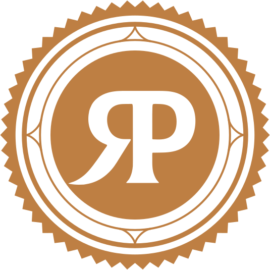
O RP no círculo serrilhado fecha a caixa e o saco, marca a tampa do pote e assina o canto de uma peça. O monograma sozinho serve ao bordado e ao favicon.
royal-selo-caramelo.svgroyal-monograma-oficial.svg-verde
A versão da embalagem: caixa e saco kraft, carimbo, impressão em uma cor. No kraft, o Verde imprime mais escuro e quente: peça prova à gráfica.
royal-horizontal-verde.svgroyal-reduzida-verde.svgroyal-vertical-verde.svgSobre foto e vídeo, sempre na área escura da sombra de leitura, onde o caramelo da oficial perderia força.
royal-horizontal-creme.svgroyal-reduzida-creme.svgFoto de perfil de todas as unidades no Instagram, no WhatsApp, no iFood e no Google: a vertical oficial sobre o Verde, já com a margem do recorte redondo. O mesmo arquivo em toda a rede (lei V). A cidade vai no nome do perfil, nunca no avatar.
royal-avatar.svg-1080.png-640.png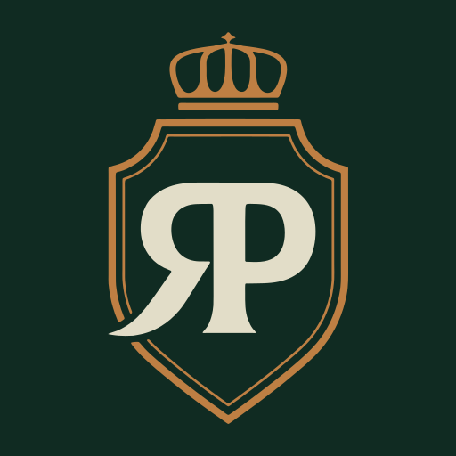
Ícone da aba do navegador e atalho na tela do celular, em tamanho real. Abaixo de 22 px entra o desenho simplificado. A imagem de compartilhamento (1200 × 630 px) aparece quando alguém manda o link do site ou do cardápio digital.
royal-favicon.svgroyal-favicon-simplificado.svg-32.png-180.png-512.pngroyal-compartilhamento-1200x630.pngassets/ com o mesmo nome, e as peças já publicadas não precisam ser refeitas. Em material que apresenta a própria marca, como este manual, vale o rótulo “reconstrução vetorial · aguarda o arquivo original”.Quem decide a versão é o fundo. Se nenhuma versão funciona sobre aquele fundo, troque o fundo, nunca a cor da marca. Nos quadros abaixo, pequenos, entra a reduzida.

| Fundo | Versão | Arquivo |
|---|---|---|
| Verde, Floresta ou Mata | Oficial: ROYAL creme, PARMA caramelo | royal-horizontal-oficial.svg |
| Foto escura, com sombra de leitura na área da marca | Creme, ou oficial quando a área é bem escura | royal-horizontal-creme.svg |
| Papel, Creme ou branco | Clara. Nunca a oficial sobre claro: o creme some | royal-horizontal-claro.svg |
| Kraft (caixa, saco, flyer do pedido) | Uma cor, Verde. A clara só com prova de gráfica | royal-horizontal-verde.svg |
| Gravação, hot stamping, selo | Uma cor, caramelo, sem degradê nem efeito metálico | royal-horizontal-caramelo.svg |
| Carimbo e impressão em uma cor | Uma cor, Verde ou a cor da tinta disponível | royal-horizontal-verde.svg |
As cinco cores contra os oito fundos da casa. Na dúvida, procure a linha da cor e a coluna do fundo: se não está marcado como sim, não use.
| Cor do arquivo | Verde | Floresta | Mata | Foto escura | Papel | Creme | Kraft | Branco |
|---|---|---|---|---|---|---|---|---|
oficial | Sim | Sim | Sim | Só bem escura | Não | Não | Não | Não |
claro | Não | Não | Não | Não | Sim | Sim | Só com prova | Sim |
verde | Não | Não | Não | Não | Sim | Sim | Sim | Sim |
creme | Sim | Sim | Sim | Sim | Não | Não | Não | Não |
caramelo | Só grande | Só grande | Não | Não | Não | Não | Não | Não |
O caramelo sozinho é a versão de gravação: em tela, ele só aparece grande sobre o Verde ou a Floresta (4,5:1 e 5,2:1). Na Mata e no claro ele não tem contraste para assinar.
A medida vem da própria marca: x é a altura da coroa, com a barra de baixo. Nada entra nessa faixa, nem texto, nem borda, nem outra marca, nem a moldura de rótulo.
| Composição | Respiro x |
|---|---|
| Horizontal | 2,7% da largura |
| Reduzida | 3,4% da largura |
| Vertical | 12% da largura |
| De uma linha | 2,9% da largura |
| Brasão | 32% da largura |
| Monograma | 37% da largura |
| Selo | 10% do diâmetro |
Medidas do vetor reconstruído, guardadas em assets/marca.json. Avatar e favicon já trazem a margem dentro do arquivo.
/* x = 19,9% de H = 2,7% da largura L (horizontal) */
.marca-respiro{
--l: 400px;
padding: calc(var(--l) * .027);
}A linha PARMEGIANA DELIVERY é a primeira a sumir: abaixo de 320 px de largura ela embaralha, e entra a reduzida. Abaixo de 130 px, o RP vira mancha: entra o brasão.
Tela · em tamanho real
320 px · completa
240 px · linha embaralha
Reduzida · 130 px
Brasão · 22 px
Impresso · régua em milímetros
77 mm · completa
Brasão · 5 mm
Na tela, a régua em milímetros é aproximada. Confira na prova impressa da gráfica. No kraft, na flexografia (a impressão da caixa e do saco) e no hot stamping, valem os mínimos maiores da tabela.
| Composição | Tela | Impresso | Kraft e hot stamping | Abaixo disso |
|---|---|---|---|---|
| Horizontal completa | 320 px de largura | 77 mm | 115 mm | Use a reduzida |
| Reduzida, sem a linha de apoio | 130 px de largura | 46 mm | 91 mm | Use o brasão |
| Vertical | 120 px de largura | 32 mm | 42 mm | Use o brasão |
| De uma linha | 120 px de largura | 55 mm | 109 mm | Use o brasão |
| Selo | 40 px | 7 mm | 13 mm | Use o monograma |
| Brasão | 22 px de largura | 5 mm | 10 mm | Use o monograma |
| Monograma RP | 16 px de largura | 3,4 mm | 5 mm | Não reduza mais |
A foto de perfil aparece grande no perfil e pequena na lista de conversas, nos comentários e no topo do iFood. Abaixo, as duas escolhas em tamanho real.
Assinatura inteira no círculoA horizontal é larga demais para um recorte redondo: mesmo grande, o nome fica miúdo.
O avatar da rederoyal-avatar.svg. A vertical cabe no círculo: o nome lê no perfil, e nos tamanhos da lista de conversas o brasão continua reconhecível, com o nome da unidade escrito ao lado pelo próprio aplicativo.
Regra: toda unidade usa o mesmo avatar. O nome da cidade vai no nome do perfil (“Royal Parma Bauru | Delivery”), nunca dentro da imagem. O perfil pessoal do Bruno Lima usa retrato real (seção 06).
Os arquivos que mais se usam. A pasta assets/ do repositório tem todas as composições nas cinco cores, em SVG e PNG.
Os dez erros mais comuns, montados com o arquivo oficial. Se uma peça se parece com algum destes quadros, ela volta para ajuste.
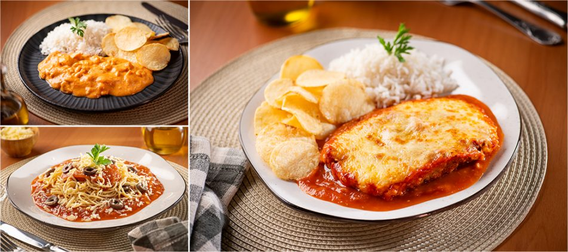
O brasão e o nome
Como o brasão é construído: o escudo de moldura dupla, a coroa, o monograma RP, o letreiro ROYAL PARMA e a linha de apoio. E como escrever o nome da marca e das unidades em texto corrido.
O brasão tem três partes que nunca se separam: a coroa com a cruz, o escudo de moldura dupla e o monograma RP. Medido no vetor reconstruído, ele cabe numa conta simples: tudo sai de x, a altura da coroa com a barra, que já é a medida da área de proteção (01.5).
royal-brasao-claro.svg. O círculo tracejado marca a abertura da moldura por onde passa a cauda do R.Medidas do vetor reconstruído, guardadas em assets/marca.json. A coroa e a moldura foram simetrizadas pelo eixo; a abertura da moldura foi preservada como está nos arquivos públicos. Valem até a chegada do original (pendência 1, seção 23).
Não há registro público do que o designer quis dizer com cada parte. O que segue é como a marca usa o brasão hoje, apoiado só em fatos que a própria Royal Parma publica: o nome, a família e a caixa.
Royal quer dizer real, de rei. A coroa traduz a primeira palavra do nome em desenho. Por isso ela só existe presa ao escudo: fora da marca, coroa não vira ícone, enfeite nem emoji.
Brasão é o sinal de uma família. A Royal Parma nasceu de uma: Bruno Lima começou em 2009 com os pais e a irmã, no restaurante Villa Parma, em Pouso Alegre (MG). A moldura dupla do escudo é a mesma da caixa e do pote: o rótulo da casa.
As iniciais de Royal Parma, e Parma lembra o prato da casa, a parmegiana. O R se alonga e sai do escudo como a receita saiu da cozinha da família para a casa de quem pede. É o único traço que rompe a moldura, e por isso vira o grafismo da casa (02.7).
Toda grande marca começa com um sonho, o meu começou em família.
As duas palavras são desenho, não fonte: serifa de contraste alto (hastes grossas, fios finos), letras estreitas e pesadas, terminais abertos que se alargam na ponta, ROYAL e PARMA coladas, sem espaço. Nenhuma fonte reproduz esse desenho; a Gloock é a fonte livre mais próxima, e por isso é a fonte dos títulos.
royal-horizontal-verde.svg, recortado no letreiro| Traço | No letreiro | Na Gloock |
|---|---|---|
| Contraste | Alto: haste grossa, fio fino | Alto, o mesmo princípio |
| Serifa | Em cunha, se abrindo na ponta | Fina, com o mesmo terminal aberto |
| Largura | Estreita e compacta | Um pouco mais larga |
| Peso | Pesado, de letreiro | Um pouco mais leve |
| Espaço entre as palavras | Nenhum: o L encosta no P | Só com espaço normal entre palavras |
| Caixa | Só maiúsculas | Maiúsculas e minúsculas: serve a qualquer título |
Por que a Gloock e não outra: entre as serifas de contraste alto com licença aberta, é a que tem o mesmo terminal aberto e a mesma tensão entre haste e fio. A escolha completa das três famílias está em 04.1.
PARMEGIANA DELIVERY diz o que a Royal Parma vende e como. É uma serifa leve, em caixa alta, com espaço largo entre as letras: na horizontal vem em duas linhas, à direita do ®; na vertical, numa linha só, embaixo do nome.
Duas linhas, alinhadas à esquerda, com a altura somada próxima à das letras de PARMA. É a primeira coisa a sumir quando a marca diminui: abaixo de 320 px de largura, use a reduzida, que não tem a linha (01.6).
Uma linha, centrada embaixo de PARMA. Legível a partir de 120 px de largura da vertical inteira; abaixo disso, entra o brasão.
PARMEGIANA DELIVERY
A forma do logotipo, e a que este manual usa em todos os modelos. Em texto corrido, escreva em caixa normal: “a Royal Parma é uma parmegianaria delivery”.
PARMEGIANARIA DELIVERY
A grafia da caixa e de alguns avatares. Não é erro de quem usou: são duas versões vivas, e a rede precisa escolher uma.
Pendência 2 · Uma linha de apoio sóPARMEGIANA DELIVERY (logotipo) ou PARMEGIANARIA DELIVERY (caixa e avatares).Enquanto isso: vale a do logotipo. Caixa e avatares mudam na próxima reimpressão, depois da decisão.
AbertaA linha de apoio também não se redigita: ela vem com o arquivo. O rótulo de rótulo do sistema (Source Sans 3 em caixa alta, com espaço de 0,18 em) faz eco a ela sem copiá-la (04.5).
O ® quer dizer “marca registrada” e só cabe depois que o Instituto Nacional da Propriedade Industrial (INPI) concede o registro, na classe do serviço. O logotipo público da Royal Parma traz o ®; o número do registro ainda não foi confirmado em fonte pública.
No alto, logo depois do A de PARMA, na cor de ROYAL. Já está dentro de todas as composições com o nome. Não se acrescenta, não se aumenta, não se apaga.
| Situação | O que fazer |
|---|---|
| Registro concedido e vigente, na classe usada | Permitido O ® fica no logotipo. |
| Marca só depositada (pedido em andamento) | Vedado O ® afirma um fato falso. Usa-se a versão sem símbolo. |
| Registro em outra classe ou com outra grafia | Vedado O mesmo caso do pedido em andamento. |
| Texto corrido (“Royal Parma®”) | Não use O ® mora no logotipo. No texto, o nome vai limpo. |
| ™ ou “marca em processo de registro” | Não use O ™ não tem efeito jurídico no Brasil. |
Pendência 18 · Confirmar o registro no INPINúmero do registro, classe e situação (concedido e vigente).Enquanto isso: os arquivos seguem como a franqueadora publica, com o ®. Se o registro não estiver concedido na classe do serviço, os arquivos ganham versões sem o símbolo, com o mesmo nome, e o ® sai de toda peça nova.
AbertaNa Circular de Oferta de Franquia (COF), a situação da marca vem com o número do registro ou do pedido (Lei 13.966/2019, art. 2º, XIV). Anunciar franquia com a marca só depositada é possível, desde que isso seja dito com clareza (08.6).
Em texto corrido, legenda, bio, e-mail, cardápio e contrato, o nome é escrito, não desenhado. Duas palavras, caixa normal, sem símbolo. A unidade é a marca mais a cidade, sempre nessa ordem.
| Onde | Como escrever | Exemplo |
|---|---|---|
| Primeira menção | Royal Parma, completo | “A Royal Parma chega quentinha na sua casa.” |
| Depois, no mesmo texto | a Royal (informal, já usado pela marca) | “Marca quem vai dividir uma Royal com você.” |
| Unidade | Royal Parma [Cidade] | “Royal Parma Bauru”, nunca “Royal Bauru” nem “Parma Bauru” |
| Nome de perfil | Royal Parma [Cidade] | Delivery | Arroba no padrão @royalparma[cidade] (pendência 14) |
| Expansão | Royal Parma Franquias | FRANQUIAS em rótulo, ao lado do logotipo, sem logotipo próprio (06.4) |
| Fundador | Bruno Lima · Fundador da Royal Parma | Na assinatura e na legenda do vídeo |
| Produto da casa | Molho de Tomate Royal Parma | O nome do produto em Gloock no rótulo; em texto, caixa normal |
Royal Parma
Duas palavras, iniciais maiúsculas.
RoyalParma
Colado só existe no desenho do letreiro. No texto, separe.
A Royal Parma abriu em Bauru.
Caixa normal no meio da frase.
A ROYAL PARMA abriu em Bauru.
Caixa alta corrida grita e imita o logotipo. Caixa alta só em título curto de peça (04.4).
Royal Parma Curitiba
Marca primeiro, cidade depois.
Parma Royal Curitiba
A ordem do nome não muda.
Royal Parma
Sem acento: Parma é nome de cidade italiana.
Royal Parmã
Nem til, nem acento, nem aportuguesamento.
Peça sua Royal Parma hoje.
Na primeira menção, o nome inteiro. “A Royal” vem depois.
Peça sua Royal hoje.
No começo do texto, “Royal” sozinho não diz de quem é.
Royal Parma Bauru | Delivery
A cidade é texto, no nome do perfil.
Royal Parma® Bauru
O ® não vai no texto, e a unidade não ganha símbolo (02.5).
A perna do R é o único traço que rompe a moldura. A caixa kraft já usa esse gesto: a curva ampliada em escala gigante, saindo de um canto e cortada pela borda. O sistema a transforma no grafismo de campo da casa.
Cores
Os três campos, o papel de cada cor, os pares de leitura medidos e o orçamento do caramelo: no máximo 10% da peça.
Toda peça começa pela escolha do campo, a cor de fundo. O Verde chama atenção, o Papel se lê com calma e o Kraft acompanha o pedido. O campo decide a cor de tudo o que vai em cima: título, texto, molho, botão e versão da marca.
Campo 1 · o que chama atenção
Verde Royal
#102B22 · versão oficial
Campo 2 · o que se lê com calma
Papel
#FAF8F2 · versão clara
Campo 3 · o que vai com o pedido
Kraft
#C9A67E · uma cor, Verde
Dezenove cores, cada uma com um papel. As três primeiras foram medidas no logotipo e no site oficial; as outras são extensões calculadas para fechar o contraste de leitura. Valores para tela: impressão em 03.7.
Da marca
--verde
Do site oficial, da fachada e do rótulo do molho. O campo da casa; no claro, a cor do título e do texto forte.
--caramelo
Medido no logotipo: a palavra PARMA e a moldura do brasão. Palavra de molho, numeral, filete e botão sobre Verde e Floresta. Nunca texto no claro.
--creme
Medido no logotipo: a palavra ROYAL e o RP. Título sobre o Verde; campo claro alternado com o Papel; fundo de cardápio.
Campos
--florestaDo site oficial. Rodapé, capa profunda e a sombra de leitura sobre foto. Substitui o preto puro.
--mataExtensão. Painel e cartão sobre o Verde; a curva do R no Verde. Nunca campo de peça inteira.
--papelO fundo do site oficial. Documento, miolo, cardápio, página de franquia.
--kraftO tom médio do papel da caixa e do saco, impresso. Na tela, imita a embalagem. Só com texto Verde.
--brancoDocumento impresso formal e fundo de prato recortado. Na tela, o Papel é mais quente e cansa menos.
--melO caramelo clareado: rótulo pequeno, link e alerta sobre Verde, Mata e Floresta, abaixo de 18 px.
Texto e apoio
--trigoTexto corrido sobre Verde e Mata: um pouco abaixo do creme, para o título se destacar.
--musgoApoio, legenda e fonte de dado sobre Verde e Mata.
--canelaO caramelo escurecido: palavra de molho, numeral, rótulo e link no Papel e no Creme.
--grafiteTexto corrido sobre Papel, Creme e branco. Mais suave que o Verde, para o título liderar.
--pedraApoio, legenda e fonte sobre Papel e Creme.
--filete-escuro · --filete-claroFios de 1 px: o escuro no Verde, o claro no Papel. Linha decorativa, nunca texto.
Estado e dado · nunca campo de peça
--tomateDo molho e da fotografia. Só alergênico e erro de formulário, sempre com ícone e texto. Nunca fundo, título ou botão (03.6).
--olivaDo site oficial. Segunda série de gráfico e selo de vegetariano (a parmegiana de abobrinha).
--okConfirmação de formulário (“pedido enviado”), sempre com ícone e texto.
:root{
--verde:#102B22; --caramelo:#BE7F43; --creme:#E2DDC8;
--floresta:#0B1D17; --mata:#173A2D; --papel:#FAF8F2;
--kraft:#C9A67E; --branco:#FFFFFF; --mel:#DDA867;
--canela:#835020; --trigo:#D3D1BD; --musgo:#AEB8A6;
--grafite:#38433C; --pedra:#535E56;
--oliva:#526243; --tomate:#B23A26; --ok:#2F6B3A;
--filete-claro:#DDD6C1; --filete-escuro:#2C4A3D;
}
body{ background:var(--papel); color-scheme:light; }Cor de texto sobre cor de fundo, com o contraste medido pela fórmula da norma internacional de acessibilidade (WCAG 2.1). O mínimo para texto é 4,5 para 1; para texto grande, de 24 px ou mais, 3 para 1. Dezenove pares liberados e os sete erros que mais aparecem.
| Texto | Verde | Floresta | Mata | Papel | Creme | Kraft | Branco | Caramelo |
|---|---|---|---|---|---|---|---|---|
| Creme | 11,1 · texto | 12,8 · texto | 9,2 · texto | 1,3 · não | · | 1,7 · não | 1,4 · não | 2,4 · não |
| Trigo | 9,8 · texto | 11,3 · texto | 8,1 · texto | 1,5 · não | 1,1 · não | 1,5 · não | 1,5 · não | 2,2 · não |
| Musgo | 7,3 · texto | 8,5 · texto | 6,1 · texto | 1,9 · não | 1,5 · não | 1,1 · não | 2,1 · não | 1,6 · não |
| Mel | 7,1 · texto | 8,2 · texto | 5,9 · texto | 2,0 · não | 1,6 · não | 1,1 · não | 2,1 · não | 1,6 · não |
| Caramelo | 4,5 · texto | 5,2 · texto | 3,8 · grande | 3,1 · grande | 2,4 · não | 1,5 · não | 3,3 · grande | · |
| Branco | 15,1 · texto | 17,5 · texto | 12,5 · texto | 1,1 · não | 1,4 · não | 2,3 · não | · | 3,3 · grande |
| Verde | · | 1,2 · não | 1,2 · não | 14,2 · texto | 11,1 · texto | 6,6 · texto | 15,1 · texto | 4,5 · texto |
| Floresta | 1,2 · não | · | 1,4 · não | 16,5 · texto | 12,8 · texto | 7,7 · texto | 17,5 · texto | 5,2 · texto |
| Grafite | 1,5 · não | 1,7 · não | 1,2 · não | 9,7 · texto | 7,6 · texto | 4,5 · texto | 10,3 · texto | 3,1 · grande |
| Pedra | 2,2 · não | 2,6 · não | 1,9 · não | 6,4 · texto | 5,0 · texto | 3,0 · grande | 6,8 · texto | 2,0 · não |
| Canela | 2,3 · não | 2,6 · não | 1,9 · não | 6,3 · texto | 4,9 · texto | 3,0 · grande | 6,7 · texto | 2,0 · não |
| Oliva | 2,3 · não | 2,7 · não | 1,9 · não | 6,2 · texto | 4,8 · texto | 2,9 · não | 6,6 · texto | 2,0 · não |
| Tomate | 2,5 · não | 2,9 · não | 2,1 · não | 5,6 · texto | 4,4 · grande | 2,6 · não | 6,0 · texto | 1,8 · não |
É a lei I da casa: o verde manda, o caramelo tempera. Somando tudo o que é caramelo, inclusive a palavra PARMA e a moldura do brasão na assinatura, ele ocupa no máximo 10% da área da peça e marca uma informação só.
Duas é melhor ainda
Dobra o pedido e marca quem vai dividir uma Royal com você.
ArrasteDuas é melhor ainda
Dobra o pedido e marca quem vai dividir uma Royal com você.
Porcentagens medidas nas duas peças ao lado, a 1080 px de largura, contando os pixels de caramelo na peça inteira.
A conta vale para todas as peças do mês somadas, não para cada uma. Uma capa pode ser quase toda Verde e o miolo do mesmo carrossel quase todo Papel. A foto do prato fica fora da conta: ela traz a própria cor.
Tradição no sabor faz história.
Todo dia é dia de risoto.
Hora de pedir.
Uma é boa. Duas é melhor ainda.
Peça pelo cardápio digital.
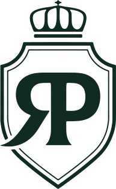
Seu próximo prato favorito.
O Brasil adicionou o molho.
Tudo fica melhor com Royal Parma.
Na Royal, tudo é para já.
A foto do prato já traz o vermelho do molho e o dourado do queijo gratinado. É por isso que a paleta gráfica não tem vermelho: ele é da comida, e a peça não disputa com o prato. O tomate existe no sistema só para alertar.
No claro · tomate
ContémGlúten, leite e ovo. Pode conter traços de [ingrediente].
No Verde · mel
ContémGlúten, leite e ovo. Pode conter traços de [ingrediente].
Gratinada na hora.
Royal Parma [Cidade]
Gratinada na hora.
Os HEX desta seção valem para a tela. Na gráfica, a mesma cor muda com o papel e a tinta: o Verde que sai certo no couché pode sair quase preto no kraft. A referência de impressão só fecha com prova de gráfica.
| Cor | Tela | CMYK (offset) | Pantone | No kraft (flexografia) |
|---|---|---|---|---|
| Verde Royal | #102B22 | [após prova] | [após prova] | A cor da caixa e do saco. Imprime mais escura e mais quente: ajuste na prova |
| Caramelo Royal | #BE7F43 | [após prova] | [após prova] | Não como texto (1,5:1). Só em selo ou gravação grande, testado na prova |
| Creme Royal | #E2DDC8 | [após prova] | [após prova] | Não se usa: some no papel pardo |
| Papel | #FAF8F2 | Papel do próprio impresso (sem tinta) | · | · |
| Kraft | #C9A67E | É o papel, não uma tinta | · | O próprio papel; o tom varia por lote |
verde (uma cor) para kraft; a claro para impresso em papel branco ou creme.Kraft · uma cor
Obrigado pelo pedido.
Na tela, o Kraft é uma simulação. No impresso, o fundo é o papel, e só o Verde é tinta. A palavra de molho continua em itálico, em Verde.
Cores que a rede usa hoje e que convergem para as do logotipo. Nenhuma peça publicada precisa ser apagada: as próximas já saem com a cor nova, e a migração completa está na seção 22.
As duas cores do site são próximas das do logotipo, mas duas versões da mesma cor viram três na terceira peça. A casa fica com as medidas no arquivo da marca.
Tipografia e a palavra de molho
Gloock nos títulos, Playfair Display Italic na palavra de molho, Source Sans 3 no texto. Escalas para documento, peça de 1080 e celular.
As três são gratuitas e vêm do Google Fonts, com licença aberta (SIL Open Font License): podem ir para post, site, cardápio, vídeo, embalagem e apresentação sem pagar licença. Cada uma tem um trabalho só.
Aa Bb Cc Dd Ee Ff Gg Hh Ii Jj Kk Ll Mm Nn Oo Pp Qq Rr Ss Tt Uu Vv Ww Xx Yy Zz Çç Ãã Éé Óó 0123456789
Títulos, numerais e preço
Serifa de contraste alto com terminais abertos, desenhada por Eduardo Tunni. Entre as fontes livres, é a que tem o sotaque do letreiro ROYAL PARMA (02.3). Tem um peso só, 400, e é para título grande: no documento a partir de 21 px, na peça a partir de 28 px.
Regular 400 · o único pesoCaixa normal no título longoCAIXA ALTA NO CURTO
Aa Bb Cc Dd Ee Ff Gg Hh Ii Jj Kk Ll Mm Nn Oo Pp Qq Rr Ss Tt Uu Vv Ww Xx Yy Zz Çç Ãã Éé Óó 0123456789
A palavra de molho e a citação
Itálico serifado de contraste alto, desenhado por Claus Eggers Sørensen. É um itálico como o que os posts da marca já usam no meio do título em caixa alta. No sistema, faz uma coisa só: tempera uma palavra por título (04.3) e assina a frase curta do fundador.
Italic 600 · a palavra de molhoItalic 500 · citação curta
Aa Bb Cc Dd Ee Ff Gg Hh Ii Jj Kk Ll Mm Nn Oo Pp Qq Rr Ss Tt Uu Vv Ww Xx Yy Zz Çç Ãã Éé Óó 0123456789
Texto, rótulo, botão, cardápio, dado
Sem serifa humanista da Adobe, desenhada por Paul D. Hunt. Já é a fonte de parágrafo do site oficial: o sistema continua o que a marca começou. Lê bem em 13 px no celular e em 26 px no post, e tem algarismos claros para preço e horário.
Regular 400 · corpoMedium 500 · destaque e rótulo de peçaSemiBold 600 · botão, nome do prato, rótuloBold 700 · número de interface, preço pequeno
Link único do Google Fonts · as três famílias
https://fonts.googleapis.com/css2?family=Gloock&family=Playfair+Display:ital,wght@1,500;1,600;1,700&family=Source+Sans+3:wght@400;500;600;700&display=swap
No computadorPara editor de vídeo, PowerPoint e programas de design, baixe as três famílias no Google Fonts e instale. Os arquivos web que acompanham este manual ficam em assets/fontes/.
Quando faltarSe uma ferramenta não tem a fonte, use a reserva de 04.7 e registre a troca. Nunca troque por uma fonte parecida “de olho”.
--display: "Gloock", "DM Serif Display", Georgia, serif;
--molho: "Playfair Display", Georgia, serif; /* só itálico */
--texto: "Source Sans 3", "Source Sans Pro", Arial, sans-serif;
body{ font-variant-numeric: lining-nums; }
h1 em, h2 em, h3 em{
font-family: var(--molho); font-style: italic;
font-weight: 600; font-size: 1.04em;
text-transform: none; color: var(--f-molho);
}Uma escala para o que se lê na tela e no papel (manual, site, cardápio digital, proposta) e outra para a peça de 1080 px das redes. Cada amostra do documento está no tamanho real da tela em que você lê.
Parmegianas da casa
Gratinada até o queijo dourar.
Frango, mignon ou abobrinha.
Escolha no cardápio digital da unidade e peça para entrega ou retirada.
Royal Parma [Cidade]Pedidos: (DD) [número oficial]
| Elemento | Na peça | No celular | Regra |
|---|---|---|---|
| Título | 84 a 120 px | cerca de 30 a 43 px | Gloock 400, até 3 linhas, uma palavra de molho. Padrão: 104 |
| Preço | 96 a 140 px | cerca de 35 a 50 px | Gloock 400, sempre com a condição ao lado (04.5) |
| Subtítulo | 52 a 60 px | cerca de 19 a 22 px | Gloock 400 |
| Chamada e texto | 32 a 38 px | cerca de 12 a 14 px | Source Sans 3 400 |
| Rótulo | 26 px | cerca de 9 px | Source Sans 3, caixa alta, 0,18 em |
| Bloco da unidade e condição de promoção | 26 px | cerca de 9 px | O piso: nunca menor, mesmo na letra miúda |
Régua · como cada corpo da peça chega ao celular
A assinatura do sistema. Em cada título, uma palavra ou expressão curta ganha itálico serifado, na cor de molho do campo: é a parte que dá vontade ou que decide. Como o molho sobre a parmegiana: um só, por cima, e é ele que a gente lembra.
No Verde, Floresta e Mata · caramelo
Seu próximo prato favorito.
Caramelo #BE7F43 sobre o Verde: 4,5 para 1, só em corpo de título.
No Papel e no Creme · canela
Seu próximo prato favorito.
Canela #835020 sobre o Papel: 6,3 para 1. No claro, caramelo nunca.
No Kraft · Verde
Seu próximo prato favorito.
Verde #102B22 sobre o Kraft: 6,6 para 1. O molho é só o itálico.
Como escolher a palavra
Dentro da caixa alta
Peça pelo cardápio digital
O título em caixa alta (até cinco palavras) e a palavra de molho em caixa normal.
Hora de pedir.1,00
Hora de pedir.1,04 · padrão
Hora de pedir.1,08
Frases publicadas pela Royal Parma, reescritas com a palavra de molho
“Tradição no sabor faz história!” · bio das unidades
Tradição no sabor faz história.
“Uma Royal Parma é boa. Mas duas… é melhor ainda!” · legenda de reels
Duas é melhor ainda.
“A Itália trouxe a inspiração. E o Brasil? Ele adicionou o molho!” · post
E o Brasil? Adicionou o molho.
“O sinal tocou, é hora de pedir Royal Parma!” · post
O sinal tocou: hora de pedir.
“Tudo fica melhor com Royal Parma” · post
Tudo fica melhor com Royal Parma.
“Se a vida te der arroz arbóreo” · post de risoto
Se a vida te der arroz arbóreo.
Frases coletadas nas redes e nos sites da Royal Parma em 30/09/2026. A reescrita tira a exclamação do título (no máximo uma por peça, e melhor na legenda) e põe o molho na palavra que carrega a frase.
Hora de pedir
O sinal tocou. A parmegiana sai do forno e vai direto para a caixa.
Todo dia é dia de risoto.
Confira os sabores no cardápio digital da sua unidade.
Marca quem vai dividir com você.
Salva o cardápio digital da sua unidade para o próximo pedido.
Não faça
Seu próximo prato favorito está no cardápio.
Dois temperos, nenhum gosto. Escolha uma: aqui, “favorito”.
Escolha seu prato no cardápio digital e receba em casa, quentinho, com o molho da casa.
Itálico serifado no meio do texto corrido vira ruído. No parágrafo, o destaque é o peso 600.
Todo dia é dia de risoto.
Fonte manuscrita ou de script não é o molho e sai da casa (04.7). O molho é sempre a Playfair Display Italic.
Todo dia é dia de risoto.
Caramelo sobre Papel fica em 3,1 para 1 e some de longe. No claro, o molho é canela.
Os posts da marca usam título em caixa alta, e a casa mantém isso, com um limite: até cinco palavras. Título maior que isso vai em caixa normal, que se lê mais rápido. Em caixa alta, a Gloock ganha um respiro de 0,01 em entre as letras.
Pague pelo cardápio digital
Quatro palavras em caixa alta, o molho em caixa normal.
Escolha o seu prato preferido no cardápio digital da unidade
Dez palavras em caixa alta viram um bloco que ninguém lê no celular.
Escolha seu prato no cardápio digital da unidade.
Caixa normal, ponto final, uma palavra de molho.
Pague pelo cardápio digital
Com a palavra de molho também em caixa alta, o contraste some.
| Onde | Caixa | Exemplo |
|---|---|---|
| Título curto de peça (até cinco palavras) | Alta, com o molho em caixa normal | PEÇA AGORA, PAGUE PELO CARDÁPIO DIGITAL |
| Título longo, título de documento e de site | Normal, com ponto final | “O prato como ele chega.” |
| Rótulo, botão, fólio | Alta, em Source Sans 3 600, 0,18 em | CARDÁPIO, PEÇA AGORA, 1 / 5 |
| Texto corrido, legenda, bio, nome do prato no cardápio | Normal, sempre | Parmegiana de frango |
O rótulo do sistema é a linha PARMEGIANA DELIVERY transformada em ferramenta: Source Sans 3 600, caixa alta, 0,18 em entre as letras. Os números grandes (preço, numeral, dado) vão em Gloock, e o preço nunca aparece sem a condição.
Parmegianas
Delivery e retirada
Royal Parma [Cidade] · 1 / 5
R$[valor]Parmegiana de frango, aprox. [peso] g, serve 1. Pelo cardápio digital da Royal Parma [Cidade]. Preço de [data].
O número em Gloock e a condição ao lado, no mesmo bloco: prato, porção, canal, unidade e data.
R$[valor]
Sem a condição, o componente se marca sozinho com o tracejado de alerta. Preço solto vincula a rede ao valor em qualquer unidade e canal (08.4).
Números em Gloock usam algarismos alinhados, todos da altura da maiúscula. Número da rede (lojas, cidades, estados) e número ao investidor só com fonte e data, e por enquanto ficam fora (pendências 4 e 6).
No cardápio, digital ou impresso, quem pede procura o prato, confere o que vem e o que contém, e só então olha o preço. A tipografia segue essa ordem: nome, descrição, alergênicos, porção e preço, sempre na mesma linha.
Royal Parma [Cidade]Parmegianas
Parmegiana de frango
Filé de frango empanado, molho de tomate e queijo gratinado. [Acompanhamentos da unidade].
Contém: [alergênicos do prato]
Aprox. [peso] g · serve 1R$ [valor]
Parmegiana de mignon
Mignon empanado, molho de tomate e queijo gratinado. [Acompanhamentos da unidade].
Contém: [alergênicos do prato]
Aprox. [peso] g · serve 1R$ [valor]
Parmegiana de abobrinha Vegetariano
Abobrinha empanada, molho de tomate e queijo gratinado. [Acompanhamentos da unidade].
Contém: [alergênicos do prato]
Aprox. [peso] g · serve 1R$ [valor]
Massas e risotos
Strogonoff de frango
[Descrição do prato, como a ficha técnica da rede].
Contém: [alergênicos do prato]
Aprox. [peso] g · serve 1R$ [valor]
| Nível | Fonte | Celular | Regra |
|---|---|---|---|
| Seção do cardápio | Gloock 400 | 24 px | Parmegianas, Strogonoff, Massas, Risotos, Bebidas |
| Nome do prato | Source Sans 3 600 | 17 px | Caixa normal, nome igual em toda a rede |
| Descrição | Source Sans 3 400 | 15 px | O que vem no prato, sem adjetivo que não se prova |
| Alergênicos | Source Sans 3 500, com ícone | 13 px | Tomate no claro, mel no Verde (03.6) |
| Porção e preço | Source Sans 3 400 e 700 | 13 e 17 px | Na mesma linha: o preço nunca sem a porção |
Pendência 11 · Alergênicos por pratoA tabela de alergênicos e a informação de porção de cada prato.Enquanto isso: o campo fica no cardápio com “[alergênicos do prato]” e cada unidade confere a lei do seu estado (seção 08).
AbertaNem toda ferramenta tem as três famílias. Antes de trocar, procure pelo nome e tente instalar. Se não der, a reserva é sempre a mesma, para a rede inteira, e a troca fica registrada no arquivo da peça.
| Ferramenta | Como conseguir as fontes da casa | Título (reserva) | Palavra de molho (reserva) | Texto (reserva) |
|---|---|---|---|---|
| Canva | Procure Gloock, Playfair Display e Source Sans 3 pelo nome. Se faltar, envie o arquivo no Kit de Marca (recurso pago) | DM Serif Display | Playfair Display Italic | Source Sans Pro |
| Google Docs e Slides | Em Fonte, “Mais fontes”, procure pelo nome | DM Serif Display ou Georgia | Playfair Display Italic | Source Sans Pro ou Arial |
| Editor de vídeo (CapCut e parecidos) | Importe as fontes baixadas do Google Fonts, se o editor permitir | A serifa de contraste alto disponível mais próxima | Playfair Display Italic | Arial |
| PowerPoint e Word | Instale as três no computador. Ao enviar para outra pessoa, mande em PDF | Georgia | Georgia Itálico | Arial |
A migração do site e dos modelos está na seção 22. O passo a passo do kit da unidade no Canva, com as fontes já configuradas, está em 21.3.
As cinco leis
As regras que valem para toda peça da rede, de qualquer unidade, em qualquer canal. Cada uma com o teste que a confirma.
Verde Royal e Papel são os campos; o kraft é o campo do pedido. O caramelo marca uma informação por peça e ocupa no máximo 10% da área. No claro, caramelo nunca é texto: ali ele vira canela.
O verde vem da fachada, do uniforme e do rótulo do molho: é a cor que a pessoa já reconhece na rua e no celular. O caramelo vem da palavra PARMA e da moldura do brasão. Ele funciona como o tempero de um prato: pouco, no lugar certo, faz diferença; demais, tira o gosto de tudo.
Por isso o caramelo marca uma coisa só: a palavra de molho do título, o preço já com a condição ou o botão. Os fios do fólio, o numeral e as pérolas acompanham essa informação, e a soma não passa de 10% da área.
A regra também é de leitura. Caramelo sobre o Papel tem contraste de 3,1 para 1, e sobre o Creme, de 2,4 para 1, abaixo dos 4,5 para 1 que um texto precisa para ser lido por todo mundo. No claro, a palavra de molho, o rótulo e o numeral saem em canela; o botão e a moldura, em Verde. No kraft, tudo o que é tinta vira Verde.
Chegou quentinho.
Parmegiana de frango, arroz e batata chips, do jeito que sai da cozinha da unidade.
Peça agoraChegou quentinho.
Parmegiana de frango, arroz e batata chips, do jeito que sai da cozinha da unidade.
Teste de um minuto · Lei I
Cubra a palavra de molho e a marca com o dedo: ainda sobrou caramelo que não seja filete, pérola, numeral ou botão sobre Verde?
Sobrou? Troque por creme, Verde ou canela, ou apague. A peça é clara? Então nenhum texto pode estar em caramelo.
Uma palavra ou expressão curta, em itálico serifado, tempera o título: a parte que dá vontade ou que decide. Se tudo é destaque, nada é. Se falta espaço, corta-se texto, nunca margem.
Os posts da Royal Parma já fazem isso: o título em serifa forte e uma palavra em itálico, como em “Pague mais barato pelo nosso cardápio digital!”. O sistema dá nome ao gesto e o torna regra: a palavra de molho é uma por título, e é ela que a pessoa lê primeiro quando passa o dedo pela tela.
Escolha a palavra que dá fome ou que decide o pedido: quentinho, crocante, dividir, sexta, chegou. Quase nunca é o nome da marca, um número ou um verbo de ordem. A regra completa, com a fonte e o tamanho, está em 04.3.
A disciplina vale para a peça inteira: uma ideia, uma palavra de molho e um pedido por peça, com a margem de 72 px no post de 1080. Quando o texto não cabe, sai texto, e a margem fica.
Parmegiana de frango
Hoje a parmegiana é para dividir.
Peça pelo cardápio digital da sua unidade e marque quem vai dividir com você.
Quentinha, crocante e com molho de verdade!
Parmegiana de frango, de mignon ou de abobrinha, com arroz, batata chips e adicionais. Peça pelo cardápio digital, pelo WhatsApp ou pelo aplicativo e marque quem vai dividir com você!
Teste de um minuto · Lei II
O título tem exatamente uma palavra de molho?
Tem mais? Fique com a que dá vontade ou decide e tire o resto. Tem nenhuma? Reescreva o título até ele ter uma palavra que mereça o tempero.
Só foto real do prato da Royal Parma, na porção, na embalagem e com o acompanhamento que a unidade entrega. Nada de foto de banco, prato gerado ou alterado por inteligência artificial (IA), queijo ou porção aumentados. Gente só real, com autorização por escrito.
Rótulo, para quem come, é promessa: o que está escrito tem de ser o que vem dentro. No delivery a pessoa não vê o prato antes de pagar. Ela decide pela foto, e a foto vira parte do combinado. O Código de Defesa do Consumidor (CDC, Lei 8.078/1990) diz que a oferta suficientemente precisa obriga quem anuncia (art. 30) e que a apresentação do produto deve trazer informação correta sobre características e quantidade (art. 31). Foto com porção, gratinado ou acompanhamento que a unidade não entrega é publicidade enganosa (art. 37, § 1º).
A frase “imagem meramente ilustrativa” não conserta uma foto que engana: nenhuma regra dá esse efeito a ela. O caminho é outro: fotografar o prato real, na porção real, na embalagem da unidade. Arrumar o prato, limpar a borda e caprichar na luz pode; trocar ingrediente, dobrar o queijo ou encher a marmita para a foto não pode. Como fazer a foto está em 09.3.
Inteligência artificial não muda a régua. O Conselho Nacional de Autorregulamentação Publicitária (CONAR) diz, no guia de influenciadores de 2026 (item 1.3.1), que as regras valem também para conteúdo gerado ou editado com IA. Prato feito por IA não entra. Pessoa também não: quem aparece é gente real, com autorização de imagem por escrito guardada (Código Civil, art. 20; Código CONAR, art. 34, a), e funcionário aparece como funcionário, nunca como cliente (Anexo Q, item 3, b).
assets/fotos/. Se não houver, a peça sai só com tipografia. Nunca foto de banco.[peso] g em colchete; a peça publicada só sai com o número que a unidade confirmou.Do jeito que chega.
Parmegiana de frango, arroz e batata chips. [peso] g, serve [nº] pessoas.
Porção gigante para a família.
Imagem meramente ilustrativa.
Teste de um minuto · Lei III
Se o cliente abrir a caixa ao lado da peça, ele vê o mesmo prato, na mesma porção, com os mesmos acompanhamentos?
Não vê? Troque a foto pela do prato real, ou mude o texto para dizer exatamente o que vem. Tem pessoa na foto? Só com a autorização por escrito guardada.
Superlativo, número da rede, “mais barato”, desconto, prazo de entrega, investimento e retorno só com fonte, data e condição na peça ou acessíveis a partir dela. “A melhor” sai. Promoção sai com a regra escrita.
Quem anuncia tem de provar o que diz. O CDC põe o ônus da prova em quem patrocina a publicidade (art. 38) e manda guardar os dados que sustentam a mensagem (art. 36, parágrafo único). O Código do CONAR pede comprovação para toda afirmação sobre fato ou dado objetivo (art. 27, § 1º) e fonte identificável para pesquisa e estatística (art. 27, § 7º). “A maior parmegianaria delivery do Brasil” é uma afirmação desse tipo: só entra com o critério, a fonte e a data (pendência 3).
Promessa sem condição também engana, por omissão (CDC, art. 37, § 3º). Cupom sem validade, “entrega grátis” com pedido mínimo escondido e “mais barato” sem dizer qual prato, em qual canal e em que data deixam de fora justamente o que decide a compra. Desconto do tipo “de R$ [x] por R$ [y]” exige provar que o preço anterior foi praticado (Código CONAR, art. 27, § 3º, a). Sorteio, vale-brinde e “os primeiros que pedirem ganham” dependem de autorização federal (Lei 5.768/1971): sem ela, não saem (08.3).
Para quem investe vale o mesmo, com mais cuidado: número de investimento, retorno e faturamento só igual à Circular de Oferta de Franquia (COF) vigente, com a frase “pode variar conforme praça, operação e execução” (08.6).
10% no cardápio digital.
Cupom [CÓDIGO]
Em pedidos a partir de R$ [valor], de [data] a [data], na Royal Parma Bauru, pelo cardápio digital. Um uso por CPF. Não cumulativo com outras promoções.
A maior do Brasil
A melhor parmegiana do Brasil.
Aqui é mais barato que no aplicativo. Entrega grátis e cupom de 10% por tempo limitado. Corre!
Teste de um minuto · Lei IV
Para cada número, superlativo ou desconto da peça, você consegue mostrar agora a fonte, a data e a condição escrita na arte?
Não consegue? A frase sai, ou a peça espera a prova. É promoção? Confira se a regra está completa com o aviso de 08.3.
Toda unidade usa os mesmos arquivos, cores, fontes e modelos. A cidade entra em texto, “Royal Parma Bauru”, nunca como logotipo, cor, fonte ou bio próprios. A unidade adapta a foto e a informação local, não a identidade.
Quem pede em uma cidade e viaja para outra precisa reconhecer a Royal Parma na hora: o mesmo verde, o mesmo brasão, o mesmo jeito de falar. Cada versão local da marca enfraquece todas as outras e abre espaço para perfil falso, que se aproveita justamente da confusão sobre qual é o canal oficial.
A franquia existe para isso. Pela Lei de Franquias (Lei 13.966/2019, art. 1º), o franqueador autoriza o franqueado a usar a marca e o método da rede. A marca é usada como ela é, pelo arquivo, não reinterpretada. E na publicidade, quem participa responde junto (CDC, art. 7º, parágrafo único): uma promessa feita em nome de uma unidade pesa sobre o nome de todas.
O que é da cidade entra como informação: a foto da própria loja e da própria equipe, o horário, o bairro, a área de entrega, os canais e o evento local. Como cada unidade se apresenta nas redes está em 06.3.
Sexta é dia de dividir.
Entregamos de [dia] a [dia], das [hora] às [hora], em [bairros].
Royal Parma BauruDelivery e retiradaPedidos: (DD) [número oficial]
Royal BauruSexta é dia de dividir!
A melhor parmegiana da cidade, só aqui.
Teste de um minuto · Lei V
Troque o nome da cidade por outra: a peça poderia ser de qualquer unidade da rede?
Não poderia? Algo da identidade foi adaptado. Volte ao modelo do kit e deixe a cidade só no texto e na foto local.
Para imprimir em A4 e colar ao lado do computador de quem cria e de quem aprova as peças, na franqueadora e em cada unidade. Os cinco testes, nesta ordem, levam um minuto.
Manual de marca · 05
As cinco leis da casa.
Antes de publicar qualquer peça, faça os cinco testes, nesta ordem. Se um deles falhar, a peça volta para ajuste.
O verde é a casa; o caramelo é o tempero.
Caramelo numa informação só, até 10% da área. No claro, nunca é texto.
Teste
Cobrindo a palavra de molho e a marca, ainda sobra caramelo?
Passa: não sobra.
Uma palavra de molho por título.
A palavra que dá vontade ou decide. Falta espaço: corte texto, nunca margem.
Teste
O título tem exatamente uma palavra de molho?
Passa: tem uma.
O que a peça mostra é o que chega.
Foto real do prato, na porção e na embalagem. Nada de banco nem IA. Gente com autorização.
Teste
Abrindo a caixa ao lado da peça, o cliente vê o mesmo prato?
Passa: vê o mesmo.
Toda promessa tem prova e condição.
Superlativo, número, preço, desconto e prazo com fonte, data e regra. “A melhor” sai.
Teste
Cada promessa tem fonte, data e condição escrita na arte?
Passa: todas têm.
Uma rede, uma marca.
Mesmos arquivos, cores, fontes e modelos. A cidade entra em texto.
Teste
Trocando a cidade, a peça serviria a qualquer unidade?
Passa: serviria.
Na dúvida, não publique: pergunte ao marketing da franqueadora.
Rótulo Real v1 · setembro de 2026
O botão abre a folha sozinha numa janela nova, já no tamanho A4. Na caixa de impressão, deixe ligada a opção de gráficos de segundo plano.
Arquitetura de marca
A marca-mãe, as unidades por cidade, a franquia, o fundador e os produtos da casa: quem assina o quê e como.
Uma marca-mãe assina tudo o que chega a quem pede e a quem investe. Abaixo dela ficam as unidades, a franquia, o fundador e os produtos da casa. Nenhum ramo tem logotipo próprio.
A rede de parmegianaria delivery nascida de uma receita de família. Assina as peças de consumo, a embalagem, a loja e o site.
Royal Parma · logotipo oficial
Cada loja fala com a sua cidade, com a identidade da rede.
Royal Parma [Cidade] · cidade em texto
A expansão: site, apresentação, anúncio e conversa com candidatos.
Logotipo + rótulo FRANQUIAS em texto

Fundador e CEO: a história de origem e a voz em primeira pessoa.
Retrato real · “Fundador da Royal Parma”
E os produtos que vierem: rótulo próprio dentro do sistema.
Logotipo + nome do produto
O restaurante da família em Pouso Alegre (MG), onde tudo começou. Aparece em texto, na história da marca, nunca com a identidade da Royal.
O canal que o Bruno Lima apresenta. É outra marca: não usa o logotipo, as cores, as fontes nem os modelos da Royal Parma.
A regra geral: a marca é sempre o arquivo da rede, e o que muda de um ramo para o outro é o texto que vem junto. Ninguém ganha logotipo, cor ou fonte próprios.
| Ramo | Fala com | Assina com | Nome em texto |
|---|---|---|---|
| Royal Parma, a marca-mãe | Quem pede, em todo o Brasil | O logotipo: completo na capa e na última lâmina, a reduzida ou o brasão no rodapé | Royal Parma |
| Unidade | Quem pede na cidade | O logotipo da rede e o bloco da unidade, em texto | Royal Parma [Cidade] |
| Franquias | Quem investe | O logotipo, o rótulo FRANQUIAS em texto e o bloco da franqueadora | Royal Parma Franquias |
| Fundador | Quem segue o Bruno: clientes, candidatos, mercado | Retrato real e a linha “Bruno Lima · Fundador da Royal Parma” | Bruno Lima |
| Produto da casa | Quem compra o produto embalado | O logotipo no rótulo verde, o nome do produto em Gloock e a rotulagem obrigatória | Molho de Tomate artesanal Royal Parma |
| Villa Parma | Ninguém, em peça da Royal | Não assina: aparece só na história | Villa Parma, o restaurante da família |
| Empreender com Delivery | O público do canal | A própria identidade, sem nada da Royal | Empreender com Delivery |
Cada unidade tem o seu perfil, porque o pedido é local. Mas todos são a mesma marca: o mesmo avatar, o mesmo padrão de nome e de @, a mesma bio. A cidade é o que muda, sempre em texto.
Sexta
Chegou quentinho.
Como chega.
Domingo
Mesa cheia, família junta.
Pedido
Feito hoje.
Puxa o queijo.
Risoto
Todo dia é dia de risoto.
royal-avatar.svg, o mesmo em todas as unidades (01.7). A cidade nunca entra na imagem.A unidade pode adaptar
A unidade não pode
Bio da unidade
Parmegiana delivery e retirada em [Cidade] Tradição no sabor faz história! [horário] · [bairro] Peça pelo cardápio digital 👇
A melhor parmegiana do Brasil 🏆🏆
A mais rápida da cidade 🔥🔥🔥
Superlativo sem prova e troféu na bio, que é publicidade da unidade e precisa de fonte (08.2).
A expansão fala com outro público, mas com a mesma marca. Royal Parma Franquias assina com o logotipo e o rótulo FRANQUIAS em texto, sem logotipo próprio, e com o bloco da franqueadora.
O arquivo da marca, um filete vertical na altura do brasão e FRANQUIAS em Source Sans 3, 600, caixa alta com o espaçamento de rótulo. No Verde, a versão oficial e o rótulo em mel.
FranquiasRoyal Parma Franquias[razão social]CNPJ [nº]royalparmaoficial.com.br
Valores estimados. Podem variar conforme praça, operação e execução. Informações completas na Circular de Oferta de Franquia (COF).
Hoje a expansão aparece com dois nomes: “franquia” e “franqueado” no site oficial, “licenciamento” e “licenciado” em outra página e em vídeos de depoimento. A decisão é da franqueadora (pendência 5). Até lá, os modelos deste manual usam franquia, e o motivo é jurídico.
A Lei de Franquias (Lei 13.966/2019, art. 1º) chama de franquia o sistema em que a marca vem junto com o método de implantação e de administração do negócio, mediante remuneração. A licença de marca da Lei de Propriedade Industrial (Lei 9.279/1996, art. 139) autoriza só o uso do sinal. Se a rede entrega manual, receitas, treinamento, fornecedores, padrão de operação e cobra taxa ou royalties, a relação é de franquia, qualquer que seja o nome no anúncio.
Leitura conservadora do dossiê de regras do manual (seção 08). Não substitui a orientação do advogado da franqueadora.
Bruno Lima é a origem da marca e a voz dela em primeira pessoa. Aparece sempre em retrato real e assina “Bruno Lima · Fundador da Royal Parma”.
Começou em família.
Toda grande marca começa com um sonho. O meu começou em família.
Bruno Lima · Fundador da Royal Parma
Toda grande marca começa com um sonho, o meu começou em família.
O Molho de Tomate artesanal é o primeiro produto embalado da Royal Parma. Tem rótulo próprio, mas dentro do sistema: o verde, o logotipo, o nome em Gloock e “artesanal” como palavra de molho.
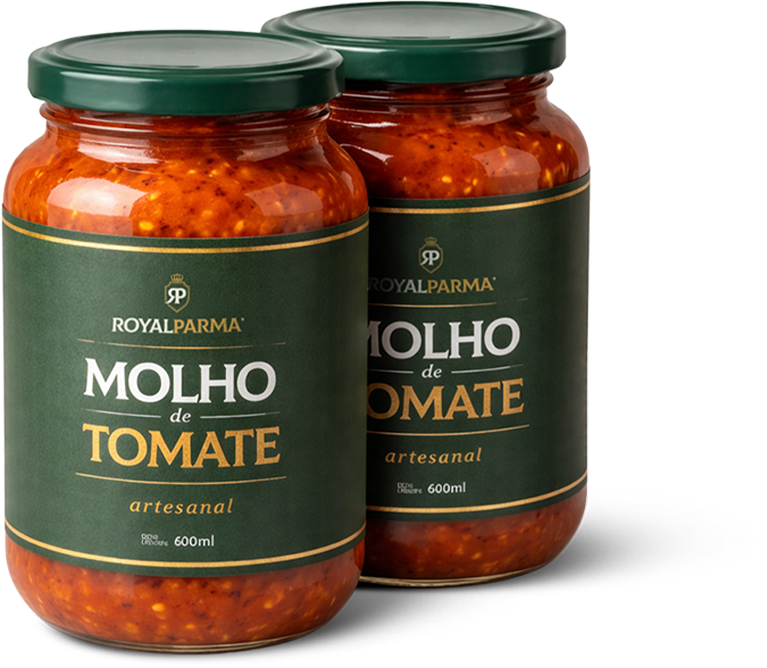
Marketplace, influenciador local e evento: quando a Royal Parma divide a peça com outra marca, cada uma fica no seu lugar, e a publicidade aparece como publicidade.
Marketplace
Influenciador local
Legenda do influenciador
#publi · Parceria paga com a Royal Parma [Cidade] Pedi a parmegiana de frango pelo cardápio digital e chegou quentinha, na caixa kraft. [frase real da experiência] Peça pelos canais oficiais da unidade: [link]
Os erros de arquitetura mais comuns numa rede que cresce. Os quadros são montados com o arquivo oficial e o erro aplicado por cima.
Royal BauruRoyal ExpressRoyal BurgerRoyal FranchisingE também nunca
Voz e tom
Uma voz calorosa, direta e honesta, em dois registros: para quem pede e para quem investe.
A voz já existe no melhor que a Royal Parma publica: chama para a mesa, fala curto, tem orgulho da receita e não promete o que não entrega. O manual só dá nome a ela.
A Royal Parma fala como quem cozinha para a família e entrega na sua porta: convida, conta o que vem no prato, se orgulha da receita e diz a condição junto com a oferta.
Na prática · post de unidade“Tudo fica melhor com Royal Parma”
Na prática · post de unidade“O sinal tocou, é hora de pedir Royal Parma!”
Na prática · post“A Itália trouxe a inspiração. E o Brasil? Ele adicionou o molho!”
Na prática · site de franquias“Pode variar conforme praça, operação e execução.”
Na prática · legenda de reels“Uma Royal Parma é boa. Mas duas… é melhor ainda!”
Régua de tom: a voz é a mesma, o tom muda com o canal
“Se a vida te der arroz arbóreo” (post de risoto).
“Sexta é dia de dividir. Peça pelo cardápio digital.”
“Oi, [nome]. Seu pedido saiu para entrega e chega em cerca de [tempo].”
“Parmegiana de frango, arroz e batata chips. [peso] g, serve [nº] pessoas.”
“Simples, guiado e com um time ao seu lado em cada etapa.” (site de franquias)
Linguagem do documento jurídico, revisada pelo advogado da franqueadora.
O que não muda em nenhum canal
| Quem fala | Como fala |
|---|---|
| A marca e as unidades | “A gente” ou “nós”, com o nome da unidade quando é local. |
| O atendimento da unidade | “Eu”, com o próprio nome: “Aqui é a [Nome], da Royal Parma [Cidade].” |
| A expansão | “Nós”, como Royal Parma Franquias. |
| Bruno Lima | “Eu”, só nas peças dele (06.5). |
Frases que a Royal Parma já publicou e que estão do jeito certo. Coletadas nos sites e perfis públicos da marca em 30/09/2026. Cada uma mostra um dos traços de 07.1.
Tradição no sabor faz história!
Seu próximo prato favorito está no nosso cardápio!
Na Royal, tudo é para já
Toda grande marca começa com um sonho, o meu começou em família.
Simples, guiado e com um time ao seu lado em cada etapa.
Dobra o pedido e marca quem vai dividir uma Royal com você!
Todo dia é dia de risoto
As palavras que dão fome e a que vem de verdade no prato ficam. As que prometem o que não dá para provar saem, cada uma com a troca certa. A base de cada regra está na seção 08.
Palavras da casa
| Sai | Por quê | No lugar |
|---|---|---|
| “melhor do Brasil”, “a melhor” | Soa como ranking e exige prova que a rede não tem. | “A parmegiana que a gente faz com orgulho, todo dia.” |
| “a maior”, “nº 1”, “líder” sem prova | Fato objetivo: precisa de critério, fonte e data (pendência 3). | O fato que dá para conferir, com fonte e data na peça. |
| “garantido”, “garantimos” | Promessa que vira obrigação da unidade. | O que de fato vem: “chega na caixa lacrada”. |
| “gourmet”, “premium”, “exclusivo” vazios | Adjetivo sem conteúdo: não diz nada do prato. | O ingrediente e o jeito de fazer: “empanada na hora, gratinada”. |
| “imperdível”, “corre”, “últimas horas” | Pressão em vez de convite; urgência sem data engana. | A data de verdade: “válido até [data]”. |
| “mais barato que no iFood” | Comparação de preço sem prato, data e preço total, e com a marca do aplicativo. | “Peça pelo nosso cardápio digital” ou a comparação completa de 08.4. |
| “porção gigante”, “serve a família toda” | Quantidade sem medida. | “[peso] g, serve [nº] pessoas.” |
| “receita da nonna”, “direto da Itália” | Procedência que engana. | “Receita de família, inspirada na cozinha italiana.” |
| “100% artesanal”, “zero desperdício” | Afirmação que pede medição antes de anúncio. | “Planejamos cada receita para aproveitar a matéria-prima.” |
| “sorteio”, “concorra”, “os primeiros ganham” | Depende de autorização federal (08.3). | Desconto ou brinde para todos, com regra escrita. |
| “renda garantida”, “lucro certo”, “fique rico” | Promessa de renda ao investidor. | O número da COF, com a condição (07.5). |
| “RoyalParma”, “Royal” sozinho na primeira menção | O nome da marca é um só. | “Royal Parma”; depois, “a Royal”. |
Quem pede quer saber três coisas: se dá vontade, se serve para a ocasião e se é fácil pedir. A peça responde as três, nessa ordem, e termina com uma chamada só.
Pressa, porção individual e entrega no horário. Fale de praticidade.
“Almoço resolvido: parmegiana, arroz e chips na caixa.”
Recompensa da semana, sem louça. Fale de prazer e de descanso.
“Sexta é dia de não lavar louça.”
Mesa cheia e prato que agrada a todos. Fale de família, sem falar com a criança.
“Domingo de mesa cheia e ninguém na cozinha.”
Casal, amigos, dois pratos. Fale de generosidade e chame para marcar alguém.
“Marca quem vai dividir uma Royal com você.”
Sexta é dia de não lavar louça.
Peça pelo cardápio digital da unidade.
Royal Parma Bauru · Delivery e retirada
Legenda-modelo
Sexta é dia de não lavar louça 🍽️ Parmegiana de frango gratinada, arroz e batata chips, quentinha na caixa. Peça pelo cardápio digital da Royal Parma [Cidade]: [link] Entregamos das [hora] às [hora], em [bairros].
Chamadas certas
Uma chamada por peça. “Peça agora” vale em story e reels, onde o botão já leva ao cardápio.
Responda no mesmo dia, com o nome da pessoa, sem copiar e colar a mesma frase em todo comentário. Os modelos abaixo são o ponto de partida.
Elogio
Que bom que chegou quentinho, [nome]. Obrigado por pedir com a gente. Na próxima, marca quem vai dividir 😋
Dúvida: horário, área, cardápio
Oi, [nome]. A Royal Parma [Cidade] entrega de [dia] a [dia], das [hora] às [hora]. A área de entrega e o cardápio completo estão aqui: [link do cardápio digital].
Reclamação em comentário público
Oi, [nome]. Sentimos muito pelo seu pedido. Queremos resolver: chamamos você agora no direct. Se preferir, fale com a unidade pelo WhatsApp (DD) [número oficial].
Avaliação baixa no aplicativo
Oi, [nome]. Obrigado por contar como foi. Não é assim que queremos que o seu pedido chegue. Vamos falar com você pelo chat do pedido para resolver.
Nunca na resposta
Quem pensa em abrir uma unidade está decidindo onde pôr dinheiro. A voz continua calorosa, mas fica concreta: número com fonte, condição escrita e nenhuma promessa de renda.
Chamadas certas
Três formatos de loja, um padrão.
Compartilhada, Smart e Pro. Investimento total estimado a partir de R$ [valor do COF].
Quero receber a apresentaçãoValores estimados. Podem variar conforme praça, operação e execução. Informações completas na COF.
Seja licenciado
Renda garantida com delivery.
Retorno em poucos meses, faturamento de milhões e um negócio que roda sozinho.
Garanta sua vagaPrimeira resposta da expansão no WhatsApp
Olá, [nome]. Aqui é [Nome], da expansão da Royal Parma Franquias. Obrigado pelo interesse em [cidade]. Vou mandar a apresentação dos três formatos de loja. Os valores de investimento estão na Circular de Oferta de Franquia (COF), que você recebe pelo menos 10 dias antes de assinar qualquer documento ou pagar qualquer taxa. Os números podem variar conforme praça, operação e execução.
Frases que saem
Formas comuns em redes de delivery e de franquia que a regra pede para escrever de outro jeito. À esquerda, a forma que sai; à direita, a forma certa, pronta para usar.
Bio da unidade
A melhor parmegiana delivery do Brasil 🏆
Parmegiana delivery e retirada em [Cidade]. Tradição no sabor faz história!
Por quê: “a melhor” exige prova, e o troféu sugere um prêmio que não existe. A frase da casa diz a mesma coisa com orgulho e sem ranking.
Superlativo da rede
Somos a maior parmegianaria delivery do país.
Uma rede de parmegianaria delivery com [nº] unidades em [nº] estados (fonte: [fonte], [mês/ano]).
Por quê: “a maior” é fato objetivo e precisa de critério, fonte e data. Até existir a fonte única (pendências 3 e 4), use só a frase sem número.
Preço entre canais
No nosso app é mais barato que no aplicativo de entrega!
Pelo cardápio digital da Royal Parma [Cidade], a parmegiana de frango sai por R$ [x] com entrega; nos apps de entrega, R$ [y]. Preços de [data].
Por quê: a comparação só vale com o mesmo prato, o preço total, a data e a unidade, sem citar a marca do aplicativo (08.4). Sem esses dados, a forma certa é “Peça pelo nosso cardápio digital”.
Retorno do investimento
Retorno do investimento em poucos meses.
Prazo médio de retorno de [x] a [y] meses nas unidades [formato] com mais de [n] meses de operação ([período]), conforme a COF. Pode variar conforme praça, operação e execução.
Por quê: o prazo de retorno é um número só, o da COF, com base declarada e a condição. Páginas com números diferentes confundem o candidato (pendência 6).
Faturamento e depoimento
Um negócio que fatura milhões e multiplica o seu faturamento.
Um negócio de delivery com método, treinamento e suporte da franqueadora, que exige gestão próxima do franqueado.
Por quê: faturamento só como média declarada, com aviso; depoimento de franqueado só real, identificado, autorizado por escrito e com “resultado individual”.
Matéria-prima
Aproveitamos 100% dos ingredientes: zero desperdício.
Planejamos cada receita para aproveitar a matéria-prima.
Por quê: “100%” e “zero” são medidas. Até haver medição guardada, a frase descreve o cuidado, não o resultado.
Faixa de investimento no formulário
Selecione: 155K · 230K · acima de 300K
Quanto você pretende investir? De R$ [x] mil a R$ [y] mil · De R$ [y] mil a R$ [z] mil · Acima de R$ [z] mil
Por quê: faixa escrita por extenso, em reais, com “de” e “a”, se lê de primeira e não parece código.
Os detalhes que fazem o texto parecer da casa, e não de qualquer perfil. Valem para peça, legenda, WhatsApp, site e documento.
| Regra | Assim | Não assim |
|---|---|---|
| Travessão: zero. Use ponto, vírgula, dois-pontos ou parênteses. | Chegou quentinho. Do jeito que sai da cozinha. | Chegou quentinho do jeito que sai da cozinha. |
| Exclamação: no máximo uma por peça. | Tradição no sabor faz história! | Imperdível!!! Peça já!! |
| Reticências: só quando a frase é citada como foi publicada. | “Mas duas… é melhor ainda!” (legenda citada) | Hmm… será que hoje tem… parmegiana… |
| Caixa alta: só em título curto de peça (até cinco palavras) e no rótulo. A palavra de molho fica em caixa normal. | PAGUE pelo CARDÁPIO | PEÇA AGORA PELO NOSSO CARDÁPIO DIGITAL E GANHE DESCONTO |
| Emoji: só em legenda e WhatsApp, no máximo dois, de comida ou de mão. Nunca na arte. | Sexta é dia de dividir 🍽️👇 | 🏆🔥🇮🇹👑 a melhor do Brasil 🔥🔥 |
| Hashtag: no máximo três, no fim. Em parceria, “#publi” no começo. | #publi · Parceria paga com a Royal Parma [Cidade] | #food #foodporn #delicia #top #melhor #parmegiana #promo |
| Preço e número: “R$” com espaço, vírgula nos centavos, data com o ano. | R$ [valor] · válido até 31/10/2026 | R$[valor] só hoje |
| Horário: com “h”, sem zeros sobrando. | Das 18h às 23h | 18:00hs até 23:00hs |
| Nome da marca: duas palavras, caixa normal. | Royal Parma · Royal Parma Bauru · a Royal | RoyalParma · ROYAL PARMA · Parma Royal |
Publicidade, consumo e franquia
O que o Código de Defesa do Consumidor, o CONAR e a Lei de Franquias pedem de cada peça: superlativos, promoções, preço entre canais, a COF, dados pessoais e alergênicos.
O resumo de bolso para quem cria qualquer peça em nome da Royal Parma, da unidade à franqueadora. O resto da seção explica cada regra com a norma de onde ela vem e traz o modelo pronto. Onde a norma não resolve com clareza, o manual segue a leitura mais cuidadosa e diz isso.
A norma proíbe ou exige, com texto conferido na fonte oficial. Não se negocia na criação: a peça muda ou não sai.
A norma autoriza desde que a peça traga o que ela pede: a regra da promoção, a fonte do número, a autorização da pessoa.
O manual adota a leitura mais conservadora e escreve “leitura do manual”. O que não pôde ser conferido na fonte aparece como “a conferir”.
As normas que tocam a comunicação de uma rede de delivery com franquia. Textos lidos nas fontes oficiais em 30/09/2026. Quem cria não precisa ler todos; quem aprova precisa saber onde está cada regra.
| Norma | O que ela cobre na Royal Parma | Onde aparece | Situação |
|---|---|---|---|
| Código de Defesa do Consumidor (CDC), Lei 8.078/1990 | A oferta vincula (art. 30 e 35), a informação clara sobre porção, composição e preço (art. 6º, III e art. 31), a publicidade identificável (art. 36), a proibição da publicidade enganosa, inclusive por omissão (art. 37), e o ônus da prova de quem anuncia (art. 38). | Toda peça para quem pede: post, story, cardápio, iFood, WhatsApp, flyer | Vigente, sem revogação nos artigos citados |
| Conselho Nacional de Autorregulamentação Publicitária (CONAR), Código edição 2025 | Apresentação verdadeira e prova de toda afirmação objetiva (art. 27), comparação (art. 32), uso de imagem (art. 34), crianças (art. 37), depoimentos (Anexo Q), alimentos (Anexo H), redução de preço (Anexo F). | Toda publicidade, inclusive a de franquia | Autorregulação privada: não multa, mas tira a peça do ar |
| Lei de Franquias, Lei 13.966/2019 | A Circular de Oferta de Franquia (COF): o que ela contém (art. 2º), o prazo de 10 dias (art. 2º, § 1º) e a consequência de informação falsa ou omitida (art. 2º, § 2º e art. 4º). | Site e página de franquia, anúncio, apresentação ao investidor, WhatsApp da expansão | Vigente desde março de 2020 |
| Promoções com prêmio: Lei 5.768/1971, Decreto 70.951/1972 e Portaria SEAE/ME 7.638/2022 | Sorteio, vale-brinde, concurso e “os primeiros N ganham” dependem de autorização prévia da Secretaria de Prêmios e Apostas (SPA) do Ministério da Fazenda. | Toda campanha com prêmio, inclusive em rede social | Vigentes. A portaria foi lida em cópia fiel; a SPA revisa as normas em 2026 (a conferir antes de cada campanha) |
| Preço: Lei 10.962/2004, Decreto 5.903/2006, Lei 13.455/2017 e Decreto 7.962/2013 | Preço à vista visível junto da imagem, taxa de entrega discriminada, desconto por forma de pagamento informado e identificação da empresa no comércio eletrônico. | Cardápio digital próprio, peça com preço, comparação entre canais | Vigentes |
| Agência Nacional de Vigilância Sanitária (ANVISA): RDC 727/2022 e RDC 429/2020; Lei 10.674/2003 | O rótulo do alimento embalado (ingredientes, alergênicos, lote, validade, conteúdo, tabela nutricional) e a frase “contém” ou “não contém glúten”, também na divulgação. | Pote de molho e qualquer produto vendido fechado | Vigentes. Revisão pontual sobre alergênicos aberta em 2025 (a conferir antes de imprimir) |
| Lei Geral de Proteção de Dados (LGPD), Lei 13.709/2018, e Código Civil, art. 18 e 20 | Consentimento com finalidade determinada, saída gratuita e fácil, dados de criança; uso de nome e imagem de pessoa em propaganda. | Lista de WhatsApp, cupom por cadastro, formulário de franquia, foto de cliente e de equipe | Vigentes |
| Crianças: CDC art. 37, § 2º; CONAR art. 37; ECA Digital, Lei 15.211/2025 | Nenhum apelo de consumo dirigido à criança e nenhuma segmentação de anúncio para menores de 18 anos por perfil. | Anúncio pago, peça com família, cardápio infantil | Vigentes; o ECA Digital vale desde 17/03/2026 |
| Bebida alcoólica: Lei 9.294/1996, Estatuto da Criança e do Adolescente (ECA), art. 243, e CONAR, Anexo P | Advertência, ninguém bebendo em cena, ninguém que pareça ter menos de 25 anos, entrega só a maiores de 18. | Só se o cardápio tiver bebida alcoólica (pendência 17) | Vigentes |
| Propriedade Industrial, Lei 9.279/1996 | Licença de uso de marca (art. 139 e 140) e o limite para citar a marca de outra empresa em anúncio (art. 132, IV). | Franquia e licenciamento, comparação com aplicativos de entrega | Vigente |
Toda afirmação que se pode medir precisa de prova guardada antes de a peça sair. O orgulho da Royal mora na história real e no prato; o superlativo só entra quando a franqueadora tem critério, fonte e data para ele.
O CONAR pede que “todas as descrições, alegações e comparações que se relacionem com fatos ou dados objetivos” sejam comprováveis (art. 27, § 1º) e proíbe citar pesquisa ou estatística “que não tenha fonte identificável e responsável” (art. 27, § 7º). O CDC põe a prova nas mãos de quem anuncia (art. 38) e manda guardar os dados que sustentam a mensagem (art. 36, parágrafo único).
O código não tem um artigo só para superlativos. A regra sai do art. 27: “a maior”, “a primeira”, “a única”, “número 1” e “a mais vendida” afirmam um fato que se mede, e por isso exigem prova. “A melhor” fica no meio do caminho: soa como prêmio ou ranking, e a leitura do manual é retirar, ou atribuir a um prêmio ou pesquisa identificados, com nome e ano. Exagero que ninguém lê como fato (“a parmegiana que abraça”) é licença criativa.
| Frase | Nível | O que precisa para usar | Enquanto não houver |
|---|---|---|---|
| “A maior parmegianaria delivery do Brasil” | B · com prova | Critério (unidades em operação ou pedidos), fonte e data na peça ou num link mostrado nela. Sem isso, nível A: vedado. | Não entra em peça nem em bio (pendência 3). Fale da história: “Uma receita de família que virou rede.” |
| “A melhor parmegiana” · “a melhor do Brasil” | C · sai | Só atribuída: “eleita a melhor parmegiana no prêmio [nome], edição [ano]”, com o prêmio real e verificável. | Sai das bios e das artes, com o troféu 🏆. No lugar: “A parmegiana que a gente faz com orgulho, todo dia.” |
| Mais de [N] lojas · [N] estados · [N] cidades | B · com fonte única | Um número só, de uma fonte única da franqueadora, com mês e ano, igual em todos os canais. | Nenhuma peça cita quantidade de lojas, estados ou cidades até a fonte única existir (pendência 4). |
| “A primeira parmegianaria delivery” | A · sem prova | Prova de data e de pioneirismo que resista a uma contestação. | Não usar. A história de 2009 a 2021 já conta a trajetória sem disputar o título. |
| “A parmegiana que abraça” | B · exagero claro | Que ninguém leia como fato medido. | Pode usar. |
O número vem com uma chamada (¹) e a nota explica o critério, a fonte e a data. Na peça de 1080 px a nota tem 26 px, o piso de qualquer texto da peça: no celular ela fica com cerca de 9 px, pequena mas legível.
A nota não é lugar para contradizer o título. Se o critério desmente a frase grande, a frase grande muda.
Modelo de nota
¹ Unidades da Royal Parma em operação em [mês/ano]. Fonte: [relatório da franqueadora], [data].
Desde 2009, em família
A receita de família virou rede.
Mais de [N] unidades no Brasil¹, com o mesmo molho em cada cidade.
¹ Unidades em operação em [mês/ano]. Fonte: [relatório da franqueadora].
Uma receita de família que virou rede.
Orgulho com fato: a história é pública e verificável.
A melhor parmegianaria delivery do Brasil 🏆
Superlativo sem prêmio identificado e troféu sem prêmio. Sai da bio e da arte.
Desconto não depende de ninguém: depende de regra escrita. Prêmio que envolve sorte, disputa ou “os primeiros” depende de autorização federal, pedida com antecedência.
A Lei 5.768/1971 diz que a distribuição gratuita de prêmios “mediante sorteio, vale-brinde, concurso ou operação assemelhada, dependerá de prévia autorização do Ministério da Fazenda” (art. 1º). Hoje quem autoriza é a Secretaria de Prêmios e Apostas (SPA), e o pedido precisa ser feito “no prazo mínimo de quarenta e máximo de 120 dias antes da data do início da promoção” (Portaria SEAE/ME 7.638/2022, art. 20).
A portaria chama de concurso também as “mecânicas com previsão de premiação aos primeiros consumidores a cumprir o critério de participação, limitadas a estoque do produto” (art. 2º, IV). Por isso “os 50 primeiros pedidos ganham” é promoção com prêmio, e não brinde.
Desconto, cupom, “compre 1 leve 2”, combo com preço menor, entrega grátis, fidelidade em que todo cliente que cumpre a regra recebe e brinde para todos acima de um valor não envolvem sorte nem disputa e ficam fora da autorização. Eles seguem o CDC: a regra completa, escrita e cumprida (art. 30, 31 e 37).
“Entrega grátis” só vale quando não há custo nenhum para o cliente; se há pedido mínimo ou área, isso vai na mesma frase (CONAR, art. 27, § 4º). “De R$ [x] por R$ [y]” só com prova do preço anterior praticado; sem ela, use o percentual (CONAR, art. 27, § 3º, a, e Anexo F, item 2).
| Mecânica | Nível | Por quê | Como fazer |
|---|---|---|---|
| Cupom de desconto, “compre 1 leve 2”, combo, entrega grátis, fidelidade sem sorte | B · regra escrita | Não há sorte nem disputa; vale o CDC. | Com o aviso de promoção completo na peça (modelo abaixo). |
| Brinde para todos os pedidos acima de R$ [valor] num dia | B · para todos | Todos que cumprem a regra recebem. | Sem “primeiros N”. Se o estoque é limitado, declare a quantidade. |
| “Brinde enquanto durar o estoque” | C · evitar | Aproxima-se do concurso “limitado a estoque” da portaria. | Leitura do manual: benefício sem limite de quantidade, ou pedir autorização. |
| “Os primeiros 50 pedidos ganham” | A · sem autorização | É concurso pela definição da portaria (art. 2º, IV). | Só com autorização da SPA, pedida de 40 a 120 dias antes. |
| Sorteio, vale-brinde, raspadinha, roleta, cupom premiado aleatório | A · sem autorização | Lei 5.768, art. 1º e 4º. Prometer publicamente já é infração (art. 12, § 1º). | Só com autorização da SPA e parecer jurídico. |
| “Comente e marque 3 amigos para concorrer” | A · vedado | Em rede social, é vedada “a contemplação por meio randômico”, mesmo com autorização (art. 23, II). | Não fazer. |
| Concurso cultural valendo parmegiana | C · inviável | Deixa de ser cultural quando o prêmio é produto da marca (art. 26, IX), a marca está na mecânica (II), acontece na rede social (X), se liga a data comemorativa (XII) ou é só para clientes (art. 28, III). | Leitura do manual: não fazer sem parecer jurídico. |
| Prêmio em dinheiro, Pix ou vale conversível | A · vedado | “É proibida a distribuição ou conversão dos prêmios em dinheiro” (Lei 5.768, art. 1º, § 3º). | Não fazer. |
| Vender ou ceder a base de cadastros da promoção | A · vedado | Portaria 7.638, art. 12. | A base serve só à promoção e ao que o cliente consentiu (08.8). |
Todo cupom e toda promoção levam o aviso completo na peça, a 26 px ou mais na arte de 1080. O que o cliente precisa saber antes de pedir não fica escondido no link.
Componente .aviso-promo
Válido de [data] a [data], até 23h59, na Royal Parma [Cidade], pelo [canal]. Desconto de [X]% em pedidos a partir de R$ [valor]. Um uso por CPF. Não cumulativo com outras promoções.
[X]% no seu pedido
Use o cupom
[CÓDIGO]
no cardápio digital da unidade
Válido de [data] a [data], até 23h59, na Royal Parma [Cidade], pelo cardápio digital. Pedido mínimo de R$ [valor]. Um uso por CPF. Não cumulativo.
Todo pedido acima de R$ [valor] neste sábado ganha [brinde].
Benefício para todos que cumprem a regra, com dia e valor.
Os 50 primeiros pedidos ganham um molho!
“Primeiros N” é concurso pela portaria e depende de autorização da SPA.
Cada unidade tem o seu preço, e cada canal pode ter o dele. A peça diz qual é o preço, de qual unidade, em qual canal e em que data. A comparação entre canais só sai com a conta inteira e verdadeira.
| Situação | Nível | A regra |
|---|---|---|
| Preço no cardápio digital | A · obrigatório | Preço à vista, “junto à imagem do produto”, em letra de no mínimo 12 (Lei 10.962, art. 2º, III). |
| Taxa de entrega | A · obrigatório | Discriminada antes de o cliente fechar o pedido, e na peça que fala de preço (Decreto 7.962, art. 2º, IV). |
| Quem vende, no cardápio digital próprio | A · obrigatório | Nome empresarial, CNPJ e endereço da unidade em local de destaque (Decreto 7.962, art. 2º, I e II). |
| Preço só em parcelas | A · vedado | O total à vista aparece sempre (Decreto 5.903, art. 3º e 9º, IV). |
| Dois preços para o mesmo prato no mesmo canal | A · vedado | É infração, e o cliente paga o menor (Decreto 5.903, art. 9º, VII; Lei 10.962, art. 5º). |
| Peça nacional com preço | B · com condição | Só se todas as unidades praticam o preço. Se não, “nas unidades participantes”, com a lista acessível (CDC, art. 30). |
| “A partir de R$ [valor]” | B · com condição | O valor existe de verdade na unidade e no canal da peça, e a peça diz qual prato e qual porção custam esse valor. Leitura do manual, a partir do CDC, art. 31 e 37. |
| Desconto para Pix ou dinheiro | B · com condição | Permitido e informado em local visível (Lei 13.455, art. 1º; Lei 10.962, art. 5º-A). |
| Preço diferente no cardápio digital e nos aplicativos de entrega | B · com condição | Nenhuma lei proíbe preço por canal. O contrato de cada aplicativo pode ter cláusula de paridade de preço (a conferir antes de qualquer peça). |
| “Mais barato que no iFood” | C · sai | Comparação sem item, data nem preço total, e com a marca de outra empresa num anúncio. Use a forma certa abaixo. |
Modelo de comparação
Na Royal Parma [Cidade], a parmegiana de frango ([porção]) sai por R$ [valor] com entrega pelo cardápio digital. Nos aplicativos de entrega, R$ [valor]. Preços totais de [data], com taxa de entrega.
Peça pelo nosso cardápio digital.
A forma neutra, sem número: serve a qualquer unidade.
Mais barato que no iFood!
Sem item, sem data, sem o preço total, com a marca de outra empresa.
Peça pelo cardápio digital
Cardápio digital
R$[valor]
Aplicativos de entrega
R$[valor]
Parmegiana de frango ([porção]). Preço total com entrega na Royal Parma [Cidade] em [data].
No delivery, a foto é a vitrine e o contrato ao mesmo tempo. Ela mostra o prato que a unidade entrega, na porção, com o acompanhamento e na embalagem que chegam. A descrição completa o que a foto não diz.
A oferta e a apresentação do produto devem trazer “informações corretas, claras, precisas, ostensivas e em língua portuguesa sobre suas características, qualidades, quantidade, composição, preço” (CDC, art. 31). E é enganosa a publicidade capaz de induzir o consumidor em erro “a respeito da natureza, características, qualidade, quantidade”, mesmo por omissão (art. 37, § 1º e § 3º). Para alimentos, o CONAR pede que o anúncio apresente “corretamente as características de sabor, tamanho, conteúdo/peso” (Anexo H, item 1, h).
“Imagem meramente ilustrativa” não salva a foto que engana. Nenhuma regra dá a essa frase o efeito de liberar a peça: se a foto mostra porção, gratinado ou acompanhamento que a unidade não entrega, a legenda não corrige o erro (leitura do art. 37, § 1º). A frase só pode acompanhar uma foto fiel, e aí ela não é necessária.
| Prática | Nível |
|---|---|
| Foto com porção, ingredientes ou apresentação diferentes do que é entregue | A · vedado |
| Quantidade no cardápio: gramas ou “serve [N] pessoas” | A · obrigatório |
| Acompanhamento da foto vendido à parte sem aviso junto da imagem | A · vedado |
| Produção de foto (luz, mesa, arrumação) com o prato real, na porção real | B · permitido |
| “Imagem ilustrativa” como proteção | C · não protege |
| Desafio de comer muito, “até passar mal” | A · vedado |
Fontes: CDC, art. 31 e 37; CONAR, Anexo H, item 1, d e h.
Modelo de descrição
Filé de frango empanado, coberto com molho de tomate e queijo gratinado. Acompanha [arroz e batata chips].
[peso] g · serve [N] pessoa(s)
Contém[Conforme a ficha técnica da unidade: por exemplo, trigo (glúten), ovo e leite.]
Quando o acompanhamento da foto é vendido à parte
Acompanhamentos da foto vendidos separadamente.
Peso, acompanhamento e alergênicos de cada prato dependem da ficha técnica oficial (pendência 11). Até lá, o modelo usa colchetes. A seção 09 mostra como fotografar o prato como ele chega (09.3).
Quem investe decide com números. Todo número que aparece no site, no anúncio, na apresentação e no WhatsApp da expansão é igual ao da Circular de Oferta de Franquia (COF) vigente, com o que ele inclui e a condição dita junto.
Para implantar uma franquia, o franqueador fornece ao interessado a COF, “escrita em língua portuguesa, de forma objetiva e acessível” (Lei 13.966/2019, art. 2º). Ela traz, entre outros itens, os balanços dos dois últimos exercícios (III), o “total estimado do investimento inicial”, a taxa de franquia e o valor das instalações, equipamentos e estoque inicial (VIII), as taxas periódicas, como royalties e fundo de publicidade (IX), a lista completa dos franqueados e dos que saíram nos últimos 24 meses (X) e a situação da marca, com o número do registro ou do pedido (XIV).
A COF “deverá ser entregue ao candidato a franqueado, no mínimo, 10 (dez) dias antes da assinatura do contrato ou pré-contrato de franquia ou, ainda, do pagamento de qualquer tipo de taxa” (art. 2º, § 1º). Sem isso, o franqueado pode pedir a anulação e a devolução do que pagou, corrigido (§ 2º). Informação falsa ou omitida na COF tem a mesma consequência (art. 4º).
A lei não exige projeção de faturamento, lucro ou prazo de retorno. Se a rede divulga esses números, divulga por conta própria e responde pela verdade deles. Para projeções, o manual segue por analogia o Anexo E do CONAR: dizer em que bases a estimativa foi feita e se ela parte de resultados passados “cuja repetição possa ser incerta ou improvável no futuro” (Anexo E, item 3).
| No anúncio | Nível | A regra |
|---|---|---|
| COF entregue 10 dias antes de contrato, pré-contrato ou pagamento | A · obrigatório | Lei 13.966, art. 2º, § 1º. |
| “Investimento a partir de R$ [valor do COF]”, com o que está incluído | B · com condição | Igual ao total estimado da COF vigente (art. 2º, VIII, a). |
| “Invista R$ [valor]” quando o valor é só a taxa de franquia | A · tratar como vedado | Omissão que leva o candidato a erro (Código Civil, art. 147). |
| Retorno ou faturamento com base, período, amostra e aviso | B · com condição | Analogia com o CONAR, Anexo E, item 3. |
| Números só da melhor unidade como se fossem a regra | A · vedado | Dado parcial que leva a conclusão distorcida (CONAR, art. 27, § 7º, b). |
| Depoimento de franqueado real, autorizado por escrito | B · com condição | “Autorização escrita da testemunha antes de proceder à veiculação” (Anexo Q, item 6, a), com o aviso de resultado individual. |
| Franqueado ou ator sintético, feito por IA, dando depoimento | A · vedado | Testemunhal falso (CONAR, art. 27, § 9º, a). |
| “Rede sem fechamentos” | C · conferir | O candidato recebe na COF a lista de quem saiu nos últimos 24 meses (art. 2º, X). A frase só sai se a lista confirmar. |
A licença de marca autoriza só o uso do sinal e é averbada no Instituto Nacional da Propriedade Industrial (INPI) (Lei 9.279/1996, art. 139 e 140). A franquia junta a marca, o direito de produzir ou distribuir e os “métodos e sistemas de implantação e administração de negócio”, com remuneração (Lei 13.966, art. 1º).
Se a rede entrega manual, receitas, treinamento, fornecedores e padrão de operação e cobra taxa ou royalties, a relação é franquia, seja qual for o nome no anúncio, e a COF vale. A palavra usada pela rede está em decisão (pendência 5). Leitura do manual: os modelos usam franquia e seguem a Lei 13.966.
Componente .aviso-investidor
Valores estimados. Podem variar conforme praça, operação e execução. Informações completas na Circular de Oferta de Franquia (COF).
Componente .id-franqueadora
Royal Parma Franquias[razão social]CNPJ [nº]royalparmaoficial.com.br
Modelo de retorno estimado
Prazo médio de retorno de [X] a [Y] meses nas unidades [formato] com mais de [N] meses de operação (base: [N] unidades, [período]). Não é garantia: o resultado depende de praça, gestão e capital. Fonte: COF de [mês/ano].
Três formatos de loja.
Investimento total estimado a partir de R$ [valor do COF], com [taxa de franquia, equipamentos, implantação e estoque inicial]. Não inclui [ponto comercial].
Valores estimados. Podem variar conforme praça, operação e execução. Informações completas na COF. Royal Parma Franquias · [razão social] · CNPJ [nº]
O ® do logotipo afirma registro concedido pelo INPI na classe usada. A COF informa a situação da marca com o número do registro ou do pedido (art. 2º, XIV): a franqueadora confirma esse número antes de anúncios de expansão (a conferir).
O prato montado na hora e o molho vendido fechado seguem regras diferentes. O pote de molho é alimento embalado e tem rótulo completo. No cardápio, informar os alergênicos de cada prato é a boa prática que a rede adota.
O pote de molho · alimento embalado
Se o molho é produzido e vendido fechado, no aplicativo, em kit ou em varejo, ele é alimento “embalado na ausência dos consumidores” (RDC 727/2022, art. 2º). O rótulo traz (art. 7º): denominação de venda, lista de ingredientes, advertência de alergênicos, advertência de lactose, rotulagem nutricional, conteúdo líquido, origem, lote, prazo de validade e instruções de conservação.
A advertência segue a forma da norma: “ALÉRGICOS: CONTÉM (...)” (art. 13) e, quando não se pode garantir a ausência de contaminação cruzada, “ALÉRGICOS: PODE CONTER (...)”, apoiada num programa de controle de alergênicos (art. 14). A tabela nutricional é obrigatória (RDC 429/2020, art. 4º).
A frase de glúten também na divulgação. A Lei 10.674/2003 exige “contém Glúten” ou “não contém Glúten” no rótulo, e a advertência vai também “em cartazes e materiais de divulgação em caracteres com destaque, nítidos e de fácil leitura” (art. 1º, § 1º). Post, arte de cardápio e anúncio do pote levam a frase.
O prato do cardápio · montado na hora
Prato montado e embalado na unidade a pedido do cliente está dispensado da advertência de alergênicos no rótulo (RDC 727, art. 7º, § 2º, II). Não foi encontrada lei federal que obrigue o cardápio de restaurante a informar alergênicos (análise com base em fonte secundária).
Há leis estaduais que obrigam bares e restaurantes a informar glúten, lactose e outros alergênicos no cardápio, como no Ceará (Lei 17.899/2022), na Paraíba e em Sergipe (a conferir no estado de cada unidade).
Mesmo sem lei específica, o CDC pede informação sobre composição e sobre os “riscos que apresentam à saúde” (art. 6º, III e art. 31). Leitura do manual: todo prato do cardápio digital informa os principais alergênicos, conforme a ficha técnica oficial (pendência 11).
Contém[Alergênicos do prato, conforme a ficha técnica.] Preparado em cozinha que manipula trigo, ovo e leite.
| No pote e na divulgação dele | Nível |
|---|---|
| “Contém glúten” ou “Não contém glúten” no rótulo e em toda divulgação | A · obrigatório |
| “Sem alergênicos”, “livre de alergia” | A · vedado |
| Propriedade de saúde (“faz bem”, “anti-inflamatório”) | A · vedado |
| Destacar ausência de algo que nenhum molho de tomate tem | A · vedado |
| “Natural”, “caseiro”, “artesanal”, “sem conservantes” | C · só com prova |
Molho de tomate artesanal
[Contém glúten / Não contém glúten]
Pote de [conteúdo líquido, conforme o rótulo]. Ingredientes e alergênicos no rótulo. À venda na Royal Parma [Cidade], pelo [canal].
A lista de transmissão, o cupom por cadastro, o formulário de franquia e a foto do cliente lidam com dados e com imagem de pessoas. A regra é pedir o mínimo, dizer para quê e deixar sair fácil.
| Situação | Nível | A regra |
|---|---|---|
| Lista de transmissão e marketing no WhatsApp para quem nunca comprou | B · com consentimento | Consentimento específico (“Quero receber ofertas da Royal Parma [Cidade] pelo WhatsApp”), registrado com data e hora, com saída simples: “responda SAIR” (art. 8º, § 2º e § 5º). |
| Mensagem de marketing para quem já comprou | C · prefira consentir | O legítimo interesse (art. 7º, IX) pode valer, com saída fácil. Leitura do manual: pedir o consentimento também. A política do WhatsApp Business sobre adesão prévia está a conferir. |
| Consentimento genérico (“autorizo o uso dos meus dados”) | A · nulo | “As autorizações genéricas para o tratamento de dados pessoais serão nulas” (art. 8º, § 4º). |
| Caixa de marketing já marcada | A · tratar como vedado | Não demonstra consentimento. A caixa nasce desmarcada. |
| Comprar lista de contatos para disparo | A · tratar como vedado | Sem base legal que se possa demonstrar. |
| Cupom por cadastro | B · com condição | Só nome, telefone e o mínimo para entregar o cupom (art. 6º, III). O aceite de marketing é uma caixa separada e desmarcada. |
| Formulário de franquia | B · com condição | Aviso de privacidade: para que os dados servem, quem acessa, por quanto tempo ficam e como pedir a exclusão. Dados financeiros só os necessários à análise. |
| Dados de criança em promoção | A · não coletar | Se for inevitável, consentimento específico e em destaque de pai, mãe ou responsável (art. 14, § 1º). |
| Foto, vídeo, nome ou avaliação de cliente em peça da marca | B · com autorização escrita | Uso de imagem com fim comercial exige autorização (Código Civil, art. 20; CONAR, art. 34, a). Vale mensagem direta salva. Repostar story de cliente também é uso comercial. |
| Foto de funcionário e de franqueado | B · com termo | Termo de uso de imagem separado do contrato de trabalho, com prazo, meios e finalidade, e o que acontece quando a pessoa sai (boa prática). Funcionário aparece como funcionário, nunca como cliente (Anexo Q, item 3, b). |
| Avaliação de aplicativo reproduzida em anúncio | B · real e verificável | Cliente identificado só com autorização. Sem nome (“Cliente de [Cidade], avaliação de [data]”), o texto continua real, inteiro e verificável (Anexo Q, item 5, a). Depoimento inventado ou “baseado em avaliações” é vedado. |
Pedido de consentimento · WhatsApp
Oi! Aqui é a Royal Parma [Cidade]. Quer receber nosso cardápio da semana e os cupons da unidade por aqui? Responda SIM para entrar na lista. Para sair quando quiser, é só responder SAIR.
Pedido para repostar a foto do cliente
Que foto linda do seu pedido! Podemos repostar no perfil da Royal Parma [Cidade], com o seu @? A imagem fica no nosso perfil e você pode pedir para tirar quando quiser. Se puder, responda “autorizo”.
Aviso de privacidade curto · formulário
Usamos seus dados para avaliar sua candidatura e falar com você sobre a franquia. Eles são vistos pela equipe de expansão da Royal Parma Franquias e guardados por [prazo]. Para corrigir ou pedir a exclusão, escreva para [e-mail de privacidade].
O formulário de franquia completo, com as duas caixas de consentimento, está na seção 13 (13.10). As mensagens do WhatsApp de pedidos estão na seção 15 (15.4).
A Royal vende para adultos que decidem o pedido. Criança pode estar à mesa com a família; a peça nunca fala com ela. Bebida alcoólica só tem regra aqui se entrar no cardápio (pendência 17).
| Prática | Nível |
|---|---|
| Falar com a criança (“Peça pro papai!”) | A · vedado |
| Criança recomendando o prato, como garota-propaganda | A · vedado |
| Anúncio pago segmentado para menores de 18 anos por perfil | A · vedado |
| Mascote, desenho animado ou brinde colecionável para atrair criança | A · tratar como vedado |
| Família à mesa, com criança comendo, em peça para adultos | B · permitido |
A segmentação de todo anúncio pago da rede exclui menores de 18 anos. Imagem de criança, como de qualquer pessoa, só com autorização escrita de quem responde por ela.
| Prática | Nível |
|---|---|
| Vender ou entregar bebida alcoólica a menor de 18 anos | A · crime |
| Peça com cerveja ou vinho sem frase de advertência | A · vedado |
| Alguém bebendo em cena, ou pessoa que aparenta menos de 25 anos | A · vedado |
| “Balde com 10 long necks”, apelo imperativo de consumo | A · vedado |
| Combo com cerveja, sem apelo, com advertência | B · com condição |
| Bebida alcoólica como prêmio de promoção | C · evitar |
Advertência para o cardápio e a peça
Venda proibida para menores de 18 anos. Beba com moderação.
O entregador confere o documento na entrega. O aviso de que dirigir sob efeito de álcool é crime é exigido “na parte interna dos locais em que se vende” (Lei 9.294, art. 4º-A); leitura do manual: vale também no cardápio digital.
A inteligência artificial (IA) não muda a régua: o que vale para a foto e para o depoimento vale para o que a ferramenta gerou. A lei 3 da casa vai além da norma e tira a comida gerada de qualquer peça.
Não há lei federal específica sobre IA em publicidade. O Projeto de Lei 2.338/2023, o marco da IA, foi aprovado no Senado e aguarda parecer na Câmara dos Deputados. O Código do CONAR não tem anexo sobre IA.
O Guia de Marketing e Publicidade por Influenciadores Digitais do CONAR, de 2026, diz que o código se aplica “aos conteúdos gerados, editados ou segmentados com o uso de sistemas ou ferramentas de Inteligência Artificial”, e que anunciantes e agências “permanecem responsáveis pelo seu resultado” (item 1.3.1). O próprio guia diz que não cria dever novo de avisar que a peça foi feita com IA (nota 6).
permanecem responsáveis pelo seu resultado e pelo conteúdo divulgado
| Uso da IA | Pela norma | Na Royal Parma |
|---|---|---|
| Prato gerado ou alterado, diferente do real | A · vedado (CDC, art. 37, § 1º) | Vedado |
| Prato gerado igual ao real | Não proibido pela norma | Vedado: a peça mostra a foto do prato que chega (lei III) |
| Cliente ou franqueado sintético dando depoimento | A · vedado (CONAR, art. 27, § 9º; Anexo Q) | Vedado |
| Rosto ou voz de pessoa real imitados | A · vedado (Código Civil, art. 18 e 20; CONAR, art. 34) | Vedado |
| Pessoa gerada como figurante ou exemplo | C · avisar que é imagem gerada | Vedado, mesmo com aviso |
| Fundo, textura ou ilustração claramente gráfica | B · permitido | Permitido fora da foto do prato; a casa prefere o campo chapado |
| Rascunho de texto, legenda e revisão | Fora da norma de imagem | Permitido, com revisão humana e as regras desta seção |
Quando a unidade paga, troca prato por post ou dá cupom a um criador de conteúdo, o post é publicidade da Royal e precisa parecer publicidade para quem vê.
“A publicidade deve ser veiculada de tal forma que o consumidor, fácil e imediatamente, a identifique como tal” (CDC, art. 36). Leitura do manual: post pago, permuta (prato em troca de post) e cupom exclusivo do criador são publicidade e se identificam logo no começo da legenda e na arte do vídeo. As expressões exatas recomendadas pelo Guia de Influenciadores do CONAR de 2026 estão a conferir antes de cada contratação.
O criador fala da experiência dele com o prato (CONAR, Anexo Q, item 3, c), a peça tem a autorização escrita dele (item 6, a) e o cupom dele segue o aviso de promoção completo (08.3). Criança não vocaliza apelo de consumo (CONAR, art. 37, item 1, f), e o sucesso do criador não é atribuído ao prato (Anexo Q, item 2, c).
Primeira linha da legenda
Publicidade · parceria paga com a Royal Parma [Cidade]
Quando é permuta
Publicidade · recebi o pedido da Royal Parma [Cidade] para mostrar aqui
Achei por acaso a melhor parmegiana da cidade!
Post combinado disfarçado de descoberta, com superlativo sem prova.
As frases que mais aparecem em peças de delivery e de franquia e a versão segura de cada uma. A coluna da esquerda é exemplo do que não se publica; os valores entre colchetes saem da unidade ou da COF.
| Frase que sai | Por quê | Frase segura |
|---|---|---|
| “A melhor parmegiana do Brasil” 🏆 | Superlativo sem prêmio identificado (08.2) | A parmegiana que a gente faz com orgulho, todo dia. |
| “A maior parmegianaria delivery do Brasil” | Fato medido sem critério, fonte e data (08.2) | Uma receita de família que virou rede. Ou, com prova: mais de [N] unidades¹, com a nota de rodapé. |
| “Porção gigante que serve a família toda” | Quantidade vaga (08.5) | Serve [N] pessoas (cerca de [peso] g). |
| “Comida caseira e saudável” | Promessa de saúde e atributo sem prova | Feita na hora, do jeito que a gente come em casa. |
| “Desafio: coma a parmegiana de 2 kg” | Incentivo ao exagero (CONAR, Anexo H, 1, d) | Parmegiana para dividir: [peso], serve [N] pessoas. Marca quem vai dividir com você. |
| “Entrega em 30 minutos ou é de graça” | Prazo como promessa absoluta | O tempo médio de entrega na sua região aparece no cardápio antes de você pedir. |
| “Receita da nonna direto da Itália” | Procedência que precisa ser verdade (CONAR, art. 27, § 2º, b) | Inspirada na cozinha italiana, feita aqui. |
| “Aproveitamos 100% da matéria-prima, zero desperdício” | Afirmação ambiental que pede medição | Planejamos cada receita para aproveitar a matéria-prima. |
| “Imagem meramente ilustrativa” sob foto que exagera | A legenda não corrige a foto (08.5) | Foto real do prato e, se for o caso: acompanhamentos da foto vendidos separadamente. |
| Frase que sai | Por quê | Frase segura |
|---|---|---|
| “No nosso app é mais barato que no iFood!” | Comparação sem item, data e preço total, com marca alheia (08.4) | Na Royal Parma [Cidade], a parmegiana de frango ([porção]) sai por R$ [valor] com entrega pelo cardápio digital; nos aplicativos de entrega, R$ [valor]. Preços de [data]. |
| “Pague mais barato pelo nosso cardápio digital!” | “Mais barato” sem a conta (08.4) | Peça pelo nosso cardápio digital. Ou a comparação completa, acima. |
| “Frete grátis!” | Grátis com condição escondida (CONAR, art. 27, § 4º) | Entrega grátis em pedidos acima de R$ [valor] pelo cardápio digital, até [data], na Royal Parma [Cidade]. |
| “De R$ [x] por R$ [y]” sem histórico | Precisa provar o preço anterior (CONAR, art. 27, § 3º, a) | [X]% de desconto na parmegiana de frango, de [data] a [data]. |
| “Cupom [CÓDIGO]: 10% off” | Cupom sem regra (08.3) | Cupom [CÓDIGO]: [X]% em pedidos a partir de R$ [valor], válido até [data] às 23h59, um uso por CPF, não cumulativo. |
| “Os 100 primeiros pedidos ganham um molho” | Concurso sem autorização (08.3) | Todo pedido acima de R$ [valor] neste sábado ganha um pote de molho. |
| “Comente e marque 3 amigos para concorrer” | Sorteio aleatório em rede social (08.3) | Sai. Não há forma segura. |
| “Ganhe R$ [valor] no Pix” | Prêmio em dinheiro é proibido (08.3) | Sai. |
| “5% de desconto”, sem dizer como | Condição escondida | 5% de desconto pagando com Pix no cardápio digital da Royal Parma [Cidade]. |
| Frase que sai | Por quê | Frase segura |
|---|---|---|
| Só “Parmegiana de frango” e o preço | Falta quantidade e composição (CDC, art. 31) | Parmegiana de frango ([peso] g, serve [N]). Contém: [alergênicos conforme a ficha técnica]. |
| “Sem glúten” num prato feito na mesma cozinha do empanado | Contaminação cruzada; alegação de ausência | Preparado em cozinha que manipula trigo; pode conter glúten. |
| “Molho natural, sem nada artificial” | “Natural” pede leitura restritiva (CONAR, Anexo H, 5, a) | Molho de tomate. Ingredientes: [lista do rótulo]. [Contém / Não contém] glúten. |
| “Faz bem pra saúde” | Propriedade de saúde (RDC 727, art. 4º, VII) | Sai. |
| “Cerveja gelada pra acompanhar”, sem aviso | Falta a advertência (08.9) | Cerveja long neck [conteúdo]. Venda proibida para menores de 18 anos. Beba com moderação. |
| Frase que sai | Por quê | Frase segura |
|---|---|---|
| “Invista R$ [valor] e fature R$ [valor] por mês” | Promessa de faturamento; investimento sem o que inclui (08.6) | Investimento total estimado a partir de R$ [valor do COF], com [o que inclui]; não inclui [o que fica de fora]. Faturamento médio mensal de R$ [valor] nas [N] unidades com mais de 12 meses, de [período]. Resultados variam. |
| “Retorno garantido em 12 meses” · “retorno de 6 a 18 meses” sem base | Garantia e projeção sem base (08.6) | Prazo médio de retorno de [X] a [Y] meses nas unidades [formato] com mais de [N] meses (base: [N] unidades, [período]). Não é garantia. |
| “Um negócio com faturamento de múltiplos milhões” | Número de faturamento sem prova nem aviso | Os números da rede estão na Circular de Oferta de Franquia, entregue a você antes de qualquer assinatura. |
| “Para quem quer aumentar no mínimo 50 mil por mês” | Promessa de ganho | Para quem quer operar um delivery com marca, método e suporte da franqueadora. |
| “Renda passiva com delivery” · “negócio que roda sozinho” | Afirmação fantasiosa (08.6) | Um negócio que pede gestão próxima do franqueado, com suporte da franqueadora. |
| “Presentes em mais de 20 estados” e “15 estados” em páginas diferentes | Número da rede sem fonte única (08.2) | Franquia de delivery com [N] unidades em [N] estados (dados de [mês/ano], fonte: [franqueadora]). |
| “Depois que abri, passei a faturar [N] vezes mais” (depoimento) | Depoimento de ganho sem prova e sem aviso | “[Frase real sobre a experiência]” ([nome], franqueado em [Cidade] desde [ano]; resultado individual). |
| Faixas “155K · 230K · acima de 300K” no formulário | Abreviação que confunde | Faixas escritas em reais: “R$ [valor] mil a R$ [valor] mil” (13.10). |
A rede trabalha com modelos aprovados: a franqueadora aprova a peça de rede e o modelo, e a unidade troca só a informação local. Tudo que traz número, prêmio, preço comparado ou investidor passa pela franqueadora antes de sair.
| Peça | Quem faz | Quem aprova antes de publicar |
|---|---|---|
| Peça de rede, campanha nacional, modelo do kit da unidade | Franqueadora | Franqueadora; parecer jurídico quando houver prêmio, número ao investidor ou rótulo |
| Peça da unidade feita com modelo aprovado, trocando foto local, horário, bairro e canal | Unidade | A própria unidade, com o checklist da seção 24 (24.2) |
| Peça da unidade com preço, cupom, comparação entre canais ou prazo de entrega | Unidade | Franqueadora, pelo canal de aprovação da rede [a definir] |
| Promoção com prêmio, sorteio ou “primeiros N” | Franqueadora | Franqueadora e parecer jurídico, com a autorização da SPA pedida de 40 a 120 dias antes |
| Qualquer peça para quem investe | Franqueadora | Franqueadora, conferindo cada número com a COF vigente |
| Rótulo e divulgação do molho e de outro produto embalado | Franqueadora | Franqueadora, com o responsável técnico pelo alimento |
| Post de influenciador | Criador, com briefing da unidade | Unidade; franqueadora quando houver preço, cupom ou número |
Se a resposta a uma das duas primeiras é não, ou a terceira é sim, a peça não sai sem passar pela franqueadora.
Fotografia
Como fotografar o prato real, na porção e na embalagem da unidade, com luz quente e mesa de verdade. O que nunca fazer com a foto.
A foto da Royal Parma mostra o prato do jeito que ele chega: a marmita de alumínio dentro da caixa kraft, o prato servido na mesa de casa, o queijo puxando no garfo, o molho de verdade. É comida de família fotografada em mesa de família, com luz de fim de tarde.
Os sete elementos da cena
A mesma cena em todas as unidades, montada em dez minutos com objetos que qualquer loja tem. A receita vale para celular e para câmera; quem fotografa é a própria equipe ou o fotógrafo da sessão oficial (pendência 10, seção 23).
Três ângulos, um para cada assunto
A mesma cena nos três formatos da rede
Fotografe já pensando no corte: deixe ar em volta do prato para que o mesmo clique sirva aos três formatos. No story e no reels, o prato fica no terço do meio, fora dos 14% de cima e dos 35% de baixo, onde entram a barra e os botões do aplicativo (seção 16). As medidas das fotos do iFood seguem o que a plataforma pede (15.2).
A regra mais importante desta seção, e a lei III do manual. A foto é a promessa do pedido: quem pede compara o que viu na tela com o que abriu em casa. Por isso o prato fotografado é o prato que a cozinha entrega, montado do jeito que a ficha técnica manda.
Sete regras do prato na foto
Limpar a borda do prato e da marmita. Escolher o pedaço mais bonito da mesma fornada. Ajeitar o garfo e o guardanapo. Fotografar assim que sai do forno, enquanto o queijo puxa. Escolher ângulo, luz e recorte. Isso é cuidado com a foto, e o prato continua sendo o que chega.
Montar o prato com mais filé, mais queijo ou mais molho do que a ficha técnica. Usar acompanhamento de outro prato. Trocar a marmita por louça. Clonar queijo, apagar falha do gratinado ou trocar a cor do molho na edição. Escrever “imagem ilustrativa” embaixo de uma foto que exagera: a frase não corrige a foto.
Checklist antes de publicar
A ficha da foto · guardada com o arquivo
A ficha é a prova de que a foto mostra o prato real. Quem anuncia precisa guardar os dados que sustentam o anúncio (CDC, art. 36, parágrafo único). Uma planilha simples com o nome do arquivo resolve.
Gente real deixa a foto mais quente: quem cozinha, quem entrega, quem divide o pedido. Mas imagem de pessoa tem dono. Toda pessoa reconhecível entra com autorização por escrito, guardada pela unidade ou pela franqueadora.
| Quem | Entra quando | Como aparece |
|---|---|---|
| Equipe da unidade | Com termo de uso de imagem assinado, separado do contrato de trabalho, com prazo e o que acontece quando a pessoa sai | De uniforme completo da rede; na cozinha, com touca. Sempre como equipe, nunca posando de cliente |
| Franqueado | Com autorização escrita | Como franqueado, na loja dele. Sem número de faturamento na foto ou na legenda (08.6) |
| Cliente | Com autorização escrita para aquela foto ou vídeo, inclusive para repostar o story dele | Como cliente, com o nome verdadeiro se for identificado |
| Criança | Só com autorização escrita de pai, mãe ou responsável | À mesa com a família, numa peça falando com adultos. Nunca pedindo o prato, nunca como apelo de consumo |
| Ator ou modelo | Com contrato de imagem | Nunca apresentado como cliente ou como franqueado |
| Pessoa gerada por IA | Nunca | Nem como figurante, nem como cliente, nem como fundo |
Autorização de uso de imagem · pronta para copiar
Eu, [nome completo], CPF [nº], autorizo a Royal Parma [Cidade] ([razão social], CNPJ [nº]) e a franqueadora Royal Parma Franquias a usar minha imagem e minha voz, registradas em [data], em [redes sociais, site, anúncios, materiais impressos], para divulgar a marca Royal Parma, pelo prazo de [número] meses, sem custo. Posso pedir a retirada a qualquer momento pelo WhatsApp (DD) [número oficial] ou pelo e-mail [e-mail], e a retirada vale para as publicações novas. [Cidade], [data] Assinatura: ______________________
Por quêUsar a imagem de alguém em propaganda sem autorização pode ser proibido a pedido da pessoa, com indenização (Código Civil, art. 20). O CONAR condena publicidade com imagem de pessoa viva sem autorização prévia e expressa (art. 34, a), pede autorização escrita de quem dá depoimento (Anexo Q, item 6, a) e veda empregado se passando por consumidor (Anexo Q, item 3, b).
CriançasNenhuma peça fala com a criança nem pede que ela convença os pais (CONAR, art. 37; CDC, art. 37, § 2º). Para criança, o texto da autorização é assinado pelo responsável. Este modelo é ponto de partida: confirme a versão final com o jurídico da franqueadora (pendência 9).
A fachada verde com tijolo aparente é a cara da rede na rua. A foto dela prova que a unidade existe e ajuda o entregador e o cliente da retirada a achar a porta. A identidade da fachada mora na seção 18; aqui, só o jeito de fotografar.

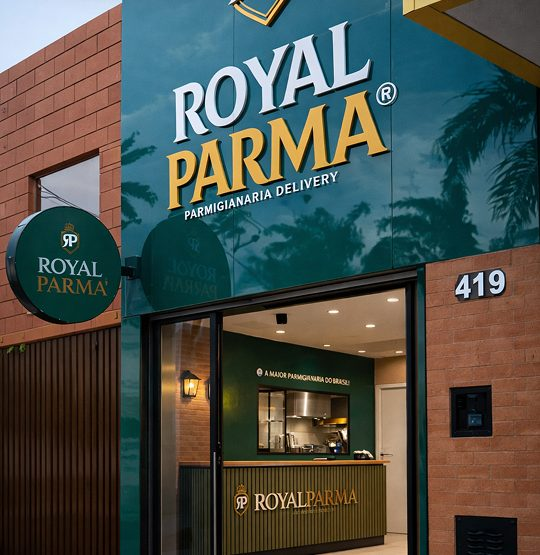
O tratamento só corrige a câmera: deixa a foto parecida com o prato visto ao vivo, na luz de casa. Ele nunca deixa o prato mais vermelho, mais dourado ou maior do que é.
Os três quadros riscados são a mesma foto com o erro aplicado para mostrar o efeito. O molho saturado parece tinta, o filtro pronto envelhece a comida, e a luz fria das lâmpadas brancas da cozinha deixa o queijo cinza e o arroz azulado.
Como corrigir a luz fria, no celular
O que o tratamento pode e não pode
| Ajuste | Situação |
|---|---|
| Balanço de branco, exposição, contraste leve | Pode: devolve a cor real |
| Recortar, endireitar, tirar uma migalha da borda do prato | Pode: não muda o prato |
| Saturação acima de +10, “vívido”, HDR forte | Não pode: muda a cor do molho e do queijo |
| Filtro pronto de aplicativo, vinheta, granulado | Não pode: a foto da rede é sem filtro |
| Clonar queijo, aumentar o filé, apagar falha do gratinado | Não pode: muda o que chega (09.3) |
| “Melhorar” a comida com inteligência artificial | Não pode: a foto deixa de ser do prato |
Quando o texto entra na foto, ele fica na parte de baixo, sobre a sombra de leitura: um degradê de Floresta que sobe da base e some antes do prato. Quando a foto precisa de um quadro, ela entra na moldura de rótulo. Nunca caixa colorida atrás da letra, nunca contorno na letra.
Royal Parma Bauru
Hoje tem parmegiana.
O queijo que puxa!!
Para dividir
A sombra de leitura no Canva
#0B1D17 e ajuste a transparência até o texto ler bem.Os erros que tiram a foto da rede. Onde a imagem enganaria se fosse publicada, o quadro mostra só o desenho do erro.
Formas e grafismos
Os grafismos tirados da embalagem: a moldura de rótulo, o filete duplo, o selo serrilhado, a curva do R, a pérola e as caixinhas.
Nenhuma forma da Royal Parma foi inventada para o manual. Todas saem da embalagem que a rede já usa ou do brasão: a caixa kraft tem a moldura dupla de cantos recortados, a curva enorme do R e os quadradinhos de marcar; o brasão tem as pérolas, os arcos da coroa e o escudo. Quem reconhece a caixa reconhece a peça.
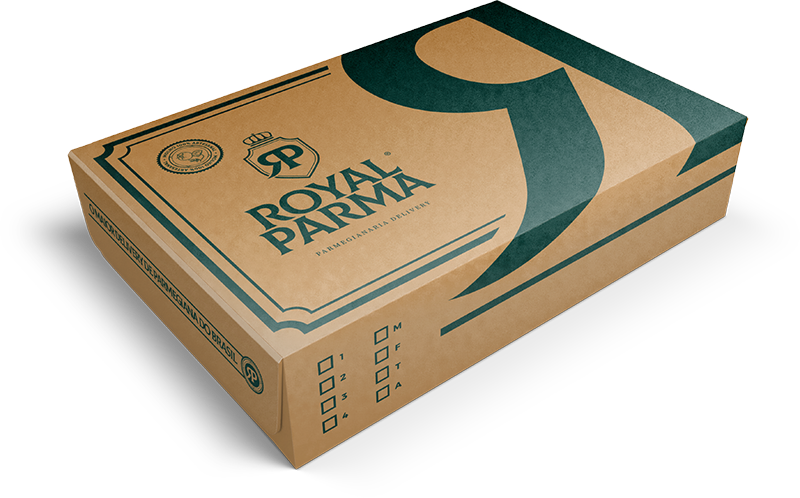
A forma principal do sistema. Dois fios iguais, paralelos, com os quatro cantos recortados em um quarto de círculo para dentro. Ela emoldura uma coisa só por peça, a que mais importa, e nunca entra dentro de outra moldura.
| Onde | Raio | Fios |
|---|---|---|
| Post, story e reels (1080) | 48 (de 40 a 56) | 3 a 12 de distância |
| Manual e site, na tela | 20 px (16 no celular) | 1 px a 4 px |
| Celular, peça de 390 | 16 | 1 a 4 |
| A4, cardápio impresso | 5 a 6 mm | 0,3 mm a 1,3 mm |
| Caixa, saco e fachada | o arquivo da embalagem e da fachada (seções 17 e 18) | |
O que a moldura emoldura
Parmegiana de frango
R$[valor]Pelo cardápio digital da Royal Parma [Cidade]. Preço de [data].
Cupom
Peça pelo cardápio
Regra do cupom: [valor], [validade], [unidade].
Uma moldura por peça, em volta da informação que decide. Dentro dela, respiro de pelo menos o raio em todos os lados. Fios na cor de moldura do campo: caramelo no Verde, Verde no Papel e no Kraft.
Moldura dentro de moldura, moldura em cada bloco do carrossel, moldura de canto arredondado (o canto da casa é recortado para dentro), moldura girada, fio grosso de um lado e fino do outro.
O círculo serrilhado, como a tampinha e o lacre do pedido. Carrega uma informação curta, de uma a três palavras, que precisa ser verdadeira no dia em que a peça sai. Um selo por peça, no máximo.
| Texto no selo | Situação | Condição |
|---|---|---|
| Novo · Lançamento | Permitido | Nos primeiros 90 dias do prato no cardápio |
| Vegetariano | Permitido | Prato sem carne nenhuma, inclusive no molho e no caldo |
| Para dividir · Serve 2 | Permitido | A porção da ficha técnica serve mesmo duas pessoas |
| Receita de família · RP | Permitido | Assinatura da marca, sem prometer resultado |
| Só no app · Só no cardápio digital | Zona cinzenta | Com a regra da oferta na peça: validade, unidade e canal |
| Feito na hora · Artesanal | Zona cinzenta | Só se a cozinha faz de fato; “artesanal” precisa de prova do processo |
| O melhor · Nº 1 · A maior · 100% artesanal | Vedado | Superlativo sem critério, fonte e data (08.2) |
| Mais vendido · Mais pedido | Vedado | Sem o dado de vendas da unidade, com período, guardado |
O grafismo de campo: a perna curva do R do monograma, enorme, saindo de um canto e cortada pela borda, como na tampa da caixa. Ela dá movimento à peça sem pedir atenção, por isso fica sempre em tom próximo ao do fundo.
Mata sobre o Verde
Tom de creme sobre o Creme
Verde sobre o Kraft
Atrás de área vazia, de título grande ou da margem. O texto pequeno fica sobre o fundo liso.
Atrás de texto corrido, preço, condição de promoção ou bloco da unidade; girada; inteira, sem corte; em duas cores; repetida como estampa.
Os dois detalhes pequenos da casa. As caixinhas vêm da lateral da caixa, onde a cozinha marca o pedido; viram checklist e “monte seu pedido”. As pérolas vêm da coroa; viram marcador de lista e divisor.
Caixinhas da caixa
O desenho original: 1 a 4 e M, F, T, A. Use como textura de pedido, com uma ou duas marcadas.
Monte seu pedido
Checklist e escolha. A caixinha marcada é a escolha feita; nunca use caixinha marcada para fazer promessa.
Pérolas
A regra é curta: no máximo uma forma de destaque por peça (moldura, selo, curva ou escudo), mais o filete. Pérolas e caixinhas são detalhe de texto e não contam como destaque. Duas formas de destaque na mesma peça disputam o olho e apagam o prato.
Do cardápio
Parmegiana de mignon
Com arroz e batata chips. Peça pelo cardápio digital da unidade.
Todo dia é dia de risoto
Risotos no cardápio digital da Royal Parma Bauru.
Promoção imperdível
Válido hoje Só no app
| Forma de destaque | Pode ir junto | Não vai junto |
|---|---|---|
| Moldura de rótulo | Filete, pérolas em lista, caixinhas no texto | Selo, curva, escudo, outra moldura |
| Selo | Filete, pérolas, foto sangrada | Moldura, curva, segundo selo |
| Curva do R | Filete, foto fora da curva | Moldura, selo, texto pequeno sobre ela |
| Escudo vazio | Filete, rótulo | Moldura, selo, curva |
As nove formas estão prontas em SVG, nas cores dos três campos, na pasta assets/formas/. O SVG não perde qualidade quando é ampliado e o Canva deixa trocar a cor sem redesenhar. Os arquivos saem do mesmo motor que desenha este manual (rforms.js).
#BE7F43 no Verde, Verde #102B22 no claro e no Kraft.| Forma | Verde | Papel | Kraft |
|---|---|---|---|
| Filete duplo | SVG | SVG | SVG |
| Moldura de rótulo | SVG | SVG | SVG |
| Selo | SVG | SVG | SVG |
| Curva do R | SVG | SVG | SVG |
| Caixinhas | SVG | SVG | SVG |
| Pérolas | SVG | SVG | SVG |
| Arco | SVG | SVG | SVG |
| Escudo vazio | SVG | SVG | SVG |
| Vapor | SVG | SVG | SVG |
// SVG pronto, em texto, com as cores em HEX do campo
rforms.svg('selo', { campo: 'verde', texto: 'Novo' });
rforms.svg('moldura', { campo: 'papel', proporcao: '4/5' });
// na página: <div data-rforms="curva" data-rforms-opts='{"canto":"sd"}'></div>A Royal Parma é uma parmegianaria brasileira, de receita de família. O enfeite de cantina italiana de filme diz o contrário e iguala a marca a qualquer restaurante genérico. Nada disto entra em peça, cardápio, embalagem ou fachada.
Ícones
A família Lucide em traço fino, os ícones da casa (pedido, entrega, cardápio, cupom, alergênicos) e onde eles não entram.
Os ícones da Royal Parma são todos da mesma família, o Lucide (biblioteca aberta, licença ISC, uso comercial livre), desenhados com traço fino de 1,5 e pontas redondas. Eles ajudam a achar a informação, nunca a substituem: todo ícone vem com a palavra ao lado.
lucide.dev, pelo nome em inglês da lista 11.2. No Canva, os ícones da casa vão como SVG enviado, não pelos elementos do próprio Canva.Tamanhos, em tamanho real
A cor sai do campo
Todos os dias, das [hora] às [hora]
O ícone acha a linha; a palavra informa.
[hora] · [hora]
Ícone sozinho no lugar da palavra: quem lê precisa adivinhar.
O conjunto curado para uma parmegianaria delivery e para a franquia: pedido, cardápio e alergênicos, preço, atendimento e investidor. Embaixo de cada um, o nome exato no Lucide. Ícone fora desta lista precisa de motivo e da aprovação do marketing da franqueadora.
Pedido e entrega
Cardápio e alergênicos
Preço e oferta
Atendimento
Franquia e investidor
No campo claro, o ícone sai em Verde, na mesma cor do texto. Canela só quando ele marca a informação que decide, uma por bloco.
As unidades já usam capas de destaque em círculo caramelo com ícone verde. O manual mantém a ideia e padroniza o conjunto: os mesmos sete destaques, com os mesmos nomes, na mesma ordem, em todas as unidades. O ícone sai da lista 11.2; o nome vai no campo do próprio Instagram, nunca escrito dentro da capa.
Os sete, na ordem, no aplicativo claro
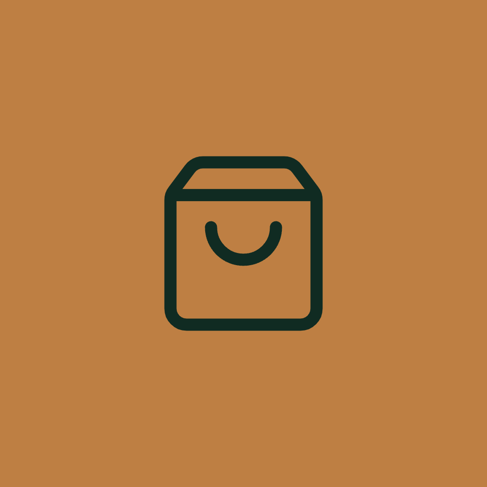
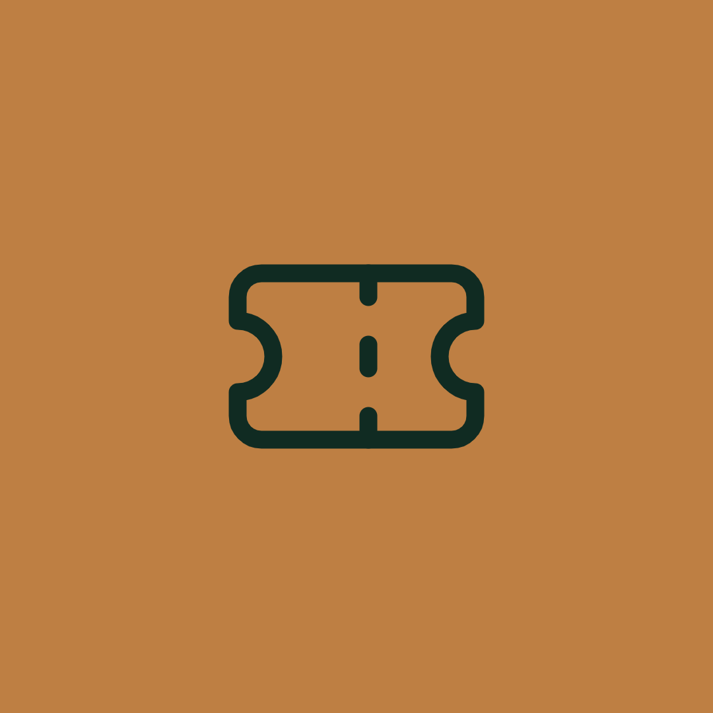
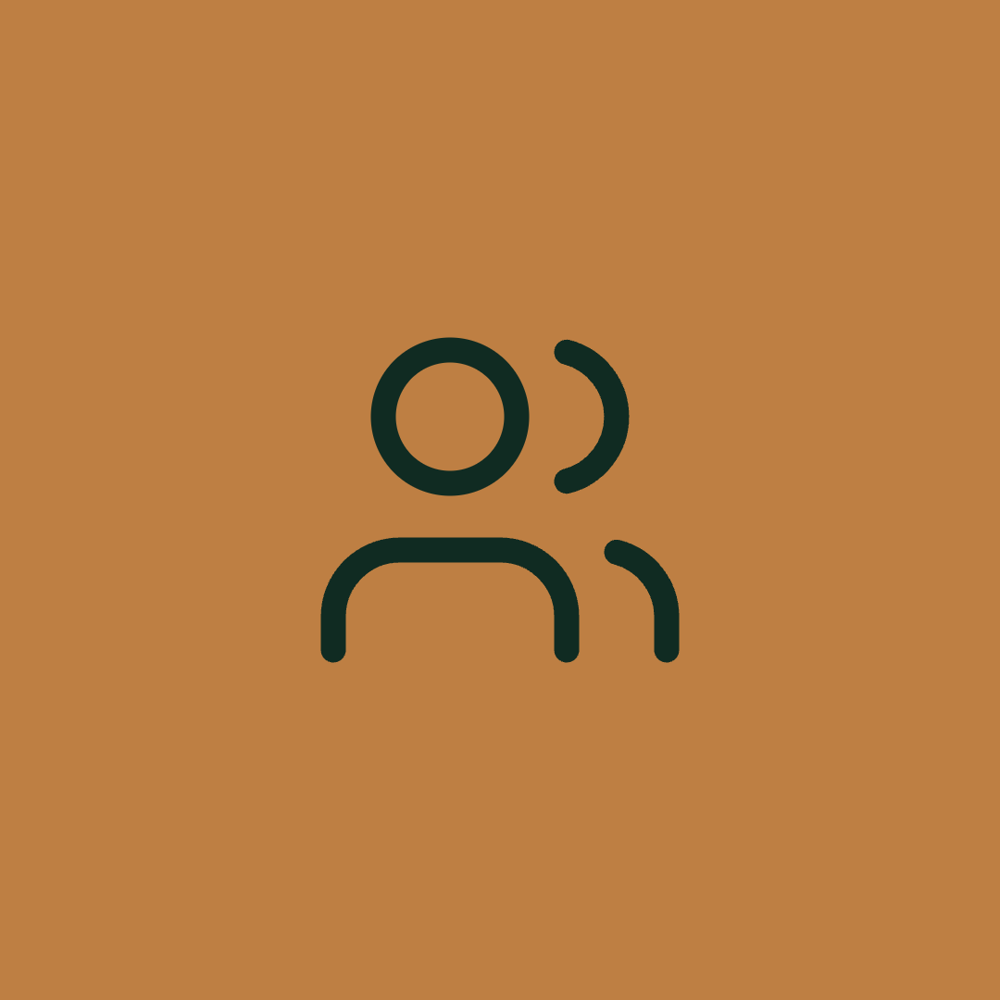
No aplicativo escuro
| Destaque | Ícone | O que guarda |
|---|---|---|
| Cardápio | book-open | Os pratos com foto real e o link do cardápio digital da unidade |
| Pedido | shopping-bag | Como pedir: cardápio digital, WhatsApp oficial e marketplaces, com o selo de canais oficiais |
| Cupom | ticket | Só cupom vigente, cada um com a regra escrita no próprio story (08.3); o vencido sai no dia |
| Horários | clock | Dias e horários de funcionamento e de retirada, com a data da atualização |
| Avaliações | star | Avaliações reais; cliente identificado só com autorização (09.4) |
| Quem somos | users | A história da receita de família, a equipe da unidade de uniforme, a loja |
| Contato | message-circle | WhatsApp, telefone e endereço oficiais da unidade |
Os erros que mais aparecem em peça de delivery. Se um ícone se parece com algum destes quadros, ele sai.
soup ou thermometer-sun.Dados e gráficos
Como mostrar números da rede, da unidade e da franquia com fonte, data e condição, em gráficos do motor rviz.
Todo gráfico da Royal Parma sai do motor rviz.js, que já desenha com as regras da casa. Quem monta o gráfico decide quatro coisas: o que destacar, o que o título conclui, de onde vem o número e quando ele foi medido.
Título com a conclusão, um destaque, rodapé com a origem do número.
O título repete o assunto e nada está destacado: quem lê tem de achar a conclusão sozinho.
| Elemento | Como sai | Nunca |
|---|---|---|
| Barra | Topo reto, base zero, sobre o filete duplo da casa | Topo arredondado, eixo que não começa no zero, 3D, sombra |
| Partes de um todo | Uma barra de 100% dividida (composicao) | Pizza ou rosca com mais de dois pedaços |
| Cor | Molho no destaque, neutro no resto, oliva na segunda série | Tomate fora de alerta, uma cor por barra, degradê |
| Texto | Título e número grande em Gloock; rótulo, valor e rodapé em Source Sans 3, no mínimo 13 px | Rótulo miúdo, legenda que obriga a ir e voltar |
| Grade | Nenhuma: o valor vai escrito no destaque | Linhas de grade, caixa em volta do gráfico |
Cada tipo responde a uma pergunta. Escolha pela pergunta, não pelo desenho. Todos os números deste bloco são ilustrativos, menos a linha do tempo, que vem da história pública da marca.
barras · comparar quantidades
barras-h · ordenar do maior para o menor
linha · mostrar a tendência no tempo
composicao · partes de um todo
anel · uma proporção sozinha
funil · etapas que perdem gente
fluxo · um processo, sem número
kpi · um número que resume
cota · medida de desenho técnico
linha-tempo · datas e marcos
<figure class="grafico">
<div class="grafico-svg" data-rviz='{"tipo":"barras",
"sobretitulo":"Pedidos por dia da semana",
"titulo":"Sábado é o dia mais cheio da unidade",
"rotulos":["Seg","Ter","Qua","Qui","Sex","Sáb","Dom"],
"valores":[40,31,38,47,61,66,52],"destaque":5,
"fonte":"Pedidos da Royal Parma [Cidade], [mês/ano]"}'></div>
</figure>
/* Para o Canva: o SVG pronto, com as cores da casa em HEX */
rviz.svg('barras', { ...opcoes, campo: 'verde', largura: 960 });Gráfico para o candidato a franqueado só mostra número da Circular de Oferta de Franquia (COF) vigente, com o mês dela no rodapé e o aviso ao investidor junto. Faturamento de unidade nunca vira promessa.
Valores estimados. Podem variar conforme praça, operação e execução. Informações completas na Circular de Oferta de Franquia (COF). Fonte: COF de [mês/ano].
O investimento total da COF por formato, com o que ele inclui dito na página. As barras deste modelo são ilustrativas; os valores entram da COF.
A curva de uma unidade vira promessa para todas: sem base, sem amostra, sem período e sem aviso. Não sai em nenhum canal (08.6).
| Número | Pode entrar no gráfico | Com o quê |
|---|---|---|
| Investimento total estimado | Sim, igual à COF vigente | O que inclui e o que não inclui, o mês da COF e o aviso ao investidor |
| Taxa de franquia, royalties e fundo de publicidade | Sim, igual à COF vigente | A base de cálculo de cada taxa |
| Prazo médio de retorno | Só em faixa, com base declarada | Quantas unidades, de qual formato, em qual período, e “não é garantia” |
| Faturamento médio | Só como média declarada | Amostra, período, formato e o aviso de que resultado passado não garante o futuro |
| Faturamento de uma unidade escolhida, como a de maior venda | Não | Dado parcial que distorce a conclusão |
| Número de unidades, estados e cidades | Só com fonte única e data | Pendência 4: até lá, não entra |
Quem pede quer saber três coisas: quanto tempo leva, quanto custa e se os outros gostaram. Cada número sai do sistema da própria unidade, com a data em que foi lido, e nunca como promessa.
Sempre estimativa: “em média [X] min na sua região”. O tempo real de cada pedido aparece no cardápio antes de o cliente fechar. Nunca “em 30 minutos ou é de graça”.
A nota exata do aplicativo, com o número de avaliações e a data da consulta. Estrelas só com o número ao lado (13.11). Nunca a média de vários aplicativos misturados.
“O prato mais pedido da semana na Royal Parma [Cidade]” só com o relatório da unidade daquela semana. Sem relatório, “um dos favoritos da casa”.
Alguns números não entram em gráfico nem em peça, com ou sem fonte. Outros só entram do jeito certo. Na dúvida, o número fica de fora e a peça fala do prato.
| Nunca | Por quê | No lugar |
|---|---|---|
| Faturamento de franqueado como promessa (“fature até”) | Promessa de ganho e dado parcial (08.6) | Média declarada da COF, com amostra, período e aviso, só para quem investe |
| Ranking com concorrente, nome de outra marca, “somos mais que” | Comparação que precisa ser objetiva, comprovável e sem depreciar (CONAR, art. 32) | Os números da própria Royal, com fonte e data |
| Avaliação inventada, “nota 5” sem fonte, comentário montado | Testemunhal falso (CONAR, Anexo Q) | A nota real do aplicativo, com data e número de avaliações |
| Número da rede sem fonte única | Superlativo e dado objetivo sem prova (08.2) | A história pública da marca (12.2, linha do tempo) |
| Eixo cortado para exagerar diferença | Leva a conclusão distorcida | Base zero, como o motor desenha |
| Dado de cliente: nome, endereço, pedido | Dado pessoal (08.8) | Totais da unidade, sem identificar ninguém |
| Número ilustrativo em peça publicada | Vira afirmação de fato | O número real, ou nenhum número |
Componentes
Botões, preço com condição, cupom, item de cardápio, alergênico, blocos de identificação, canais oficiais de pedido e avisos.
Uma tela de cardápio digital montada só com os componentes desta seção. Os números levam ao bloco que explica cada um. Troque o texto e a foto, mantenha o componente, não invente estilo novo.
Peça para hoje
A parmegiana chega quentinha.
Filé de frango empanado, molho de tomate e queijo gratinado. Acompanha [arroz e batata chips].
[peso] g · serve [N]
R$[valor]Pelo cardápio digital da Royal Parma [Cidade]. Preço de [data].
Válido de [data] a [data], até 23h59, na Royal Parma [Cidade], pelo cardápio digital. Pedido mínimo de R$ [valor]. Um uso por CPF. Não cumulativo com outras promoções.
Cupom da semana
[CÓDIGO]
[X]% no pedido
Royal Parma [Cidade]Delivery e retirada[endereço][razão social] · CNPJ [nº]
foliorotulo perola · 13.3c13-item · 13.5btn--cheio btn--linha · 13.2aviso-promo · 13.7moldura · 13.4canais · 13.6id-unidade · 13.6Um botão cheio, um de linha e o link com seta resolvem todas as chamadas. Todos têm no mínimo 48 px de altura, o tamanho da ponta de um dedo.
Deslize cada linha para ver os outros campos
Botão cheio btn btn--cheio
A ação principal da tela, uma por tela. A cor sai do campo: caramelo com texto Verde no Verde; Verde com texto creme no Papel e no Kraft. btn--caramelo e btn--verde são nomes do mesmo botão.
<a class="btn btn--cheio" href="#s13-2">Peça agora</a>Botão de linha btn btn--linha
A segunda opção, ao lado do cheio, nunca a única da tela.
<a class="btn btn--linha" href="#s13-5">Ver cardápio</a>Com o avanço btn--avanco
Quando o botão leva para a próxima etapa. É a chamada da página de franquia.
<a class="btn btn--cheio btn--avanco" href="#s13-10">Quero receber a apresentação</a>Para baixar btn--baixar
Arquivo para baixar: o cardápio em PDF, um modelo, a marca. Com o formato e o tamanho ao lado.
<a class="btn btn--linha btn--baixar" href="assets/royal-horizontal-claro.svg" download>Baixar o cardápio</a>Na largura toda btn--bloco
Ocupa a coluna inteira: o botão do formulário, a tela do celular, o cartão estreito.
<a class="btn btn--cheio btn--bloco" href="#s13-10">Enviar</a>Link com seta link-seta
Leva a outra página ou a outro bloco sem competir com o botão cheio.
<a class="link-seta" href="#s-08">Ver as regras da seção 08</a>Verbo no começo, até cinco palavras, e o que acontece depois do toque. As chamadas da casa (seção 07):
| Para quem | Chamadas |
|---|---|
| Quem pede | Peça agora · Peça pelo cardápio digital · Ver cardápio · Chama no WhatsApp da unidade · Salva para o próximo pedido |
| Quem investe | Quero receber a apresentação · Consultar disponibilidade na minha cidade · Falar com a expansão |
Promessa, pressa falsa ou prêmio no botão. A regra de cada um está na seção 08.
As marcas pequenas que organizam a tela. O selo é o círculo serrilhado da tampa e do lacre; a etiqueta é a situação de uma regra; a pílula é o filtro do cardápio.
Deslize cada linha para ver os outros campos
Rótulo rotulo
Nomeia uma parte, uma tela ou um dado: caixa alta, espaçado como o PARMEGIANA DELIVERY do logotipo. A pérola marca a informação principal da tela.
<p class="rotulo"><span class="perola" aria-hidden="true"></span>Parmegianas</p>Parmegianas
Parmegianas
Pílula pilula
Filtro ou categoria no cardápio digital e no site. Canto reto, como tudo na casa.
<span class="pilula">Risotos</span> <span class="pilula pilula--cheia">Parmegianas</span>Etiqueta de situação etiqueta
No manual, no kit e na aprovação de peças: a situação de uma regra ou de um arquivo. Sempre ícone e texto, nunca só a cor.
<span class="etiqueta etiqueta--permitido">Permitido</span> <span class="etiqueta etiqueta--proibido">Vedado</span> <span class="etiqueta etiqueta--atencao">Zona cinzenta</span> <span class="etiqueta etiqueta--pendente">Pendente</span>Selo selo
O lacre serrilhado com uma informação curta, de uma a três palavras: novidade, produto da casa, prato sem carne (só quando é verdade para o prato). Um por peça, e nunca com promessa sem prova (“o melhor”, “100% artesanal”).
<span class="selo"><span>Prato</span><em>novo</em></span> <span class="selo c13-selo-oliva"><span>Sem carne</span></span>Selo com texto em arco data-rforms="selo"
Quando o selo precisa de uma segunda informação curvada, como no lacre da caixa. Desenhado pelo motor rforms.js.
<div class="c13-forma" data-rforms="selo" data-rforms-opts='{"texto":"Novo","arco":"Produto da casa","tamanho":140}'></div>O preço e o cupom são promessas que viram contrato (08.4 e 08.3). Os componentes já nascem com o lugar da condição, para que ela nunca fique de fora.
Deslize cada linha para ver os outros campos
Preço com condição preco
Todo preço vem com a condição ao lado: canal, unidade e data. Sem a condição, o próprio componente se marca com um tracejado de alerta para ninguém publicar assim.
<p class="preco"><span class="preco-valor"><small>R$</small>[valor]</span><span class="preco-condicao">Pelo cardápio digital da Royal Parma [Cidade]. Preço de [data].</span></p>R$[valor]Pelo cardápio digital da Royal Parma [Cidade]. Preço de [data].
R$[valor]Pelo cardápio digital da Royal Parma [Cidade]. Preço de [data].
R$[valor]Pelo cardápio digital da Royal Parma [Cidade]. Preço de [data].
Preço sem condição preco
Assim o componente avisa que falta a condição. Não é estilo: é o erro aparecendo antes de sair.
<p class="preco"><span class="preco-valor"><small>R$</small>[valor]</span></p>R$[valor]
R$[valor]
Cupom moldura c13-cupom
Emoldurado como rótulo, com o código grande e as cinco informações que o cupom precisa: validade, unidade, canal, pedido mínimo e limite. No Kraft, vai no flyer dentro do saco.
<div class="moldura c13-cupom">
<p class="rotulo">Cupom · Royal Parma [Cidade]</p>
<p class="c13-cupom-codigo">[CÓDIGO]</p>
<p class="c13-cupom-valor">[X]% no pedido</p>
<dl class="c13-cupom-regras">
<div><dt>Validade</dt><dd>[data] a [data], até 23h59</dd></div>
<div><dt>Unidade</dt><dd>Royal Parma [Cidade]</dd></div>
<div><dt>Canal</dt><dd>Cardápio digital</dd></div>
<div><dt>Mínimo</dt><dd>R$ [valor]</dd></div>
<div><dt>Limite</dt><dd>Um uso por CPF · não cumulativo</dd></div>
</dl>
</div>Cupom · Royal Parma [Cidade]
[CÓDIGO]
[X]% no pedido
Cupom · Royal Parma [Cidade]
[CÓDIGO]
[X]% no pedido
Cupom · Royal Parma [Cidade]
[CÓDIGO]
[X]% no pedido
O prato descrito do jeito que chega: o que vem, quanto vem, o que contém e quanto custa, com a condição. É o componente que mais aparece na rede.
Deslize cada linha para ver os outros campos
Item de cardápio c13-item
Cardápio digital, cardápio impresso e catálogo do WhatsApp. Foto real do prato (lei III), nome em Gloock, descrição, porção em gramas ou pessoas, alergênicos e preço com condição. Os alergênicos do exemplo dependem da ficha técnica oficial (pendência 11).
<article class="c13-item"><div class="c13-item-corpo">
<img class="c13-item-foto" src="assets/fotos/parmegiana-frango-prato.jpg" alt="Parmegiana de frango servida com arroz e batata chips" width="632" height="422" loading="lazy" decoding="async">
<div class="c13-item-txt">
<h4 class="c13-item-nome">Parmegiana de frango</h4>
<p class="c13-item-desc">Filé de frango empanado, molho de tomate e queijo gratinado. Acompanha [arroz e batata chips].</p>
<p class="c13-item-porcao">[peso] g · serve [N]</p>
<ul class="c13-alerg" aria-label="Alergênicos">
<li class="c13-alerg-trigo">Glúten</li><li class="c13-alerg-leite">Leite</li><li class="c13-alerg-ovo">Ovo</li>
</ul>
<p class="preco"><span class="preco-valor"><small>R$</small>[valor]</span><span class="preco-condicao">Pelo cardápio digital. Preço de [data].</span></p>
</div>
</div></article>Filé de frango empanado, molho de tomate e queijo gratinado. Acompanha [arroz e batata chips].
[peso] g · serve [N]
R$[valor]Pelo cardápio digital. Preço de [data].
Filé de frango empanado, molho de tomate e queijo gratinado. Acompanha [arroz e batata chips].
[peso] g · serve [N]
R$[valor]Pelo cardápio digital. Preço de [data].
Alergênico alergenico
O aviso completo por prato ou por produto. Tomate no claro, mel no escuro, sempre com ícone e texto. Troque o ícone com c13-ic-leite e c13-ic-ovo.
<p class="alergenico"><span><b>Contém</b>Glúten (trigo), leite e ovo.</span></p>
<p class="alergenico c13-ic-leite"><span><b>Pode conter</b>Traços de leite.</span></p>ContémGlúten (trigo), leite e ovo.
Pode conterTraços de leite.
ContémGlúten (trigo), leite e ovo.
Pode conterTraços de leite.
Alergênico curto c13-alerg
A linha de ícones dentro do item de cardápio, quando o espaço é pouco. O aviso completo fica na página do prato.
<ul class="c13-alerg" aria-label="Alergênicos">
<li class="c13-alerg-trigo">Glúten</li><li class="c13-alerg-leite">Leite</li><li class="c13-alerg-ovo">Ovo</li>
</ul>Quem vende, quem é a franqueadora e por onde pedir com segurança. Os três blocos usam o mesmo corpo para todos os itens: o número se lê tão fácil quanto o nome.
Deslize cada linha para ver os outros campos
Bloco da unidade id-unidade
Quem vende: na bio, no flyer, no rodapé do cardápio digital e na peça que sai do perfil. Mesma fonte, corpo e cor em todos os itens; o ponto médio entra sozinho.
<p class="id-unidade"><span><b>Royal Parma [Cidade]</b></span><span>Delivery e retirada</span><span>[endereço]</span><span>Pedidos: (DD) [número oficial]</span><span>[cardápio digital]</span></p>Royal Parma [Cidade]Delivery e retirada[endereço]Pedidos: (DD) [número oficial][cardápio digital]
Royal Parma [Cidade]Delivery e retirada[endereço]Pedidos: (DD) [número oficial][cardápio digital]
Royal Parma [Cidade]Delivery e retirada[endereço]Pedidos: (DD) [número oficial][cardápio digital]
Bloco da unidade em linhas id-unidade--linhas
Rodapé de cardápio digital e de site da unidade, com o nome empresarial e o CNPJ que o comércio eletrônico exige (Decreto 7.962/2013, art. 2º).
<p class="id-unidade id-unidade--linhas"><span><b>Royal Parma [Cidade]</b></span><span>[razão social] · CNPJ [nº]</span><span>[endereço]</span></p>Royal Parma [Cidade][razão social] · CNPJ [nº][endereço]
Royal Parma [Cidade][razão social] · CNPJ [nº][endereço]
Bloco da franqueadora id-franqueadora
Toda peça para quem investe, o rodapé do site de franquia, a apresentação e o e-mail da expansão.
<p class="id-franqueadora"><span>Royal Parma Franquias</span><span>[razão social]</span><span>CNPJ [nº]</span><span>royalparmaoficial.com.br</span></p>Royal Parma Franquias[razão social]CNPJ [nº]royalparmaoficial.com.br
Royal Parma Franquias[razão social]CNPJ [nº]royalparmaoficial.com.br
Canais oficiais canais
A proteção contra perfil falso e golpe de cupom: no link da bio, no cardápio digital, no flyer do pedido e no rodapé do site. Só os canais que a unidade tem de verdade.
<aside class="canais" aria-labelledby="canais-titulo">
<div class="canais-cab"><p class="canais-titulo" id="canais-titulo">Canais oficiais da Royal Parma [Cidade]</p></div>
<ul class="canais-lista">
<li>Cardápio digital <b>[link do cardápio]</b></li>
<li>WhatsApp <b>(DD) [número oficial]</b></li>
<li>iFood <b>Royal Parma [Cidade]</b></li>
<li>Instagram <b>@royalparma[cidade]</b></li>
</ul>
<p class="canais-regra">Peça só pelos canais oficiais da sua unidade.</p>
<p class="canais-rodape">Royal Parma [Cidade] · Delivery e retirada</p>
</aside>Os avisos da casa têm texto fixo e lugar fixo. A nota e o alerta mudam de texto, mas não de forma.
Deslize cada linha para ver os outros campos
Aviso de promoção aviso-promo
Debaixo de todo cupom e de toda promoção, com a regra inteira (08.3). Na peça de 1080, pc-aviso a 26 px.
<p class="aviso-promo">Válido de [data] a [data], até 23h59, na Royal Parma [Cidade], pelo [canal]. [Limite]. Não cumulativo com outras promoções.</p>Válido de [data] a [data], até 23h59, na Royal Parma [Cidade], pelo [canal]. [Limite]. Não cumulativo com outras promoções.
Válido de [data] a [data], até 23h59, na Royal Parma [Cidade], pelo [canal]. [Limite]. Não cumulativo com outras promoções.
Aviso ao investidor aviso-investidor
Junto de todo número de investimento, retorno ou faturamento (08.6). Nunca numa nota escondida.
<p class="aviso-investidor"><span>Valores estimados. Podem variar conforme praça, operação e execução. Informações completas na Circular de Oferta de Franquia (COF).</span></p>Valores estimados. Podem variar conforme praça, operação e execução. Informações completas na Circular de Oferta de Franquia (COF).
Valores estimados. Podem variar conforme praça, operação e execução. Informações completas na Circular de Oferta de Franquia (COF).
Nota nota
Completa o texto sem gritar: uma observação, um “enquanto isso”.
<div class="nota"><strong>Horário de feriado</strong>No feriado de [data], a unidade abre das [hora] às [hora].</div>Alerta alerta
A regra que não pode ser quebrada. Um por tela, no máximo.
<div class="alerta"><strong>Golpe do cupom</strong>Desconfie de mensagem que pede pagamento antecipado para liberar cupom. Confirme pelos canais oficiais da unidade.</div>Para o dado que se consulta e para o número que resume. Os gráficos estão na seção 12.
Deslize cada linha para ver os outros campos
Tabela de consulta table.consulta
Horários, taxas por bairro, formatos de loja: até quatro colunas. No celular, cada linha vira um cartão sozinha.
<div class="table-wrap">
<table class="consulta">
<thead><tr><th scope="col">Dia</th><th scope="col">Horário</th></tr></thead>
<tbody>
<tr><td>Terça a sexta</td><td class="n">[hora] às [hora]</td></tr>
<tr><td>Sábado e domingo</td><td class="n">[hora] às [hora]</td></tr>
</tbody>
</table>
</div>| Dia | Horário |
|---|---|
| Terça a sexta | [hora] às [hora] |
| Sábado e domingo | [hora] às [hora] |
| Dia | Horário |
|---|---|
| Terça a sexta | [hora] às [hora] |
| Sábado e domingo | [hora] às [hora] |
Número grande kpi
Um número que resume, sempre com o que ele mede, a fonte e a data (12.4). Número sem fonte não vira KPI.
<div class="kpi-grid">
<div class="kpi"><span class="kpi-num">[X]<span class="un">min</span></span><span class="kpi-rot">Tempo médio de entrega em [mês], segundo o sistema da unidade</span></div>
</div>As caixinhas vêm da caixa kraft, onde a cozinha marca o pedido. No manual elas viram checklist e “monte seu pedido”.
Deslize cada linha para ver os outros campos
Checklist checklist
A conferência antes de publicar (seção 24) e qualquer lista de tarefas. Caixa de 22 px e linha de 48 px, para o dedo.
<div class="checklist">
<label class="check-row"><input type="checkbox"><span><b>A foto é do prato que a unidade entrega.</b><small>Porção, acompanhamento e embalagem.</small></span></label>
<label class="check-row"><input type="checkbox"><span><b>O cupom tem o aviso completo.</b><small>Validade, unidade, canal, mínimo e limite.</small></span></label>
</div>Caixinhas caixinhas
Os quadradinhos de marcar da caixa kraft: “monte seu pedido”, opções de ponto e de acompanhamento, legenda de cardápio impresso.
<ul class="caixinhas"><li class="marcada">Frango</li><li>Mignon</li><li>Abobrinha</li></ul>O formulário “Seja um franqueado” com o aviso de privacidade e as duas caixas de consentimento separadas. É o primeiro contato do investidor com a rede: pede pouco e diz para que serve cada dado.
No campo Papel · página de franquia
<form class="form c13-form" action="#" aria-labelledby="franquia-titulo">
<p class="rotulo" id="franquia-titulo">Seja um franqueado</p>
<div class="campo-form"><label for="franquia-nome">Nome completo</label><input id="franquia-nome" name="nome" type="text" autocomplete="name"></div>
<div class="campo-form tem-erro"><label for="franquia-whats">WhatsApp com DDD</label><input id="franquia-whats" name="whatsapp" type="tel" autocomplete="tel" inputmode="tel" value="(14) 9999" aria-describedby="franquia-whats-erro" aria-invalid="true"><p class="campo-erro" id="franquia-whats-erro">Confira o número: DDD e mais 8 ou 9 dígitos.</p></div>
<div class="campo-form"><label for="franquia-email">E-mail</label><input id="franquia-email" name="email" type="email" autocomplete="email"></div>
<div class="campo-form"><label for="franquia-cidade">Cidade onde quer abrir a unidade</label><input id="franquia-cidade" name="cidade" type="text" autocomplete="address-level2"></div>
<div class="campo-form"><label for="franquia-formato">Formato de interesse</label><div class="select"><select id="franquia-formato" name="formato"><option value="">Selecione</option><option>Loja Compartilhada</option><option>Loja Smart</option><option>Loja Pro</option><option>Ainda não sei</option></select></div></div>
<div class="campo-form"><label for="franquia-faixa">Quanto pretende investir <small>(capital disponível)</small></label><div class="select"><select id="franquia-faixa" name="faixa" aria-describedby="franquia-faixa-ajuda"><option value="">Selecione</option><option>Até R$ [valor] mil</option><option>De R$ [valor] mil a R$ [valor] mil</option><option>Acima de R$ [valor] mil</option><option>Prefiro conversar antes</option></select></div><p class="campo-ajuda" id="franquia-faixa-ajuda">Faixas em reais, iguais às da Circular de Oferta de Franquia (COF) vigente.</p></div>
<p class="campo-ajuda">Usamos seus dados para avaliar sua candidatura e falar com você sobre a franquia. Eles são vistos pela equipe de expansão da Royal Parma Franquias e guardados por [prazo]. Para corrigir ou pedir a exclusão, escreva para [e-mail de privacidade].</p>
<label class="consentimento"><input type="checkbox" name="contato" required><span>Quero ser contatado pela equipe de expansão sobre esta candidatura, por telefone, WhatsApp e e-mail.</span></label>
<label class="consentimento"><input type="checkbox" name="novidades"><span>Quero receber novidades da Royal Parma Franquias por e-mail. Opcional; posso sair quando quiser.</span></label>
<button class="btn btn--cheio btn--avanco btn--bloco" type="button">Quero receber a apresentação</button>
<p class="id-franqueadora"><span>Royal Parma Franquias</span><span>[razão social]</span><span>CNPJ [nº]</span></p>
</form>A nota dos aplicativos é prova social e, por isso, prova que precisa ser verdadeira. O componente não existe sem o número e a fonte.
Deslize cada linha para ver os outros campos
Avaliação c13-aval
Estrelas só com a nota real escrita ao lado, o número de avaliações, o aplicativo e a data da consulta (12.4). O preenchimento das estrelas segue a nota: --nota = nota dividida por 5, em porcentagem (4,7 vira 94%).
<figure class="c13-aval" style="--nota:94%">
<p class="c13-aval-num">[x,x]<span>de 5</span></p>
<span class="c13-aval-estrelas" role="img" aria-label="Nota [x,x] de 5">
<span class="c13-aval-vazias"><svg viewBox="0 0 24 24" fill="none" stroke="currentColor" stroke-width="1.5" stroke-linejoin="round" aria-hidden="true" focusable="false"><path d="M11.525 2.295a.53.53 0 0 1 .95 0l2.31 4.679a2.123 2.123 0 0 0 1.595 1.16l5.166.756a.53.53 0 0 1 .294.904l-3.736 3.638a2.123 2.123 0 0 0-.611 1.878l.882 5.14a.53.53 0 0 1-.771.56l-4.618-2.428a2.122 2.122 0 0 0-1.973 0L6.396 21.01a.53.53 0 0 1-.77-.56l.881-5.139a2.122 2.122 0 0 0-.611-1.879L2.16 9.795a.53.53 0 0 1 .294-.906l5.165-.755a2.122 2.122 0 0 0 1.597-1.16z"/></svg><svg viewBox="0 0 24 24" fill="none" stroke="currentColor" stroke-width="1.5" stroke-linejoin="round" aria-hidden="true" focusable="false"><path d="M11.525 2.295a.53.53 0 0 1 .95 0l2.31 4.679a2.123 2.123 0 0 0 1.595 1.16l5.166.756a.53.53 0 0 1 .294.904l-3.736 3.638a2.123 2.123 0 0 0-.611 1.878l.882 5.14a.53.53 0 0 1-.771.56l-4.618-2.428a2.122 2.122 0 0 0-1.973 0L6.396 21.01a.53.53 0 0 1-.77-.56l.881-5.139a2.122 2.122 0 0 0-.611-1.879L2.16 9.795a.53.53 0 0 1 .294-.906l5.165-.755a2.122 2.122 0 0 0 1.597-1.16z"/></svg><svg viewBox="0 0 24 24" fill="none" stroke="currentColor" stroke-width="1.5" stroke-linejoin="round" aria-hidden="true" focusable="false"><path d="M11.525 2.295a.53.53 0 0 1 .95 0l2.31 4.679a2.123 2.123 0 0 0 1.595 1.16l5.166.756a.53.53 0 0 1 .294.904l-3.736 3.638a2.123 2.123 0 0 0-.611 1.878l.882 5.14a.53.53 0 0 1-.771.56l-4.618-2.428a2.122 2.122 0 0 0-1.973 0L6.396 21.01a.53.53 0 0 1-.77-.56l.881-5.139a2.122 2.122 0 0 0-.611-1.879L2.16 9.795a.53.53 0 0 1 .294-.906l5.165-.755a2.122 2.122 0 0 0 1.597-1.16z"/></svg><svg viewBox="0 0 24 24" fill="none" stroke="currentColor" stroke-width="1.5" stroke-linejoin="round" aria-hidden="true" focusable="false"><path d="M11.525 2.295a.53.53 0 0 1 .95 0l2.31 4.679a2.123 2.123 0 0 0 1.595 1.16l5.166.756a.53.53 0 0 1 .294.904l-3.736 3.638a2.123 2.123 0 0 0-.611 1.878l.882 5.14a.53.53 0 0 1-.771.56l-4.618-2.428a2.122 2.122 0 0 0-1.973 0L6.396 21.01a.53.53 0 0 1-.77-.56l.881-5.139a2.122 2.122 0 0 0-.611-1.879L2.16 9.795a.53.53 0 0 1 .294-.906l5.165-.755a2.122 2.122 0 0 0 1.597-1.16z"/></svg><svg viewBox="0 0 24 24" fill="none" stroke="currentColor" stroke-width="1.5" stroke-linejoin="round" aria-hidden="true" focusable="false"><path d="M11.525 2.295a.53.53 0 0 1 .95 0l2.31 4.679a2.123 2.123 0 0 0 1.595 1.16l5.166.756a.53.53 0 0 1 .294.904l-3.736 3.638a2.123 2.123 0 0 0-.611 1.878l.882 5.14a.53.53 0 0 1-.771.56l-4.618-2.428a2.122 2.122 0 0 0-1.973 0L6.396 21.01a.53.53 0 0 1-.77-.56l.881-5.139a2.122 2.122 0 0 0-.611-1.879L2.16 9.795a.53.53 0 0 1 .294-.906l5.165-.755a2.122 2.122 0 0 0 1.597-1.16z"/></svg></span>
<span class="c13-aval-cheias"><svg viewBox="0 0 24 24" fill="currentColor" stroke="currentColor" stroke-width="1.5" stroke-linejoin="round" aria-hidden="true" focusable="false"><path d="M11.525 2.295a.53.53 0 0 1 .95 0l2.31 4.679a2.123 2.123 0 0 0 1.595 1.16l5.166.756a.53.53 0 0 1 .294.904l-3.736 3.638a2.123 2.123 0 0 0-.611 1.878l.882 5.14a.53.53 0 0 1-.771.56l-4.618-2.428a2.122 2.122 0 0 0-1.973 0L6.396 21.01a.53.53 0 0 1-.77-.56l.881-5.139a2.122 2.122 0 0 0-.611-1.879L2.16 9.795a.53.53 0 0 1 .294-.906l5.165-.755a2.122 2.122 0 0 0 1.597-1.16z"/></svg><svg viewBox="0 0 24 24" fill="currentColor" stroke="currentColor" stroke-width="1.5" stroke-linejoin="round" aria-hidden="true" focusable="false"><path d="M11.525 2.295a.53.53 0 0 1 .95 0l2.31 4.679a2.123 2.123 0 0 0 1.595 1.16l5.166.756a.53.53 0 0 1 .294.904l-3.736 3.638a2.123 2.123 0 0 0-.611 1.878l.882 5.14a.53.53 0 0 1-.771.56l-4.618-2.428a2.122 2.122 0 0 0-1.973 0L6.396 21.01a.53.53 0 0 1-.77-.56l.881-5.139a2.122 2.122 0 0 0-.611-1.879L2.16 9.795a.53.53 0 0 1 .294-.906l5.165-.755a2.122 2.122 0 0 0 1.597-1.16z"/></svg><svg viewBox="0 0 24 24" fill="currentColor" stroke="currentColor" stroke-width="1.5" stroke-linejoin="round" aria-hidden="true" focusable="false"><path d="M11.525 2.295a.53.53 0 0 1 .95 0l2.31 4.679a2.123 2.123 0 0 0 1.595 1.16l5.166.756a.53.53 0 0 1 .294.904l-3.736 3.638a2.123 2.123 0 0 0-.611 1.878l.882 5.14a.53.53 0 0 1-.771.56l-4.618-2.428a2.122 2.122 0 0 0-1.973 0L6.396 21.01a.53.53 0 0 1-.77-.56l.881-5.139a2.122 2.122 0 0 0-.611-1.879L2.16 9.795a.53.53 0 0 1 .294-.906l5.165-.755a2.122 2.122 0 0 0 1.597-1.16z"/></svg><svg viewBox="0 0 24 24" fill="currentColor" stroke="currentColor" stroke-width="1.5" stroke-linejoin="round" aria-hidden="true" focusable="false"><path d="M11.525 2.295a.53.53 0 0 1 .95 0l2.31 4.679a2.123 2.123 0 0 0 1.595 1.16l5.166.756a.53.53 0 0 1 .294.904l-3.736 3.638a2.123 2.123 0 0 0-.611 1.878l.882 5.14a.53.53 0 0 1-.771.56l-4.618-2.428a2.122 2.122 0 0 0-1.973 0L6.396 21.01a.53.53 0 0 1-.77-.56l.881-5.139a2.122 2.122 0 0 0-.611-1.879L2.16 9.795a.53.53 0 0 1 .294-.906l5.165-.755a2.122 2.122 0 0 0 1.597-1.16z"/></svg><svg viewBox="0 0 24 24" fill="currentColor" stroke="currentColor" stroke-width="1.5" stroke-linejoin="round" aria-hidden="true" focusable="false"><path d="M11.525 2.295a.53.53 0 0 1 .95 0l2.31 4.679a2.123 2.123 0 0 0 1.595 1.16l5.166.756a.53.53 0 0 1 .294.904l-3.736 3.638a2.123 2.123 0 0 0-.611 1.878l.882 5.14a.53.53 0 0 1-.771.56l-4.618-2.428a2.122 2.122 0 0 0-1.973 0L6.396 21.01a.53.53 0 0 1-.77-.56l.881-5.139a2.122 2.122 0 0 0-.611-1.879L2.16 9.795a.53.53 0 0 1 .294-.906l5.165-.755a2.122 2.122 0 0 0 1.597-1.16z"/></svg></span>
</span>
<figcaption>[N] avaliações no [aplicativo] · consultado em [data]</figcaption>
</figure>[x,x]de 5
[x,x]de 5
[x,x]de 5
A nota exata, a quantidade de avaliações, o aplicativo e a data. Se a nota cair, a peça muda.
Avaliação máxima!
Cinco estrelas sem número, sem fonte e sem data. Avaliação inventada ou arredondada para cima é testemunhal falso (08.8).
O índice de bolso: o componente, a classe, onde ele aparece e a regra que ele cumpre.
| Componente | Classe | Onde trabalha | Regra |
|---|---|---|---|
| Botões e link | btn · link-seta | Cardápio digital, site, página de franquia, e-mail | 07.4 · 07.5 |
| Preço com condição | preco · pc-preco | Cardápio digital, post de preço, flyer | 08.4 |
| Cupom e aviso de promoção | c13-cupom · aviso-promo | Story, post, flyer do pedido, WhatsApp | 08.3 |
| Item de cardápio e alergênico | c13-item · alergenico | Cardápio digital e impresso, catálogo do WhatsApp | 08.5 · 08.7 |
| Bloco da unidade e canais | id-unidade · canais | Bio, flyer, rodapé do cardápio digital, fachada | 06.3 · 15.4 |
| Bloco da franqueadora e aviso ao investidor | id-franqueadora · aviso-investidor | Site de franquia, apresentação, anúncio de expansão | 08.6 · 19.3 |
| Formulário | form · consentimento | Página de franquia, cadastro de cupom | 08.8 |
| Avaliação | c13-aval | Site, cardápio digital, peça com prova social | 12.4 |
Redes sociais das unidades
Post, carrossel, story, capa de reels, destaques, bio e legendas: os modelos que toda unidade usa, com a cidade em texto.
O que quem chega ao perfil vê primeiro: nove posts lado a lado. As regras de bolso da seção e o ritmo de campos que faz a grade parecer de uma casa só, de Bauru a Recife.
Parmegiana de frango
O queijo que puxa
Peça pelo cardápio digitalRoyal Parma Bauru · Sexta
Tudo fica melhor com Royal Parma
Sexta à noite, a mesa posta e a parmegiana chegando na caixa.
Chegou quentinho
A parmegiana, o arroz e a batata chips, cada um no seu lugar dentro da caixa.
Qual vai hoje?
Responda nos comentários. A gente lê todos.
Vídeo · do prato à porta
Parmegiana de frango
Royal Parma Bauru · Da cozinha à sua mesa
Como chega a sua parmegiana
1 / 5 · ArrasteCupom da semana
Use no cardápio digital
[CÓDIGO]
R$ [valor] de desconto em pedidos a partir de R$ [valor].
Válido de [data] a [data] na Royal Parma Bauru, pelo cardápio digital. 1 uso por CPF. Não cumulativo com outras promoções.
Que horas a cozinha abre?
Delivery e retirada no balcão: [endereço].
Pedido aberto
Cada coisa no seu lugar.
A grade é a vitrine da unidade. Quem chega ao perfil vê nove posts de uma vez e decide em segundos se dá vontade de pedir.
Três modelos em escala real, os que a unidade mais vai usar: a foto do prato com uma palavra de molho, o tipográfico Verde e o Kraft do pedido que chegou. Toque em Mostrar grade para ver margens e colunas.
Parmegiana de frango
O queijo que puxa
Peça pelo cardápio digitalRoyal Parma Bauru · Sexta
Tudo fica melhor com Royal Parma
Sexta à noite, a mesa posta e a parmegiana chegando na caixa.
Chegou quentinho
A parmegiana, o arroz e a batata chips, cada um no seu lugar dentro da caixa.
O queijo que puxa
Mostra o prato real e deixa a vontade fazer o trabalho. Uma palavra temperada, nada de promessa.
A melhor parmegiana do Brasil 🏆
A regra pede outra forma: superlativo que soa como ranking precisa de prova com fonte e data, e o troféu sai da arte (08.2).
Cinco lâminas que respondem a uma pergunta de quem pede. A capa e o fechamento em Verde; o miolo em Papel e, quando o assunto é a caixa, em Kraft. Deslize para ver todas.
Royal Parma Bauru · Da cozinha à sua mesa
Como chega a sua parmegiana
1 / 5 · ArrasteNa marmita de alumínio.
A parmegiana vai inteira, com o molho e o queijo gratinado por cima, num recipiente só dela.
ArrasteArroz e batata chips à parte.
Cada um no seu recipiente, para a batata não encostar no molho.
ArrasteFechada com o lacre da casa.
Tudo vai na caixa kraft com o brasão. Se o lacre chegar rompido, avise a unidade antes de abrir.
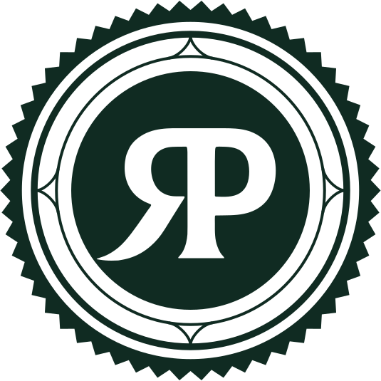
ArrasteSalve para o próximo pedido.
Peça só pelos canais oficiais
Royal Parma BauruDelivery e retirada[endereço]Pedidos: (DD) [número oficial]
O lacreÉ o adesivo redondo com o RP, o mesmo selo da seção 01. A arte e a medida estão na 17.2; o que vai junto com a caixa, na 15.6.
Bloco da unidadeÉ o .id-unidade do manual, na versão da peça: nome com a cidade, "Delivery e retirada", endereço e número oficial, na mesma letra.
O perfil é a porta da unidade. Nome com a cidade, bio sem superlativo, link para o cardápio digital, sete destaques iguais em toda a rede e o mesmo avatar em todas as cidades.
Parmegiana de frango
O queijo que puxa
Peça pelo cardápio digitalRoyal Parma Bauru · Sexta
Tudo fica melhor com Royal Parma
Sexta à noite, a mesa posta e a parmegiana chegando na caixa.
Chegou quentinho
A parmegiana, o arroz e a batata chips, cada um no seu lugar dentro da caixa.
Qual vai hoje?
Responda nos comentários. A gente lê todos.
Vídeo · do prato à porta
Parmegiana de frango
Royal Parma Bauru · Da cozinha à sua mesa
Como chega a sua parmegiana
1 / 5 · ArrasteCupom da semana
Use no cardápio digital
[CÓDIGO]
R$ [valor] de desconto em pedidos a partir de R$ [valor].
Válido de [data] a [data] na Royal Parma Bauru, pelo cardápio digital. 1 uso por CPF. Não cumulativo com outras promoções.
Que horas a cozinha abre?
Delivery e retirada no balcão: [endereço].
Pedido aberto
Cada coisa no seu lugar.
Bio da unidade · pronta para copiar
Parmegiana de receita de família, no delivery e na retirada [bairro], [Cidade] Peça pelo cardápio digital 👇
Cerca de 110 caracteres, dentro dos 150 do Instagram. Três linhas: o que a casa faz, onde fica, como pedir. Sem superlativo, sem troféu, no máximo dois emojis (aqui, um só).
royal-avatar-1080.png: a vertical oficial sobre o Verde, igual em toda a rede. A cidade nunca entra no avatar (seção 01).Sete capas iguais em toda a rede, na mesma ordem: círculo caramelo cheio e ícone Lucide em Verde, com traço fino. É o mesmo desenho dos ícones da seção 11. O nome do destaque vai no campo do Instagram, fora da arte.
Arte1080 × 1920 px com fundo caramelo inteiro e o ícone em Verde no centro, com 360 px e traço proporcional ao 1,5 de 24. O Instagram recorta o círculo do meio.
Canais oficiaisGuarda o story fixo dos canais (15.5) e é refeito a cada troca de número. É a defesa contra perfil falso e cupom falso.
RepostsSó fotos de clientes que autorizaram por escrito, mesmo por mensagem direta salva (14.5).
Parmegiana de receita de família, no delivery e na retirada
Diz o que a casa faz, de onde vem a receita e como pedir. Tudo se comprova.
🏆 A MELHOR PARMEGIANARIA DELIVERY DO BRASIL 🏆
A regra pede outra forma: "a melhor" precisa de prêmio ou pesquisa com nome e ano, e a bio de unidade não faz promessa própria (08.2, pendência 3).
Quatro modelos para o dia a dia: o cardápio do dia, o cupom com a regra, a enquete e o repost de cliente. O que importa fica nos 1420 px do meio.
Hoje no cardápio
Hoje tem parmegiana.
Seu cupom chegou
Use no cardápio digital
[CÓDIGO]
R$ [valor] de desconto em pedidos a partir de R$ [valor].
Válido de [data] a [data], às 23h59, na Royal Parma Bauru, pelo cardápio digital. 1 uso por CPF. Não cumulativo com outras promoções. Taxa de entrega à parte.
Qual você pede hoje?


Do seu pedido para o nosso story
Obrigado por pedir na Royal.
Repost autorizado pelo cliente em [data].
GradeToque em Mostrar grade para ver as faixas de 250 px de cima e de baixo.
A legenda termina o que a arte começou: gancho, apetite, chamada e, quando houver, a condição. Seis modelos prontos para copiar, um para cada ocasião que a unidade mais usa.
Almoço
Meio-dia e a fome bateu? A parmegiana de frango sai empanada, gratinada e com molho de tomate por cima, com arroz e batata chips do lado. 🍽️ Peça pelo cardápio digital da Royal Parma [Cidade], link na bio. #royalparma #royalparma[cidade] #parmegiana
Sexta
Sexta é dia de dividir. Marca aqui quem vai dividir uma Royal com você hoje. 😋 Pedidos pelo cardápio digital ou pelo WhatsApp oficial da unidade, link na bio. #royalparma #royalparma[cidade] #parmegiana
Domingo em família
Domingo pede mesa cheia e ninguém na beira do fogão. A parmegiana chega na caixa e é só servir. 🍽️ A [prato] serve [N] pessoas (aprox. [peso] g). Peça pelo cardápio digital da Royal Parma [Cidade]. #royalparma #royalparma[cidade] #parmegiana
Dia chuvoso
Chovendo aí em [bairro]? Fica no sofá que a parmegiana vai até você. 👇 O tempo de entrega estimado aparece no cardápio digital antes de você fechar o pedido. #royalparma #royalparma[cidade]
Lançamento de prato
Chegou no cardápio: [nome do prato]. [O que vem e como vem, em uma frase.] 😋 Na Royal Parma [Cidade] a partir de [data], pelo cardápio digital e pelo WhatsApp oficial. Contém: [alergênicos]. #royalparma #royalparma[cidade] #parmegiana
Cupom com regra
Cupom [CÓDIGO]: R$ [valor] de desconto em pedidos a partir de R$ [valor] no cardápio digital da Royal Parma [Cidade]. 👇 Válido de [data] a [data], às 23h59. 1 uso por CPF, não cumulativo com outras promoções. Taxa de entrega à parte. #royalparma #royalparma[cidade]
Hashtags
De duas a quatro, sempre as mesmas: #royalparma, #royalparma[cidade] e #parmegiana. Nada de lista de vinte no fim nem hashtag de outra marca.
Emoji
No máximo dois por legenda, de comida ou de mão: 🍽️ 😋 👇. Nunca troféu, coroa, fogo ou bandeira, e nunca emoji na arte.
Primeira linha
O Instagram corta a legenda depois de cerca de 125 caracteres. O gancho mora ali; a regra do cupom vem logo depois e nunca some no "mais" da peça.
Sexta é dia de dividir. Marca aqui quem vai dividir uma Royal com você hoje. 😋
Ocasião, apetite e chamada em duas frases, com um emoji de comida. A marca convida a dividir, como na legenda pública "Dobra o pedido e marca quem vai dividir uma Royal com você!".
Cinco pilares para não faltar assunto e uma semana de exemplo. A frequência é sugestão: a regra é ter sempre foto real, regra escrita e autorização de quem aparece.
O prato como ele chega, um por post. Lançamento, prato do dia, o clássico da casa.
Foto real, na embalagem e na porção da unidade.
A cozinha da unidade: o empanar, o gratinar, a montagem da caixa, a saída do pedido.
Quem aparece autoriza por escrito. Nada encenado.
Almoço, sexta, domingo em família, dia de chuva, dia de jogo, fim do mês.
Data comemorativa nunca vira sorteio.
Repost, foto do pedido que chegou, avaliação de quem pediu.
Só com autorização escrita guardada.
Horário, área de entrega, como pedir, canais oficiais, alergênicos.
Dado da unidade, conferido no dia.
Ritmo sugeridoDe três a quatro posts e um reels por semana, e stories em todo dia de funcionamento. Constância vale mais que volume: uma unidade que publica três vezes por semana, todas as semanas, aparece mais do que uma que publica todo dia por um mês e some.
Porcentagem dos posts do mês. Sugestão do manual, não dado medido: ajuste ao que a sua cidade responde.
A conferência completa da peça de unidade está na 24.2.
Os mesmos arquivos, as mesmas cores, as mesmas fontes. O que muda é quem lê: o investidor pede número com fonte e o aviso da COF; o fundador conta a história real da marca.
| O que muda | Perfil da unidade | Royal Parma Franquias | Bruno Lima |
|---|---|---|---|
| Para quem fala | Quem pede: apetite, ocasião, praticidade | Quem investe: dado concreto, com fonte | Quem acompanha a história da marca |
| Nome | Royal Parma [Cidade] | Delivery | Royal Parma Franquias | Bruno Lima |
| Foto | O avatar da rede | O avatar da rede | Retrato real do Bruno |
| Campo dominante | Verde, com Papel e Kraft | Papel, com Verde nas capas | Verde e foto real |
| Chamada | Peça pelo cardápio digital | Quero receber a apresentação | Nenhuma de venda; a história |
| Número na peça | Preço só com condição | Só o da COF vigente, com o aviso | Nenhum resultado de franqueado |
Três formatos de loja.
Investimento total estimado a partir de R$ [valor do COF].
Valores estimados. Podem variar conforme praça, operação e execução. Informações completas na Circular de Oferta de Franquia (COF).
Toda grande marca começa com um sonho, o meu começou em família.
Bruno Lima · Fundador da Royal Parma
Bio de Royal Parma Franquias · pronta para copiar
Parmegianaria delivery em franquia · três formatos de loja Informações completas na Circular de Oferta de Franquia (COF) Quero receber a apresentação 👇
Bio do Bruno Lima · pronta para copiar
Bruno Lima · Fundador e CEO da Royal Parma Começou em família, num restaurante em Pouso Alegre (MG), em 2009
Fatos da bioO restaurante da família em Pouso Alegre (MG), em 2009, está na linha do tempo pública dos sites da marca (consulta em 30/09/2026). A frase do post é do Bruno Lima, publicada no site oficial.
Delivery, cardápio digital e WhatsApp
A unidade no iFood e em outros aplicativos, o cardápio digital próprio e o WhatsApp de pedidos.
Seis momentos, da primeira foto à volta. Em cada um a marca aparece de um jeito, e em todos ela promete a mesma coisa: o que a peça mostra é o que chega.
| Momento | Onde a marca aparece | O que não pode faltar | No manual |
|---|---|---|---|
| Descobre | Perfil da unidade, post, story, reels, anúncio, indicação de quem já pediu | Foto real do prato e a cidade em texto | 14 · 16 |
| Escolhe | Cardápio digital da unidade e a loja nos aplicativos de delivery | Foto fiel, nome padrão, descrição com porção e alergênicos | 15.2 · 15.3 |
| Pede | Cardápio digital, WhatsApp oficial ou aplicativo | Taxa de entrega e pedido mínimo antes de fechar; só canais oficiais | 15.4 · 15.5 |
| Recebe | Mensagem de saída, entregador, saco kraft | Previsão honesta e o saco fechado com o lacre | 15.4 · 17 |
| Abre a caixa | Caixa kraft, lacre, marmitas, cartão de agradecimento | O prato igual ao da foto e os canais da unidade no cartão | 15.6 · 17.2 |
| Volta | Pós-venda no WhatsApp, avaliação, perfil, cupom | Pedido de avaliação sem troca por desconto | 15.7 |
A loja da unidade no aplicativo é uma vitrine que a rede divide com os concorrentes. Logo, capa, nome, foto, descrição e alergênicos seguem o mesmo padrão em toda cidade.
royal-avatar-1080.png, o mesmo do Instagram e do WhatsApp. O aplicativo recorta em círculo: a margem já está no arquivo.Descrição-modelo · pronta para copiar
Filé de frango empanado, coberto com molho de tomate e queijo gratinado. Acompanha [arroz branco e batata chips]. Serve [N] pessoa (aprox. [peso] g). Contém: glúten (trigo), ovo e leite. [Conferir na ficha técnica da unidade.]
| Nome padrão | Descrição-modelo | Contém (conferir na ficha técnica) |
|---|---|---|
| Parmegiana de frango | Filé de frango empanado, coberto com molho de tomate e queijo gratinado. Acompanha [acompanhamentos]. Serve [N] (aprox. [peso] g). | Glúten (trigo), ovo e leite |
| Parmegiana de mignon | Filé mignon empanado, coberto com molho de tomate e queijo gratinado. Acompanha [acompanhamentos]. Serve [N] (aprox. [peso] g). | Glúten (trigo), ovo e leite |
| Parmegiana de abobrinha | Abobrinha empanada, coberta com molho de tomate e queijo gratinado. Sem carne. Acompanha [acompanhamentos]. Serve [N] (aprox. [peso] g). | Glúten (trigo), ovo e leite |
| Strogonoff de frango | Strogonoff de frango com arroz branco e batata chips. Serve [N] (aprox. [peso] g). | Leite [e o que mais a receita levar] |
| Spaghetti ao sugo | Spaghetti ao molho de tomate. [Coberturas.] Serve [N] (aprox. [peso] g). | Glúten (trigo) [e ovo, se a massa levar] |
| Molho de Tomate artesanal | Molho de tomate em pote de [conteúdo líquido, conforme o rótulo]. | "Contém glúten" ou "Não contém glúten", como no rótulo (17.5) |
Royal Parma Bauru
A marca e a cidade, como no Instagram e no WhatsApp. Quem procura acha; quem compara sabe de qual unidade é.
ROYAL PARMA 🏆 A MAIOR DO BRASIL · BAURU
A regra pede outra forma: o nome da loja não carrega promessa, e "a maior" só com critério, fonte e data (08.2, pendência 3).
O canal da casa: topo Verde, o resto em Papel, o botão em Verde. Taxa, pedido mínimo e tempo aparecem antes de escolher; o preço vem sempre junto do prato.
Royal Parma Bauru
Aberto · pedidos até [hh]
Parmegiana de frango
Filé de frango empanado, molho de tomate e queijo gratinado. Acompanha arroz e batata chips.
Serve 1 · aprox. [peso] g
Contém glúten (trigo), ovo e leite
Strogonoff de frango
Serve 1 · aprox. [peso] g · Contém leite
R$[valor]Spaghetti ao sugo
Serve 1 · aprox. [peso] g · Contém glúten
R$[valor][razão social] · CNPJ [nº] · [endereço]
wheat, milk, egg). O preço à vista fica junto, em letra de 12 pontos ou mais (Lei 10.962/2004, art. 2º, III).Pelo cardápio digital, a parmegiana de frango sai por R$ [x] com entrega; nos apps de entrega, R$ [y]. Preços de [data], Royal Parma [Cidade].
Mesmo prato, preço total, data e unidade: a comparação se prova com duas capturas de tela guardadas (08.4).
Mais barato que no aplicativo!
A regra pede outra forma: comparação de preço sem item, sem data e sem a taxa de entrega engana por omissão, e o preço de cada unidade pode ser outro (08.4).
O balcão da unidade no celular de quem pede. Perfil comercial completo, mensagens-modelo para cada momento do pedido e a lista de transmissão só com consentimento.
Mensagem automáticaOlá! Aqui é a Royal Parma Bauru 😋 Para pedir, use o cardápio digital: [link]. Se preferir, mande aqui o pedido e o endereço.19:02
Uma parmegiana de frango e uma batata chips extra, por favor. Rua [nome], [nº], [bairro].19:04
Pedido confirmado.
1 Parmegiana de frango · R$ [valor]
1 Batata chips extra · R$ [valor]
Entrega · R$ [valor]
Total · R$ [valor], no [forma de pagamento]
Previsão: entre [hh:mm] e [hh:mm].19:05
Seu pedido saiu para entrega. Chega por volta de [hh:mm]. A caixa vai com o lacre da Royal Parma: se chegar rompido, avise antes de abrir.19:31
Hoje no cardápio
Hoje tem parmegiana.
Peça pelo cardápio digital ou responda este status.
Saudação · automática
Olá! Aqui é a Royal Parma [Cidade] 😋 Para pedir, use o cardápio digital: [link do cardápio]. Se preferir, mande aqui o seu pedido e o endereço de entrega. Hoje a cozinha atende das [hh] às [hh].
Confirmação do pedido
Pedido confirmado, [nome]. [qtd] [prato] · R$ [valor] [qtd] [item] · R$ [valor] Entrega · R$ [valor] Total · R$ [valor], no [forma de pagamento] Endereço: [rua, número, bairro] Previsão de entrega: entre [hh:mm] e [hh:mm]. Se mudar, a gente avisa por aqui.
Saiu para entrega
Seu pedido saiu para entrega, [nome]. Chega por volta de [hh:mm]. A caixa vai com o lacre da Royal Parma: se chegar rompido, avise antes de abrir.
Chegou
O entregador chegou ao seu endereço. Bom apetite 🍽️
Pós-venda · pedir avaliação
Oi, [nome]. Como estava a sua parmegiana? Se puder, conte como foi na avaliação do [canal] ou responda aqui. A sua opinião ajuda a cozinha da unidade a melhorar.
Resposta a reclamação
Oi, [nome]. Sentimos muito pelo que aconteceu com o seu pedido. Pode mandar uma foto de como ele chegou? Vamos resolver por aqui ainda hoje: [solução prevista pela unidade].
Fora do horário · automática
Olá! A cozinha da Royal Parma [Cidade] está fechada agora. Abrimos [dia] às [hh]. O cardápio digital fica no ar para você ver os pratos: [link do cardápio].
Como escrever no WhatsApp
Convite para a lista · pronto para copiar
Quer receber o cardápio do dia e os cupons da Royal Parma [Cidade] por aqui? Responda SIM. Você pode sair quando quiser respondendo SAIR.
Rodapé de toda mensagem da lista
[Mensagem da lista: o cardápio do dia ou o cupom com a regra inteira.] Para não receber mais, responda SAIR.
royal-avatar-1080.png. Na lista de conversas o app mostra o nome ao lado: o brasão identifica.Perfil falso e cupom falso usam o nome e o avatar da rede. A defesa é dizer sempre, no mesmo lugar e do mesmo jeito, quais são os canais da unidade.
Canais oficiais.
Atenção ao golpe
Cupom de verdade só aparece nestes canais. Recebeu oferta de outro número ou perfil? Não pague e confirme aqui.
Como o golpe aparece
O que a unidade faz
Frase do story"Cupom de verdade só aparece nestes canais" é modelo: a franqueadora confirma a política de pagamento antes de publicar (seção 23).
Abrir a caixa é o momento da verdade. O que vai junto com o pedido, o lacre e o cartão de agradecimento em Kraft, com os canais da unidade para o próximo pedido.
O lacre é o adesivo redondo com o RP, o mesmo selo da seção 01. Ele fecha a caixa e o saco e diz a quem recebe que ninguém abriu o pedido no caminho.
LacreVerde de uma cor sobre o kraft. Diâmetro, papel e acabamento na 17.2.
Cartão · frente
Obrigado por pedir na Royal.
Bom apetite, e até o próximo pedido.
Cartão · verso
Peça de novo pelos canais oficiais
Royal Parma BauruDelivery e retirada
A nota no aplicativo é a primeira coisa que quem não conhece a unidade vê. Responder sempre, sem expor ninguém e sem trocar nota por desconto.
[Comentário do cliente, como ele escreveu]
 Resposta de Royal Parma Bauru
Resposta de Royal Parma Bauru
Sentimos muito pelo seu pedido: não é assim que a parmegiana deve chegar. Queremos entender e resolver. Fale com a gente pelo WhatsApp oficial da unidade, (DD) [número oficial], com o número do pedido.
Resposta · avaliação boa
Obrigado pelo pedido e por contar como foi. A cozinha da Royal Parma [Cidade] vai gostar de ler. Até a próxima parmegiana.
Resposta · reclamação
Sentimos muito pelo seu pedido: não é assim que a parmegiana deve chegar. Queremos entender e resolver. Fale com a gente pelo WhatsApp oficial da unidade, (DD) [número oficial], com o número do pedido.
Resposta · nota sem comentário
Obrigado pela avaliação. Se quiser contar mais sobre o pedido, o WhatsApp oficial da unidade é (DD) [número oficial].
Se puder, conte como foi na avaliação do aplicativo.
Pede a opinião sem oferecer nada em troca: a avaliação continua sendo de quem comeu.
Dê 5 estrelas e ganhe 10% no próximo pedido!
A regra pede outra forma: avaliação comprada deixa de ser genuína (Código do Conselho Nacional de Autorregulamentação Publicitária, o CONAR, art. 27, § 9º), e os aplicativos costumam proibir a troca [conferir os termos de cada plataforma].
Vídeo e reels
Roteiro, capa, legenda na tela, assinatura e o que nunca editar no vídeo de comida.
O vídeo da Royal Parma mostra o que a foto não alcança: o queijo esticando, a caixa sendo fechada, a cozinha trabalhando, a família dividindo. Tudo gravado na unidade, com a comida que vai para o pedido, sem truque de imagem.
A capa é o quadro que forma a vitrine do perfil. O Instagram a mostra inteira no reels e recortada em 3:4 na grade do perfil, e a interface cobre a parte de baixo. Tudo o que importa fica entre y 269 e 1248: dentro do recorte e acima dos 35% de baixo.
Royal Parma Bauru
O queijo que puxa
Royal Parma Bauru
O queijo que puxa
Do forno para a caixa
Quem rola o feed decide em dois segundos. O primeiro quadro já tem comida e uma frase curta, escrita grande, com a palavra de molho no que dá vontade. A frase convida; nunca promete o que a unidade não entrega.
Pedimos para dois.
Chegou assim.
Você divide
ou come sozinho?
Muita gente assiste sem som. A legenda reproduz a fala, de uma a três palavras por vez, na altura do peito, em Source Sans 3 Bold creme. A palavra que carrega a ideia entra em Playfair Display Italic caramelo, uma por frase. Sem caixa, sem contorno.
o queijo puxando
Saiu do forno
agora,
olha o queijo
puxando.
Os últimos 2 a 3 segundos dizem onde pedir. O logotipo grande, a cidade escrita em texto e os canais oficiais da unidade. Quando o vídeo fala de promoção, a condição entra aqui, legível, no tempo de ler.
Royal Parma Bauru
Delivery e retirada
Cardápio digital: [link do cardápio]WhatsApp: (DD) [número oficial]iFood: Royal Parma Bauru
Cupom no cardápio digital
Royal Parma BauruWhatsApp: (DD) [número oficial]
Cupom [código]: [valor] em pedidos a partir de R$ [valor], de [data] a [data], só pelo cardápio digital da Royal Parma Bauru. 1 uso por CPF. Não cumulativo.
A trilha baixa na cartela. Se houver narração, ela lê o canal e a condição, como a tela mostra.
O som do prato é a trilha da casa: o crocante do empanado, o garfo no queijo, a caixa fechando. Música só com licença para uso comercial. A voz, quando entra, é a de alguém da casa, falando como quem conversa à mesa.
| Som | Situação | Como |
|---|---|---|
| Som real da cozinha e da mesa | Permitido | Sempre que der. Grave perto, sem ventilador e sem exaustor ligados na hora do close |
| Narração da equipe ou do Bruno Lima | Permitido | Com autorização de imagem e voz (09.4) |
| Trilha liberada para uso comercial | Permitido | Da biblioteca de áudio comercial da própria plataforma ou comprada com licença; guarde o comprovante |
| Áudio em alta de outro perfil | Zona cinzenta | Só se a plataforma liberar o áudio para contas comerciais |
| Música de sucesso sem licença | Vedado | Em perfil comercial, pode derrubar o vídeo e gerar cobrança |
| Voz gerada por IA imitando pessoa real | Vedado | Voz de pessoa real só dela, com autorização |
A voz da narração
Roteiro de 10 segundos · pronto para copiar
Saiu do forno agora. Parmegiana de frango, com arroz e batata chips, do jeito que vai para a sua casa. Peça pelo cardápio digital da Royal Parma [Cidade].
Depoimento é a voz de quem comeu ou de quem abriu a loja, nunca um texto decorado. É real, autorizado por escrito e fala só da experiência de quem fala. Para o investidor, depoimento não é lugar de número de ganho.
do jeito da foto
[Nome Sobrenome]cliente em [Cidade]
| Quem fala | Regras |
|---|---|
| Cliente | Real, com nome e cidade verdadeiros e autorização escrita guardada. Fala da experiência dela com o pedido. Nunca funcionário ou ator no papel de cliente (CONAR, Anexo Q, item 3). |
| Franqueado | Real, identificado e autorizado por escrito. Fala da rotina, do suporte e da decisão. Sem faturamento, lucro ou prazo de retorno; número ao investidor só o da Circular de Oferta de Franquia (COF) vigente, fora do depoimento (08.6). |
Abri em [mês/ano] e hoje conheço os meus números.
Experiência real, com a tarja “resultado individual” e o aviso ao investidor na legenda.
Faturei quatro vezes mais no primeiro ano.
Promessa de ganho disfarçada de depoimento: induz o investidor a esperar o mesmo.
Valores estimados. Podem variar conforme praça, operação e execução. Informações completas na Circular de Oferta de Franquia (COF).
Os erros que tiram o vídeo da rede. Muitos deles viralizam; nenhum deles combina com uma marca que promete o prato como ele chega.
Embalagem e impressos
Caixa, saco, lacre, adesivo, pote de molho, cardápio impresso e flyer: arte, cor no kraft e prova de gráfica.
O resumo de bolso. O resto da seção mostra cada peça que vai junto com o pedido, com o que está impresso hoje, a forma certa e o que conferir antes de imprimir.
Papel kraft natural e uma tinta só, o Verde Royal. É o que a rede já faz na caixa e no saco, e é por isso que o pedido da Royal Parma se reconhece na mesa antes de alguém ler o nome.
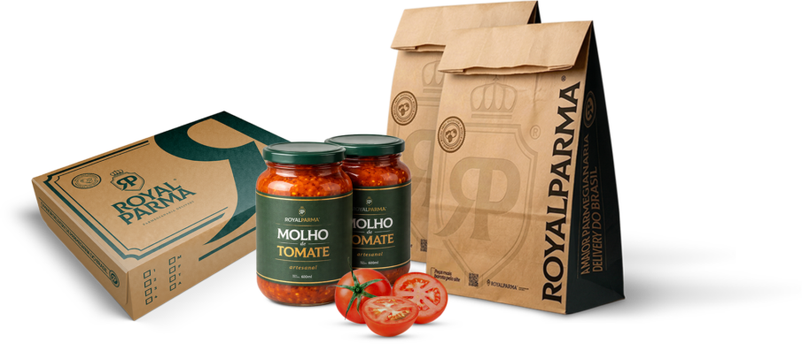
verde (uma cor). A clara, com PARMA em caramelo, só com prova aprovada.Por que funciona. O kraft com uma tinta escura tem a cara de rótulo antigo de mercearia, a mesma linguagem do brasão e da moldura. A caixa parece embalagem de cozinha, não de lanchonete.
Por que custa menos. Em embalagem, cada cor a mais costuma pedir mais uma matriz de impressão (o clichê) e mais um acerto na máquina. Com uma cor só, a preparação é menor e o verde de um lote fica igual ao do outro, em qualquer fornecedor. Peça ao fornecedor o orçamento comparado antes de mudar.
Leitura no kraft
Razões de contraste medidas na tela (seção 03). No papel pardo o Verde sai mais escuro e mais quente, e a leitura melhora um pouco; o caramelo continua sem contraste.
A peça que mais gente vê e a que mais aparece nas fotos dos clientes. Tudo nela é rótulo: a moldura dupla, o brasão, a curva do R saindo do canto e as caixinhas de marcar. A caixa atual fica; abaixo, a anatomia, a planificação e as regras para a próxima tiragem.
Deslize para ver a planificação inteira.
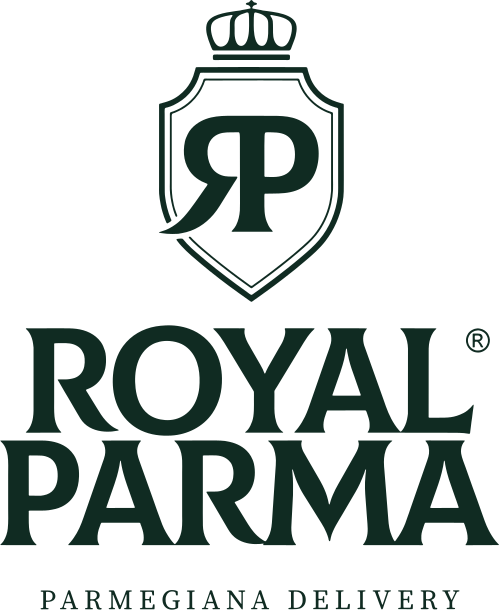
TAMPALinha cheiaCorte. A faca é do fornecedor: este desenho mostra só onde cada coisa vai.
Linha tracejadaDobra (vinco). Nenhum logotipo, nome ou selo encosta nela. A curva do R é a única que passa da tampa para a lateral.
Entre colchetesMedidas do fornecedor. Nenhuma medida da caixa foi inventada aqui: elas vêm da faca aprovada.
Regras de impressão
royal-vertical-verde.svg na tampa e royal-selo-verde.svg no selo. Nunca a oficial nem a caramelo no kraft.| Composição | Mínimo no kraft |
|---|---|
| Horizontal completa | 115 mm |
| De uma linha | 109 mm |
| Reduzida | 91 mm |
| Vertical | 42 mm |
| Selo | 13 mm |
| Brasão | 10 mm |
| Monograma RP | 5 mm |
No kraft, a maiúscula da linha de apoio não pode ficar abaixo de 1,6 mm e o RP abaixo de 3,5 mm. Se a conta não fecha, use a composição sem a linha de apoio.
O saco leva a caixa até a porta e é a primeira coisa que o cliente vê. Na frente, o brasão gigante como marca-d'água; na lateral sanfonada, um campo verde inteiro. Abaixo, o que ele tem hoje e a forma certa para a próxima tiragem.
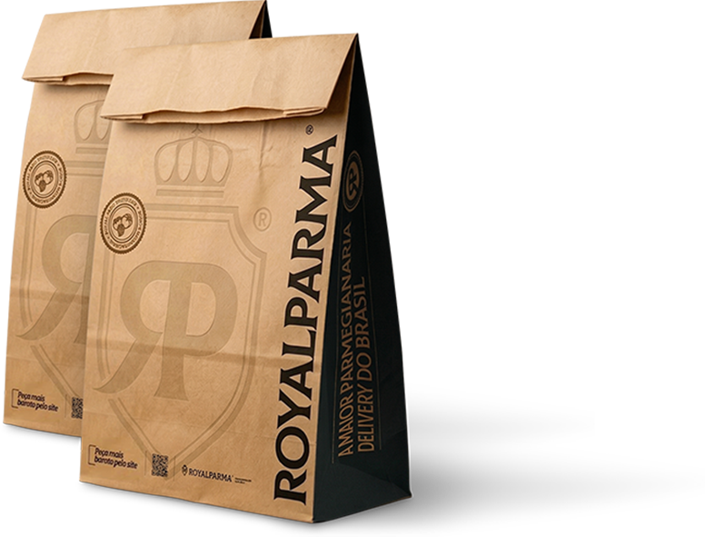
Peça de novo pelo cardápio digital da sua unidade.
royal-brasao-verde.svg, inteiro, em retícula de Verde. A porcentagem sai da prova: comece entre 10% e 15% e escolha o tom que se vê sem brigar com a chamada.Duas peças pequenas com funções diferentes. O selo redondo assina a embalagem. O lacre de segurança fecha o pedido e mostra ao cliente que ninguém abriu a caixa no caminho.
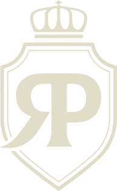
Lacrado na cozinha da Royal Parma [Cidade]
Pedido nºHora
Se o lacre chegar rompido, fale com a unidade antes de abrir: (DD) [número oficial].
O Molho de Tomate artesanal, 600 ml, é o primeiro produto da casa vendido fechado. Por ser alimento embalado longe do cliente, o rótulo tem duas partes: o painel principal, que é da marca, e o painel de informação, que é da norma da Anvisa (Agência Nacional de Vigilância Sanitária).
Rótulo envolvente, aberto. Altura e comprimento são do fornecedor do pote: [altura do rótulo] × [volta do pote mais a sobreposição da cola].
Informação nutricional
Porções por embalagem: [n] · Porção: [g] ([medida caseira])
| 100 g | [g] | %VD* | |
|---|---|---|---|
| Valor energético (kcal) | [ ] | [ ] | [ ] |
| Carboidratos totais (g) | [ ] | [ ] | [ ] |
| Açúcares totais (g) | [ ] | [ ] | |
| Açúcares adicionados (g) | [ ] | [ ] | [ ] |
| Proteínas (g) | [ ] | [ ] | [ ] |
| Gorduras totais (g) | [ ] | [ ] | [ ] |
| Gorduras saturadas (g) | [ ] | [ ] | [ ] |
| Gorduras trans (g) | [ ] | [ ] | [ ] |
| Fibras alimentares (g) | [ ] | [ ] | [ ] |
| Sódio (mg) | [ ] | [ ] | [ ] |
*Percentual de valores diários fornecidos pela porção.

Molho de tomate
artesanal
Conteúdo líquido 600 ml
Molho de tomate. Ingredientes: [lista em ordem decrescente de quantidade, igual à ficha técnica].
Alérgicos: [contém ..., se houver; se não houver, não se escreve nada]
[Não contém] glúten.
Conservação. [Antes de aberto: em local seco e fresco.] Depois de aberto, [manter em geladeira e consumir em até [n] dias].
Lote [L000] · Validade [DD/MM/AAAA]
Fabricado por [razão social] · CNPJ [nº] · [endereço completo] · Indústria Brasileira · SAC (DD) [número oficial]
| Informação | Onde fica | O que vem dentro |
|---|---|---|
| Denominação de venda | Painel principal | “Molho de tomate”, com o nome da marca ao lado. “Artesanal” é qualificativo: só com comprovação (abaixo). |
| Conteúdo líquido | Painel principal | 600 ml, ou a unidade que a regra de metrologia do Inmetro pedir para molho (grama ou mililitro: a conferir). |
| Lista de ingredientes | Painel de informação | Em ordem decrescente de quantidade, igual à ficha técnica da cozinha. |
| Alergênicos | Painel de informação, logo após os ingredientes | “ALÉRGICOS: CONTÉM ...” quando houver alimento da lista da Anvisa; “PODE CONTER ...” só com programa de controle de alergênicos. Nunca “sem alergênicos”. |
| Glúten | Painel de informação | “Contém glúten” ou “Não contém glúten”, com destaque. A mesma frase vai em todo post, cardápio e anúncio do pote. |
| Tabela nutricional | Painel de informação | Valor energético, carboidratos, açúcares totais e adicionados, proteínas, gorduras totais, saturadas e trans, fibras e sódio. |
| Lote e validade | Qualquer painel, legível | Lote da produção e data de validade, impressos ou carimbados no pote. |
| Origem e fabricante | Painel de informação | Razão social, CNPJ e endereço de quem produz e embala. |
| Conservação | Painel de informação | Antes e depois de aberto, com o prazo de consumo depois de aberto. |
O que conferir antes de imprimir
Regularização sanitária do molhoSe o produto exige registro ou é dispensado, e a licença sanitária de quem fabrica.Enquanto isso: o pote não é anunciado para venda fora da unidade.
AbertaFicha técnica e tabela nutricionalIngredientes, alergênicos, glúten e valores por análise ou cálculo de nutricionista.Enquanto isso: rótulo só com os colchetes, nunca com números de exemplo.
Aberta“Artesanal”A palavra precisa de processo que a sustente (como é feito, em que volume). Sem isso, o nome do produto fica “Molho de tomate Royal Parma”.Leitura conservadora: zona cinzenta até a comprovação.
Zona cinzentaUnidade do conteúdo e rotulagem frontalMililitro ou grama, pela regra do Inmetro; e se o molho passa dos limites que exigem a lupa frontal de açúcar adicionado, gordura saturada ou sódio (IN 75/2020).Enquanto isso: “600 ml” como no pote atual, marcado para conferência.
AbertaO ® no rótuloO símbolo só vale com o registro concedido pelo INPI (Instituto Nacional da Propriedade Industrial) na classe de alimentos.Enquanto isso: a franqueadora confirma o registro antes da tiragem.
AbertaA Anvisa abriu em 2025 uma revisão pontual da RDC 727 sobre alergênicos (fonte secundária): confira se saiu texto novo antes de cada tiragem.
Duas peças A5. O flyer em kraft, de uma cor e sem preço, vai dentro do saco e convida a pedir de novo pelo canal próprio. O cardápio no Papel, em quatro cores e com preço datado, fica no balcão e na geladeira de quem pede sempre.
Flyer do pedido · kraft
Peça de novo pelo cardápio digital.
Aponte a câmera do celular. Abre o cardápio da Royal Parma [Cidade], com preço e taxa de entrega antes de fechar.
Peça só pelos canais oficiais da sua unidade.
Cupom [CÓDIGO]
[x]% de desconto no próximo pedido pelo cardápio digital.
Válido de [data] a [data] na Royal Parma [Cidade], pelo cardápio digital. Pedido mínimo de R$ [valor]. Um uso por CPF. Não cumulativo com outras promoções.
Cardápio impresso · Papel
Parmegiana de frangoAprox. [g], serve [n]. Contém: trigo (glúten), ovo, leite.
R$ [valor]Parmegiana de mignonAprox. [g], serve [n]. Contém: trigo (glúten), ovo, leite.
R$ [valor]Parmegiana de abobrinha VegetarianoAprox. [g], serve [n]. Contém: trigo (glúten), ovo, leite.
R$ [valor]Strogonoff de frangoAprox. [g], serve [n]. Contém: leite.
R$ [valor]Spaghetti ao sugoAprox. [g], serve [n]. Contém: trigo (glúten), [outros].
R$ [valor]Risoto [sabor]Aprox. [g], serve [n]. Contém: leite, [outros].
R$ [valor]Arroz e batata chips: [inclusos no prato ou vendidos à parte]. Alergênicos conforme a ficha técnica da unidade; preparado em cozinha que manipula trigo.
Royal Parma [Cidade][endereço] · Pedidos: (DD) [número oficial]Taxa de entrega no cardápio digital, antes de fechar o pedido.
Um cartão kraft de 10 × 15 cm, em uma cor, em cima da caixa. Na frente, um obrigado de verdade, sem pedir nada. No verso, o cupom para a próxima vez, com a regra inteira no mesmo lado do desconto.
Frente · kraft
Obrigado por pedir com a gente.
Feito na cozinha da Royal Parma [Cidade], embalado na hora e lacrado para chegar como saiu.
Royal Parma [Cidade] · Delivery e retirada
Verso · kraft
Para a próxima vez
Cupom de volta
[CÓDIGO]
[x]% de desconto no próximo pedido pelo cardápio digital.
Como usar. No cardápio digital da unidade, digite o código no campo Cupom antes de pagar. O desconto aparece no total antes de você confirmar.
Válido de [data] a [data] na Royal Parma [Cidade], pelo cardápio digital. Pedido mínimo de R$ [valor]. Um uso por CPF. Não cumulativo com outras promoções.
Canais oficiais[link do cardápio] · WhatsApp (DD) [número oficial]
Volte com [x]% no próximo pedido.
Com código, validade, unidade, canal, pedido mínimo e limite por CPF no mesmo lado. O cupom vale para quem tem o cartão, sem sorte e sem disputa.
Avalie com 5 estrelas e ganhe um desconto!
Cupom que depende de avaliação, de post ou de marcar amigos troca a nota por desconto, engana quem lê as avaliações e pode ferir os termos dos aplicativos. A avaliação é pedida à parte, sem prêmio.
Cartão de visita e papel timbrado servem à franqueadora e às unidades. A assinatura de e-mail mora na seção 19, junto com os e-mails da rede.
Cartão · frente
Cartão · verso
[Nome Sobrenome]
[Cargo] · Royal Parma [Cidade]
WhatsApp (DD) [número oficial][e-mail]@[domínio][endereço] · [Cidade] ([UF])
.id-franqueadora. Da unidade: nome, razão social, CNPJ, endereço e WhatsApp oficial, numa linha só.Papel timbrado · A4
[Cidade], [data]
Royal Parma Franquias[razão social]CNPJ [nº]royalparmaoficial.com.br
Os erros que mais aparecem quando a embalagem é refeita fora da franqueadora. Se a arte se parece com algum destes quadros, ela volta para ajuste antes da prova.
Feito na hora, todo dia
Loja, fachada e uniforme
Fachada, letreiro, placa, balcão, cardápio de parede e uniforme da equipe.
A loja é a peça mais cara e a que dura mais tempo. Quem passa na rua, o entregador que vem retirar e o cliente no balcão precisam reconhecer a mesma Royal Parma em qualquer cidade.
Nas lojas Smart e Pro, a fachada é padronizada pela franqueadora: um plano Verde com a marca em letra-caixa, a abertura do balcão de retirada e o tijolo aparente nas laterais. As duas fotos abaixo, publicadas no site oficial, mostram o padrão em duas ruas diferentes.
Smart e Pro
Plano Verde, marca em letra-caixa, balcão de retirada aberto para a calçada, placa de bandeira quando a prefeitura permite. O projeto vem da franqueadora, com o arquiteto dela.
Compartilhada
Não tem fachada própria. A Royal aparece no ponto de retirada e no balcão, ao lado da marca do parceiro, sem se misturar com ela (18.6).
Imagem de projeto
Imagens de projeto (render) servem à apresentação ao investidor com a legenda “imagem ilustrativa de projeto”. Nunca como foto de uma loja que existe, nem em anúncio para quem pede.
Quem decide a versão do letreiro é o espaço. O letreiro é fabricado a partir do vetor da marca, em escala, com as proporções guardadas em assets/marca.json. Placa de horário, QR e adesivos de aplicativo têm lugar fixo, longe da marca.
[largura da fachada]
[altura]
| Espaço do letreiro | Versão | Proporção | Exemplo com 4,00 m |
|---|---|---|---|
| Testeira baixa e comprida | royal-linha-oficial | 6,92 : 1 | 58 cm de altura |
| Faixa um pouco mais alta | royal-reduzida-oficial | 5,77 : 1 | 69 cm de altura |
| Faixa alta, com a linha de apoio | royal-horizontal-oficial | 7,29 : 1 | 55 cm de altura |
| Fachada alta (padrão Smart) | royal-vertical-oficial | 0,82 : 1 | Pela altura: 2,00 m de altura pedem 1,64 m de largura |
| Placa redonda ou quadrada | Brasão, ou a vertical sem a linha de apoio | 0,61 : 1 (brasão) | Pelo diâmetro da placa |
Peça pelo cardápio digital.
Aponte a câmera para o QR.
Adesivos de aplicativo: convivência
Royal Parma Bauru
A cidade em texto, na placa de horário e no perfil da unidade, na fonte da casa.
ROYAL PARMA BAURU
A cidade no letreiro, em letra-caixa ao lado da marca, como se fosse parte do logotipo (lei V).
Três peças resolvem o balcão: o totem com o QR para quem quer pedir na hora, o quadro de pedidos prontos para cliente e entregador, e o cartaz de higiene da equipe. Todas no Papel ou no Verde, com Source Sans 3 grande.
Peça aqui pelo cardápio digital.
Peça só pelos canais oficiais da Royal Parma [Cidade].
Pedidos prontos
Entregador: aguarde a chamada pelo número do pedido.
Antes de começar
Regras de boas práticas da vigilância sanitária da sua cidade.
A equipe da rede já trabalha de camiseta verde. O padrão fixa a cor, o lugar da marca e o que fica de fora, para a foto de uma unidade parecer a de qualquer outra.
| Peça | Padrão | Onde |
|---|---|---|
| Camiseta | Verde Royal, lisa. Brasão oficial no peito esquerdo (bordado ou silk, com 10 mm de largura ou mais). Nas costas, a assinatura de uma linha em creme, opcional. | Toda a equipe |
| Avental | Verde ou cru (lona natural), com o brasão em uma cor no peito. | Cozinha e balcão |
| Touca ou rede | Lisa, sem marca. Cabelo preso e coberto na manipulação de alimentos. | Cozinha |
| Boné | Verde com o brasão bordado. Nunca no lugar da touca na cozinha. | Balcão e entrega |
| Crachá | Papel, nome da pessoa em Source Sans 3 e “Royal Parma [Cidade]”. | Balcão |
Camiseta Verde lisa com o brasão; nome da pessoa no crachá; uniforme limpo e passado nas fotos; a cor da camiseta conferida com a amostra da caixa antes de comprar o lote.
Frase de superlativo na camiseta; outra cor de camiseta por unidade; a cidade desenhada como logotipo; logotipo de aplicativo ou fornecedor sem contrato; bandeira da Itália, chef de bigode ou outro clichê; uniforme sujo em foto ou vídeo.
Só para a unidade que tem entrega própria. Entregador de aplicativo usa a bag dele, e a Royal não cola adesivo nela.
No modelo Compartilhado, a Royal Parma opera dentro de um restaurante que já existe. As duas marcas convivem, cada uma inteira: o cliente precisa saber de quem está pedindo, e o entregador, onde retirar.
Marca do restaurante parceiro
Duas placas separadas, com espaço entre elas. A Royal no ponto de retirada dela, com a placa “Retirada Royal Parma” e o QR do cardápio da unidade.
Uma placa só, com as duas marcas fundidas, “by”, “apresenta”, a cor de uma na marca da outra ou o brasão dentro do logotipo do parceiro.
Antes de abrir as portas e de ligar a unidade nos aplicativos. Marque item por item; o que ficar sem marca volta para a franqueadora antes da inauguração.
Loja
Equipe, embalagem e digital
Franquia, site e e-mail
A página de franquia, a apresentação ao investidor, o formulário e o e-mail, com número só da COF.
Quem visita a página de franquia está pensando em pôr o próprio dinheiro numa Royal Parma. Ele merece informação concreta, com fonte, e nenhuma promessa de renda.
Uma página longa, em ordem de decisão: primeiro quem é a Royal, depois como é a loja, quanto custa abrir e como funciona o caminho até o contrato. Topo Verde, miolo no Papel, rodapé Floresta.
A voz de quem investe. Concreta, numérica com fonte, sem pressa. A página não vende sonho de renda: mostra a operação como ela é, quanto custa abrir, o que a franqueadora faz e o que fica com o franqueado.
O que a página já tem e fica. “Simples, guiado e com um time ao seu lado em cada etapa.” e “Pode variar conforme praça, operação e execução.”, frases públicas do site de franquias (30/09/2026), são o tom certo.
Uma operação de delivery com o suporte da franqueadora em cada etapa.
Diz o que é e o que a rede entrega.
Renda garantida com um negócio que roda sozinho!
Promessa de renda e de operação sem trabalho: falsa e vedada (seção 08.6).
O topo tem um trabalho só: dizer o que é a oportunidade e levar ao formulário. Verde, foto real de loja, uma palavra de molho no título e um botão.
Royal Parma Franquias
Uma receita de família, pronta para a sua cidade.
Parmegianaria de delivery e retirada, com três modelos de loja e suporte da franqueadora da implantação à operação.
A Circular de Oferta de Franquia é entregue pelo menos 10 dias antes de qualquer contrato ou pagamento.
Royal Parma Franquias
Uma receita de família, pronta para a sua cidade.
Parmegianaria de delivery e retirada, com três modelos de loja e suporte em cada etapa.
Quero receber a apresentaçãoOs blocos abaixo são o miolo da página, já montados com os componentes da casa. Todo número aparece como “[conforme COF]” até a franqueadora preencher com o da Circular vigente, e cada número tem o aviso ao investidor ao lado.
Bloco · os modelos de loja
Loja Compartilhada
A operação da Royal Parma acoplada à cozinha e ao balcão de um restaurante parceiro.
Valores estimados. Podem variar conforme praça, operação e execução. Informações completas na Circular de Oferta de Franquia (COF).
Loja Smart
Fachada padrão, cozinha dedicada e retirada no balcão.
Valores estimados. Podem variar conforme praça, operação e execução. Informações completas na Circular de Oferta de Franquia (COF).
Loja Pro
Fachada padrão e cozinha com mais capacidade de produção.
Valores estimados. Podem variar conforme praça, operação e execução. Informações completas na Circular de Oferta de Franquia (COF).
“Investimento total estimado” é o total do art. 2º, VIII, a, da Lei 13.966/2019: taxa de franquia, instalação, equipamentos e estoque inicial. O que fica de fora (ponto comercial, reforma, capital de giro) é dito no mesmo cartão.
Bloco · a história real
Toda grande marca começa com um sonho, o meu começou em família.
Em 2009, o primeiro restaurante da família, em Pouso Alegre (MG). Em 2020, o delivery feito dentro de casa. Em 2021, a primeira loja no padrão de franquia, só delivery e retirada. As datas são as que a marca publica; o tamanho atual da rede entra com a data e a fonte da franqueadora (pendência 4).
Bloco · franqueados
[Frase real do franqueado sobre a experiência dele, sem valor de venda ou de ganho.]
Bloco · como abrir
Bloco · perguntas frequentes
O investimento total estimado de cada modelo está na Circular de Oferta de Franquia vigente: R$ [conforme COF]. Valores estimados, que podem variar conforme praça, operação e execução.
[Resposta da franqueadora, conforme o perfil de franqueado da COF.] A operação exige gestão próxima do franqueado, com o suporte da rede.
Suporte de engenharia de alimentos, consultoria financeira, marketing, vendas, operação nos aplicativos de entrega, projeto arquitetônico, plataforma de treinamento e encontros periódicos, conforme a COF.
A COF traz o prazo estimado com a base usada (quantas unidades, que período, que modelo): [conforme COF]. Resultados passados não garantem resultados futuros; dependem de praça, gestão e capital.
Investimento total estimado a partir de R$ [conforme COF].
Com o que está incluído e o que não está, e o aviso ao investidor ao lado.
Retorno garantido em 12 meses na maior rede do Brasil!
Promessa de retorno, superlativo sem prova e número que não bate com a COF. Vedado (seção 08.6).
Royal Parma Franquias[razão social]CNPJ [nº]royalparmaoficial.com.br
Aviso de privacidade · Termos de uso · Peça só pelos canais oficiais da sua unidade.
Rodapé da página: o bloco .id-franqueadora, obrigatório em site próprio (nome empresarial e CNPJ em local de destaque, Decreto 7.962/2013, art. 2º, I).
O formulário pede só o que a expansão precisa para responder. A Lei Geral de Proteção de Dados (LGPD, Lei 13.709/2018) pede finalidade clara, dado mínimo e consentimento separado para marketing.
| Regra | Por quê |
|---|---|
| Faixas por extenso | “R$ [valor] mil a R$ [valor] mil”, nunca “155K”. Mesmo valor da COF. |
| Marketing em caixa própria | Desmarcada, com finalidade escrita. Autorização genérica é nula (LGPD, art. 8º, § 4º). |
| Sair é fácil | Descadastro gratuito e simples em toda mensagem (art. 8º, § 5º). |
| Dado mínimo | Sem CPF, renda ou extrato no primeiro contato (art. 6º, III). |
| Erro com texto | Ícone, borda e frase que diz como corrigir. Nunca só a cor. |
A apresentação que o formulário promete sai do deck-template.html, em 1440 × 900, com os tipos de slide da casa. Dez lâminas, nesta ordem; o número sempre com a fonte na própria lâmina.
Se a unidade tiver página própria (ou página dentro do site da rede), ela é curta: topo Verde com o botão do cardápio digital, os pratos com preço e condição, os canais oficiais e o bloco da unidade.
Royal Parma [Cidade]
Delivery e retirada · [bairro]
Peça pelo cardápio digitalPreços de [data] no cardápio digital. Taxa de entrega antes de fechar o pedido.
Royal Parma [Cidade][razão social] · CNPJ [nº][endereço] · Pedidos: (DD) [número oficial]
.id-unidade completo.Quando alguém manda o link do site ou do cardápio, o WhatsApp e as redes montam uma prévia com imagem, título e descrição (o protocolo que elas leem se chama Open Graph). A aba do navegador mostra o favicon.
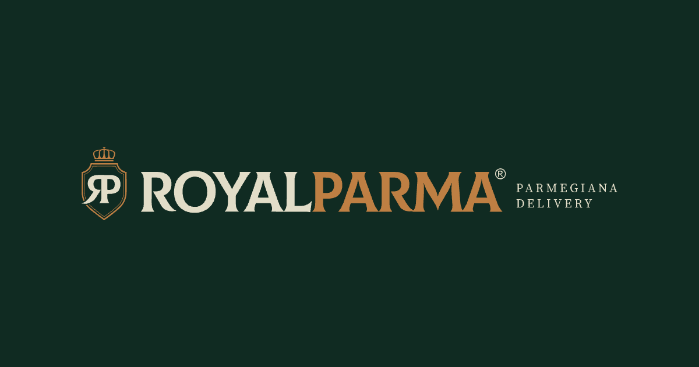
royal-favicon.svg e os PNG de 32, 180 e 512 px. Abaixo de 22 px, o simplificado.<link rel="icon" href="/royal-favicon.svg" type="image/svg+xml">
<link rel="icon" href="/royal-favicon-32.png" sizes="32x32">
<link rel="apple-touch-icon" href="/royal-favicon-180.png">
<!-- Open Graph -->
property="og:title" Royal Parma [Cidade] | Delivery e retirada
property="og:description" Parmegiana de frango, mignon e abobrinha. Peça pelo cardápio digital.
property="og:image" https://[domínio]/royal-compartilhamento-1200x630.pngE-mail é uma tabela de até 600 px, porque é assim que o Gmail e o Outlook mostram do mesmo jeito. Fonte de sistema (Arial), marca em PNG com texto alternativo, nenhum texto dentro de imagem.
Recebemos o seu interesse.
Olá, [Nome]. Obrigado por querer conhecer a Royal Parma. A apresentação dos modelos de loja está no botão abaixo.
Nos próximos [n] dias úteis, alguém da expansão fala com você pelo WhatsApp. Antes de qualquer contrato ou pagamento, você recebe a Circular de Oferta de Franquia, com pelo menos 10 dias para ler.
Ver a apresentaçãoValores estimados. Podem variar conforme praça, operação e execução. Informações completas na Circular de Oferta de Franquia (COF).
Royal Parma Franquias[razão social]CNPJ [nº]
Você recebeu este e-mail porque preencheu o formulário. Não quero mais receber.
Pedido nº [nº]
Seu pedido foi confirmado.
Previsão estimada: [hh:mm]. Se algo mudar, a Royal Parma [Cidade] avisa pelo WhatsApp oficial.
Royal Parma [Cidade][razão social] · CNPJ [nº]Pedidos: (DD) [número oficial]
[Nome Sobrenome]
[Cargo] · Royal Parma Franquias
WhatsApp (DD) [número oficial] · royalparmaoficial.com.br
[razão social]CNPJ [nº]
Código HTML · assinatura de e-mail
<!-- Assinatura de e-mail · Royal Parma · Rótulo Real v1
Troque tudo que está entre colchetes. Largura máxima: 600 px. -->
<table role="presentation" width="600" cellpadding="0" cellspacing="0" border="0"
style="width:100%;max-width:600px;border-collapse:collapse;">
<tr><td style="padding:0 0 14px 0;">
<img src="https://[domínio]/royal-reduzida-oficial-fundo.png"
width="200" height="58" alt="Royal Parma"
style="display:block;width:200px;height:58px;border:0;">
</td></tr>
<tr><td style="font-family:Arial,Helvetica,sans-serif;font-size:14px;
line-height:21px;color:#102B22;">
<b>[Nome Sobrenome]</b><br>[Cargo] · Royal Parma Franquias
</td></tr>
<tr><td style="padding:8px 0 0 0;font-family:Arial,Helvetica,sans-serif;
font-size:13px;line-height:20px;color:#38433C;">
WhatsApp (DD) [número oficial] ·
<a href="https://royalparmaoficial.com.br" style="color:#835020;">royalparmaoficial.com.br</a>
</td></tr>
<tr><td style="padding:12px 0 0 0;border-top:1px solid #DDD6C1;
font-family:Arial,Helvetica,sans-serif;font-size:12px;line-height:18px;color:#535E56;">
Royal Parma Franquias · [razão social] · CNPJ [nº]
</td></tr>
</table>royal-reduzida-oficial-fundo.png a partir da reduzida oficial sobre o Verde, com 400 px de largura (o dobro do tamanho de uso, para telas de alta definição), e publique no site antes de usar.Buscadores e assistentes de inteligência artificial leem o título, a descrição e os dados estruturados (um bloco de código que descreve o restaurante em formato que a máquina entende). Tudo ali é fato verificável: endereço, horário, cardápio, telefone. Nada de nota inventada.
Dados estruturados · página da unidade
<script type="application/ld+json">
{
"@context": "https://schema.org",
"@type": "Restaurant",
"name": "Royal Parma [Cidade]",
"brand": { "@type": "Brand", "name": "Royal Parma" },
"servesCuisine": "Parmegiana",
"url": "https://[domínio]/[cidade]",
"menu": "[link do cardápio digital]",
"telephone": "+55 [DD] [número oficial]",
"address": {
"@type": "PostalAddress",
"streetAddress": "[endereço]",
"addressLocality": "[Cidade]",
"addressRegion": "[UF]",
"addressCountry": "BR"
},
"openingHours": "[Mo-Su hh:mm-hh:mm]",
"image": "https://[domínio]/royal-compartilhamento-1200x630.png"
}
</script>Sem aggregateRating: nota só entra com avaliações reais na própria página. A franqueadora usa o tipo Organization, com nome empresarial e site.
Grade, espaço e celular
A grade do documento e das peças, a escala de espaço, as áreas seguras do story e as regras de leitura no celular.
Doze colunas de 78 px com espaço de 24 px, em até 1200 px de conteúdo. Dois eixos verticais organizam tudo: o eixo A, no começo da coluna 6, e o eixo B, no começo da coluna 8. Este manual, o site de franquias, o cardápio digital no computador e os documentos longos usam a mesma grade.
Deslize para ver a grade inteira
Cotas no conteúdo de 1200 px: cada coluna mede 78, cada espaço 24. Uma combinação de n colunas mede 78 × n mais 24 por espaço entre elas. O eixo A fica a 510 px da borda do conteúdo; o eixo B, a 714.
| Combinação | Classe | Onde usar |
|---|---|---|
| 12 colunas | grade-12 | Tabela, gráfico largo, faixa de outro campo, galeria de peças |
| 7 + 5 | cols-7-5 | Foto e texto, peça e ficha: a segunda coluna começa no eixo B |
| 5 + 7 | cols-5-7 | Cabeçalho de seção e de bloco: o apoio começa no eixo A |
| 8 + 4 | cols-8-4 | Conteúdo principal com lista, selo ou ficha ao lado |
| 6 + 6 | cols-6-6 · cols-2 | Assim e Não assim, antes e depois, dois campos |
| 4 + 4 + 4 | cols-3 | Três cartões, três peças, três modelos de loja |
| 3 × 4 | cols-4 | Quatro números grandes, quatro miniaturas |
A grade por cima da página
Uma demonstração montada com as classes reais. Ligue o botão “Mostrar grade” no canto da tela: o título do bloco fica nas colunas 1 a 5, o apoio começa no eixo A e a foto começa no eixo B. O mesmo botão liga as grades das peças (20.2 e 20.3).
Título do bloco
O apoio do bloco começa no eixo A, na coluna 6, e para em cerca de 60 caracteres por linha.
Colunas 1 a 7
Texto, cardápio, formulário
Eixo B · coluna 8 até o fim
Foto do prato, ficha, olho
| Largura da tela | Margem lateral | O que a grade faz |
|---|---|---|
| Acima de 1280 px | 64 px | 12 colunas; o conteúdo para em 1200 px e centraliza |
| 1025 a 1280 px | 48 px | 12 colunas, que encolhem com a tela |
| 641 a 1024 px | 32 px | Grades de 3 a 6 colunas viram 2; as assimétricas empilham |
| 381 a 640 px | 20 px | Uma coluna; tabela de consulta vira cartões |
| 320 a 380 px | 16 px | Uma coluna, com o respiro mínimo |
--wrap)--leitura)Toda peça de rede social nasce com 1080 px de largura, margem de 72 nos quatro lados e seis colunas de 136 com espaço de 24. O fólio com o filete duplo fica no alto; a assinatura, embaixo à esquerda. É a moldura da caixa transformada em régua.
| Formato | Tamanho | Margem e colunas | Área livre |
|---|---|---|---|
| Post retrato 4:5 (feed e carrossel) | 1080 × 1350 | 72 · 6 colunas de 136 · espaço 24 | 936 × 1206 |
| Post 3:4 (capa na grade do perfil) | 1080 × 1440 | 72 · 6 colunas de 136 · espaço 24 | 936 × 1296 |
| Post quadrado | 1080 × 1080 | 72 · 6 colunas; nada essencial fora do recorte 3:4 (135 de cada lado) | 936 × 936 |
| Story orgânico e destaque | 1080 × 1920 | 72 nas laterais · 250 em cima e embaixo | 936 × 1420 |
| Reels e story patrocinado | 1080 × 1920 | 65 nas laterais · 14% em cima (269) · 35% embaixo (672) | 950 × 979 |
| Cardápio e página A4 | 794 × 1123 | 72 (19 mm) · 12 colunas · espaço 16 | 650 × 979 |
| Site no celular, cardápio digital | 390 de largura | 20 · 4 colunas · espaço 12 | 350 de largura |
Feita na hora
Parmegiana gratinada na hora do pedido.
Empanada, coberta de molho e queijo, e fechada na caixa da casa.
ArrasteO aplicativo cobre parte da peça com a barra de progresso, o nome do perfil, a legenda e os botões. No story orgânico, 250 px em cima e 250 embaixo ficam livres de qualquer informação; os 1420 do meio são da peça. No reels e no anúncio, a conta é outra.
Cupom da semana
Seu pedido com desconto no cardápio digital.
Cupom [CÓDIGO]
[Valor ou percentual] em pedidos a partir de R$ [valor]. Válido de [data] a [data] na Royal Parma [Cidade], pelo cardápio digital. 1 uso por CPF. Não cumulativo.
o queijo puxando
Royal Parma [Cidade]Delivery
Na grade do perfil, o Instagram mostra cada post num recorte 3:4. O post 4:5 perde cerca de 34 px de cada lado, dentro da margem de 72: nada se perde. O quadrado perde 135 de cada lado, mais que a margem; por isso o 4:5 é o formato da casa e o quadrado fica para reposição de conteúdo antigo.
Dez medidas, todas múltiplas de 4, de 4 a 128 px. A barra está no tamanho real da tela. Todo espaço entre componentes, blocos e seções sai destes degraus; um espaço “no olho” é sinal de que falta escolher o degrau.
gap-g)pc-mt-16 a pc-mt-96). A margem de 72 é o único degrau que não muda.--e-1:4px; --e-2:8px; --e-3:12px;
--e-4:16px; --e-5:24px; --e-6:32px;
--e-7:48px; --e-8:64px; --e-9:96px;
--e-10:128px;A peça é criada com 1080 px e aparece no feed com a largura do celular: 390 dividido por 1080 dá 36%. As duas peças abaixo têm o mesmo assunto e estão do tamanho que têm no feed de um celular de 390 px. Só uma se lê.
Parmegiana para dividir.
Serve 2 pessoas. Peça pelo cardápio digital da unidade.
ArrasteChegou a parmegiana para dividir com a família toda no fim de semana, com arroz, batata e molho da casa
Escolha frango, mignon ou abobrinha. Acompanha arroz e batata chips. Molho de tomate da casa em cima e queijo gratinado na hora.
Peça pelo cardápio digital, pelo WhatsApp da unidade ou pelos aplicativos. Delivery e retirada no balcão.
Horário: [dias] das [hora] às [hora]
Título de 104 px em duas linhas, uma chamada de 36 px e margem de 72. No feed, o título fica com 37,6 px, a chamada com 13 px e a margem com 26: o olho sabe por onde começar, e a palavra de molho aparece.
Subtítulo de 56 px com 20 palavras, três parágrafos de 28 e margem de 40. No feed, o texto vira 10 px e a margem, 14. Nenhum texto ficou abaixo do piso de 26: a peça reprova porque tenta dizer tudo de uma vez (lei II: se falta espaço, corta-se texto) e porque usa a assinatura completa com 380, quando o post pede a reduzida.
Cada linha aparece aqui do tamanho que terá na tela de um celular de 390 px. O celular fica mais perto dos olhos, e a medida em pixel de tela já leva isso em conta: o que você lê daqui é, em tamanho aparente, o que o cliente lê de lá.
Título104 px na peça → 37,6 px no celular
Parmegiana para dividir.
Subtítulo56 px → 20,2 px
Serve 2 pessoas.
Chamada36 px → 13 px
Peça pelo cardápio digital da unidade.
Texto32 px → 11,6 px
Acompanha arroz e batata chips. Molho de tomate da casa.
Condição e bloco da unidade · o piso26 px → 9,4 px
Válido de [data] a [data] na Royal Parma [Cidade], pelo cardápio digital.
Abaixo do piso20 px → 7,2 px · ilegível
Peça: post, story, reels, capa do iFood
Página: site de franquias, cardápio digital, este manual
Oito olhadas, com a peça aberta no celular. Um item sem marcar devolve a peça para ajuste. A lista completa de aprovação está na seção 24.
// cole no console, em 320 e em 390 px
// 1. a página não pode ser mais larga
// que a tela
document.documentElement.scrollWidth
<= innerWidth
// 2. nenhuma peça com texto cortado
[...document.querySelectorAll('.peca')]
.filter(p =>
p.scrollHeight > p.clientHeight + 1)
.length === 0Canva, ferramentas e kit da unidade
O kit da unidade no Canva, as trocas de fonte quando faltar, exportação em PDF e PNG e o envio para a gráfica.
Cinco ferramentas fazem quase tudo na rede. Cada uma tem um papel no sistema e um limite: o Canva monta a peça, mas não decide a regra; a gráfica imprime, mas não escolhe a cor. A regra vem deste manual.
Onde vivem os modelos da rede: post, story, carrossel, capa de reels, destaque, flyer e cardápio. A unidade duplica o modelo e troca só os campos liberados (21.3).
Não fazLogotipo novo, cor nova, fonte nova.
Como o CapCut: corta o reels, põe a legenda de uma a três palavras (16) e a tarja da unidade. Exporta em 1080 × 1920.
Não fazFiltro que muda a cor do prato, efeito de queijo, música sem licença.
Programa post e story no dia e na hora, com a legenda já revisada. Guarda o calendário do mês da unidade.
Não fazPublicar peça que ainda não passou pelo 24.2.
Textos longos, roteiro de vídeo, apresentação para a equipe e para o candidato a franqueado, com as fontes da casa.
Não fazApresentação ao investidor fora do modelo da rede e da COF.
Caixa, saco, lacre, adesivo, flyer, cardápio, uniforme e fachada, sempre a partir do PDF fechado pela franqueadora.
Não fazAjustar a cor “no olho”: o verde e o caramelo saem da prova aprovada.
O kit de marca (no Canva, Marca › Kit de marca) guarda as cores, as fontes e os logotipos. Quem monta é a franqueadora, uma vez, numa conta de equipe; a unidade usa o que está lá e não sobe arquivo próprio.
| Cor | HEX | No Canva, para |
|---|---|---|
| Verde Royal | #102B22 | Fundo principal, título e texto no claro |
| Floresta | #0B1D17 | Rodapé e sombra de leitura sobre foto |
| Mata | #173A2D | Painel sobre o Verde, a curva do R |
| Caramelo Royal | #BE7F43 | A palavra de molho e o botão, só sobre o Verde |
| Mel | #DDA867 | Rótulo pequeno sobre o Verde |
| Canela | #835020 | A palavra de molho no Papel e no Creme |
| Creme Royal | #E2DDC8 | Texto sobre o Verde, faixa clara |
| Papel | #FAF8F2 | Fundo de leitura: miolo, cardápio |
| Kraft | #C9A67E | Flyer do pedido e cartão, só com texto Verde |
Oliva (#526243) e Tomate (#B23A26) ficam fora do kit da unidade: são cor de gráfico e de alerta, não de peça. A ordem acima é a ordem da paleta no Canva.
| Papel | No Canva |
|---|---|
| Título, preço, número | Gloock. Não a encontramos na biblioteca do Canva em 30/09/2026: a franqueadora sobe o arquivo (licença aberta, Google Fonts) no kit de marca. Sem o arquivo, use DM Serif Display. |
| A palavra de molho | Playfair Display, itálico 600. Existe no Canva. |
| Texto, rótulo, condição | Source Sans 3. No Canva aparece como Source Sans Pro, a versão anterior da mesma família: use essa. |
Sempre o PNG cheio da pasta assets/ (o de 2300 px), nunca o -web e nunca um print. Sete arquivos cobrem todas as peças da unidade.
As formas da casa (moldura, selo com texto, curva do R, caixinhas) saem em SVG pelo motor rforms.js, com as medidas da peça de 1080, e entram no Canva como elemento. A franqueadora sobe uma vez; a unidade só usa.
Sete modelos, mantidos pela franqueadora numa pasta compartilhada. A unidade duplica, troca o que é local (foto, cidade, horário, canais, condição) e manda para aprovação. Cor, fonte, marca, margem e posição ficam travadas: é assim que cada cidade parece parte da mesma rede (lei V).
Parmegiana de frango.
Pedidos: (DD) [número oficial]
Cupom
Seu pedido com desconto.
[CÓDIGO]
[Condição]. Válido de [data] a [data] na Royal Parma [Cidade], pelo [canal]. Não cumulativo.
02
Escolha a proteína.
O pedido chegou.

Obrigado pelo pedido.
No próximo, peça direto pelo cardápio digital da unidade.
Royal Parma [Cidade](DD) [número oficial]
Parmegianas
Parmegiana de frangoR$ [valor]
Parmegiana de mignonR$ [valor]
Parmegiana de abobrinhaR$ [valor]
Contém: [alergênicos do prato]. [Peso] por porção.
| Campo do modelo | A unidade troca | Fica travado |
|---|---|---|
| Foto | A foto real do prato da unidade, tirada pelo 09.3 | Recorte, posição, sombra de leitura; nada de filtro ou foto de banco |
| Cidade | “Royal Parma [Cidade]” no fólio e no bloco da unidade | A marca em arquivo; a cidade nunca vira logotipo |
| Horário e endereço | Dias, horas, bairro, retirada | Fonte, corpo (26 no mínimo) e posição |
| Canais | Link do cardápio digital, WhatsApp oficial, @ da unidade | A ordem do selo de canais e a frase “Peça só pelos canais oficiais da sua unidade” |
| Condição | Código, valor, pedido mínimo, datas, canal, limite | A presença da condição: ela não sai da peça |
| Título | Nome do prato ou a ocasião, nos modelos que liberam | Gloock, uma palavra de molho, até três linhas |
| Cor, margem, marca, moldura, selo | Nada | Tudo |
Este manual e os documentos da skill abrem no navegador. Para mandar por e-mail ou WhatsApp, há dois caminhos: o PDF e o arquivo HTML que abre sozinho, sem internet.
PDF pelo Chrome
# na pasta do manual
python3 exportar_pdf.py
# ou outro arquivo da skill
python3 exportar_pdf.py lockup.htmlHTML que abre sozinho
python3 autocontido.py. Ele cola os motores, as imagens e as fontes dentro de um arquivo só.dist/dist/brand-book-royal-parma.html abre no celular, no e-mail e no Drive, sem a pasta assets/.file:/// só abre no seu computador.Um nome que diz o que é, de onde é e de quando é evita publicar a versão errada. Minúsculas, sem acento, palavras separadas por hífen e a data no formato ano, mês e dia, que ordena sozinha.
royal-<cidade>-<peça>-<aaaa-mm-dd>[-v2].png
| Assim | Não assim |
|---|---|
royal-bauru-post-prato-2026-10-03.png | Post Final FINAL (2).png |
royal-bauru-story-cupom-2026-10-03-v2.png | story cupom NOVO.png |
royal-rede-flyer-pedido-2026-10-01.pdf | flyer_gráfica_ok.pdf |
royal-rede-cardapio-a4-2026-10-01.pdf | Cardápio Royal.pdf |
Peça da franqueadora para toda a rede leva rede no lugar da cidade. Exemplos de cidade e data são ilustrativos.
Pastas da unidade
royal-<cidade>/
01-modelos/ cópias do kit (21.3)
02-fotos/ fotos da unidade, por mês
03-publicadas/ aaaa-mm/ peça + captura
04-impressos/ PDF enviado à gráfica
05-autorizacoes/ uso de imagem (pendência 9)03-publicadas/, cada peça fica ao lado da captura do teste do celular e da mensagem de aprovação: é o histórico se alguém perguntar por que a peça saiu assim.O banco oficial de fotos ainda não existe (pendência 10): uma sessão por prato, com a porção real, na embalagem da rede. Até lá, cada unidade fotografa os próprios pratos pelas regras da seção 09 e guarda tudo na pasta 02-fotos/.
05-autorizacoes/. Cliente, equipe e franqueado (pendência 9).Migração
As trocas da identidade anterior para o Rótulo Real: cores, fontes, bios, fotos e frases, com a ordem de troca.
O Rótulo Real não começa do zero: ele arruma o que a rede já usa. Cada linha mostra o que sai e o que entra no lugar. Nenhuma troca acusa ninguém; todas seguem uma regra do manual, indicada ao lado.
Cor, fonte e marca
royal-* da pasta assets/ (01)Texto, foto e promessa
Primeiro o que é de graça e todo mundo vê; por último o que custa e só muda quando já ia mudar. Nenhuma caixa em estoque vai para o lixo e nenhuma fachada é reformada só por causa deste manual.
Nome “Royal Parma [Cidade] | Delivery”, o avatar único, bio sem superlativo e sem troféu, capas de destaque do kit (21.3), link do cardápio digital da unidade.
A franqueadora monta o kit de marca e os sete modelos; as unidades passam a duplicar daí. Post antigo não é apagado (22.4).
Capa e fotos do aplicativo (15.2), perfil do WhatsApp, mensagens prontas e o selo de canais oficiais.
Fontes, cores, números da COF com aviso, formulário com aviso de privacidade. O site oficial de franquias e a página de licenciamento passam a dizer a mesma coisa (pendência 5).
Caixa, saco, lacre, adesivo, flyer e cardápio impresso entram no novo arquivo quando o estoque atual acabar, com prova de gráfica (pendência 16).
Loja nova já abre no Rótulo Real (18.2). Loja existente troca na reforma ou quando a peça precisar ser refeita.
O cliente não precisa reaprender a reconhecer a Royal. Tudo o que ele já associa à marca continua: o sistema só deixa mais firme o que era intuitivo.
Tradição no sabor faz história!
Exemplos refeitos do zero, com texto genérico, para mostrar a troca. Não são prints de unidade nem cópia de post real: nenhuma unidade é exposta aqui.
Antes
A melhor parmegiana do Brasil
MAIS BARATO QUE NO APLICATIVO!
Peça já!!!
Depois
Peça pelo nosso cardápio digital.
No cardápio digital: R$ [valor]. No aplicativo: R$ [valor]. Preços de [data] na Royal Parma [Cidade].
Antes
royalparma[cidade]
A MELHOR PARMEGIANARIA DELIVERY DO BRASIL [troféu]
[emoji] [emoji] [emoji] Peça já [emoji]
[emoji] Seja um licenciado
Depois
Royal Parma [Cidade] | Delivery
Parmegiana feita na hora, do jeito de casa 🍽️
Delivery e retirada · [bairro]
[dias] das [hora] às [hora]
Peça pelo cardápio digital 👇
Pendências com a Royal Parma
As decisões que travam uma parte do manual, com a versão permitida enquanto elas não chegam.
Dezoito decisões que só a Royal Parma pode tomar. Nenhuma impede o uso do manual: cada uma tem uma versão permitida, com o dado entre colchetes ou o superlativo fora. Quando uma pendência fecha, a regra é atualizada e o colchete vira o dado.
| Pendência | Tema | Fica travado |
|---|---|---|
| 01 · Arquivos originais do logotipo | Marca e arquivos | Troca definitiva dos arquivos; peças de grande formato e gravação. |
| 02 · Uma linha de apoio só | Marca e arquivos | Arquivos com a linha, próximo lote de caixas, avatares. |
| 03 · Prova do superlativo | Números e promessas | Qualquer “a maior”, “nº 1”, “líder” em peça, bio ou site. |
| 04 · Números oficiais da rede | Números e promessas | Número de lojas, estados e cidades em post, site, deck e anúncio de franquia. |
| 05 · Franquia ou licenciamento | Jurídico e franquia | Texto do site de franquias, da página de licenciamento e dos anúncios ao investidor. |
| 06 · Números ao investidor iguais à COF | Jurídico e franquia | Qualquer número de investimento, retorno ou faturamento em peça. |
| 07 · Razão social e CNPJ | Jurídico e franquia | Bloco da franqueadora completo. |
| 08 · Licença da Colus e decisão de saída | Marca e arquivos | Atualização do site de franquias. |
| 09 · Autorização de imagem e imagens de IA | Fotos e imagem | Fotos de equipe, depoimento, repost de cliente, foto de franqueado. |
| 10 · Sessão de fotos e banco oficial | Fotos e imagem | Modelos de prato com foto oficial; capa e fotos do iFood padronizadas. |
| 11 · Alergênicos e informação nutricional | Produto | Linha de alergênicos em cardápio, post de prato e rótulo do molho. |
| 12 · Regras de promoção | Números e promessas | Modelos de promoção nacional e qualquer mecânica com sorte ou disputa. |
| 13 · Preço entre canais | Números e promessas | “Mais barato no cardápio digital” e qualquer comparação com aplicativo. |
| 14 · Lista oficial de unidades e perfis | Canais | Selo de canais oficiais completo; padrão de @ na bio e nos modelos. |
| 15 · Perfil nacional da marca | Canais | Campanha nacional para o consumidor, link nacional na bio. |
| 16 · Cor de impressão e prova de gráfica | Marca e arquivos | Embalagem, fachada, uniforme e qualquer impresso na cor final. |
| 17 · Bebida alcoólica | Produto | Modelos de combo com bebida e peças com cerveja ou vinho. |
| 18 · Registro da marca no INPI (uso do ®) | Marca e arquivos | Uso do ® ou de “marca registrada” em texto, rótulo e anúncio de franquia. |
O desenho, a linha de apoio, a fonte antiga e a cor impressa.
royal-*, com o rótulo “reconstrução vetorial · aguarda o arquivo original”. Quando o original chegar, troca-se com o mesmo nome.Tudo o que a peça afirma: superlativo, tamanho da rede, promoção e preço.
O que o candidato a franqueado lê e assina.
Quem aparece e como o prato é mostrado.
O que vai no cardápio e no rótulo.
Onde o cliente encontra a unidade de verdade.
Uma decisão só vale quando está escrita e com data. Conversa de corredor não muda o manual.
[N] ou [razão social].Checklist de aprovação
A lista de conferência de toda peça da rede, para a unidade e para a franqueadora.
29 itens em dez grupos, para a franqueadora conferir qualquer peça da rede. Um item sem marcar devolve a peça para ajuste. O número ao lado leva à regra. Na tela, as marcações ficam guardadas neste navegador; impresso, vale a folha do 24.6.
A versão curta, para o franqueado e a equipe da unidade. Dez perguntas antes de mandar a peça para aprovação. Se todas forem “sim”, mande junto com a captura do celular; se uma for “não”, ajuste antes.
0 de 10
Com dez de dez, a peça pode ir para aprovação.
Para tudo o que fala com quem investe: site de franquias, anúncio de expansão, apresentação, e-mail e WhatsApp da expansão. Vale junto com o checklist geral. Leitura conservadora da Lei de Franquias (Lei 13.966/2019), do Código de Defesa do Consumidor e do CONAR; não substitui o jurídico.
Valores estimados. Podem variar conforme praça, operação e execução. Informações completas na Circular de Oferta de Franquia (COF).
Caixa, saco, lacre, adesivo, pote de molho, flyer, cardápio, fachada e uniforme. Impressão não se desfaz: confira antes de aprovar a tiragem.
A unidade cria e confere; a franqueadora aprova; o jurídico entra quando a peça fala de número, preço comparado, promoção com mecânica, dado pessoal ou franquia. Os papéis abaixo são da franqueadora; os nomes ficam no material interno.
| Peça | Unidade | Franqueadora | Jurídico |
|---|---|---|---|
| Post, story ou reels a partir do kit | Cria e confere o 24.2 | Aprova | Não entra |
| Cupom ou promoção com desconto | Propõe a regra | Aprova a regra e a peça | Só em campanha da rede |
| Sorteio, concurso ou brinde limitado | Não faz | Decide se pede autorização | Sempre |
| Preço comparado entre canais | Informa os preços e a data | Aprova | Sempre |
| Número da rede, superlativo | Não faz | Fornece fonte e data | Sempre |
| Bio, destaques, capa do iFood | Aplica o modelo | Aprova uma vez | Não entra |
| Lista de WhatsApp e cadastro | Coleta o consentimento | Define o texto | Aprova o texto |
| Peça de franquia, site e apresentação | Não faz | Cria e confere o 24.3 | Sempre |
| Embalagem, rótulo e impresso de rede | Não faz | Cria e aprova a prova de gráfica | No rótulo do molho |
| Fachada, placa e uniforme | Pede e instala | Fornece o projeto | Não entra |
A folha do 24.2 em uma página A4, para a parede da unidade ou para grampear na prova. Ao imprimir o manual, ela é a última página: escolha só essa página no diálogo de impressão.
Checklist da peça de unidade
Sistema Rótulo Real v1 · Manual de marca da Royal Parma, seção 24. Um item sem marcar devolve a peça para ajuste.